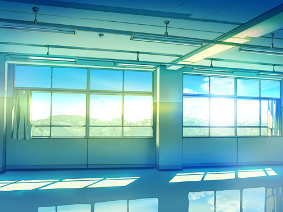
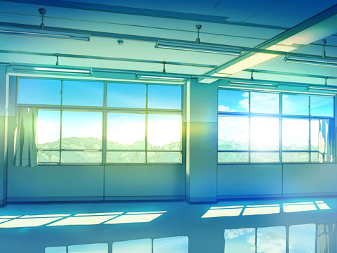
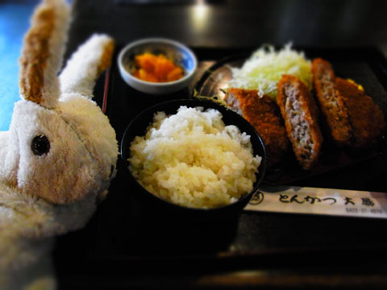
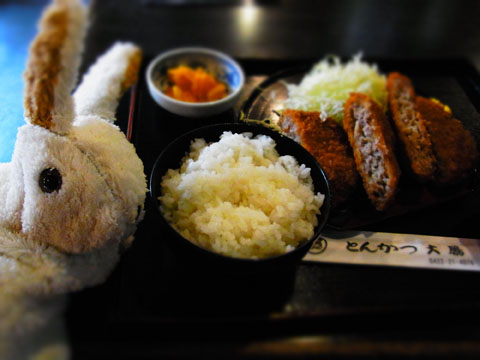

- 第１話 潮騒祭りの夜
- 第２話 庄屋の屋敷
- 第３話 旅の始まり
- 第４話 怪しい契約
- 第５話 濁流
- 第６話 男をダメにするアリスロッテ
- 第７話 賞金稼ぎと都合のいい女
- 第８話 オッカネ山のコジロウ
- 第９話 雛菊牧場の決闘
- 第10話 愛はキャッチ＆リリース
- 第11話 嵐の夜はホラー・ショー
- 第12話 グレイトフル・バース
- 第13話 アリスロッテは納得しかねる
- 次回予告
- あとがき
第１話 潮騒祭りの夜
Ａ ことのはじまり
「指は入った？」
「わかんないよぅ。遠隔盗視だと、デネア姉さまからの視界しか見えないんだってばぁ」
「いま、キャバレーロが上。右手は胸のあたり。感じる？」
「だから見えるだけなん――あっ！」
「なに？」
「タケノコ見えたかも！ 一瞬だけ！」
「えっ!? どんなだった？ たってた？」
「いや、一瞬すぎて……」
「指は？」
「いきなりキッス来た！ あっ！ 目ぇ瞑った！ 見えない！」
「ベルトはずしたよ！ はじまるよ！ いよいよ！」
「あーんもう！ デネア姉さま、目ぇ瞑っちゃってるから見えないんだよう！」
春先。《潮騒祭り》の夜。
邑の主催で、成人を迎えた若者たちだけのパーティが開かれ、夕方になると成立したカップルがそこいらの木陰で『いとなみ』をじはじめる。今年から従姉妹のデネア姉さまが参戦、憧れのキャバレーロ狙いでいくっていうから、わたしとリズ――リズってのは親友、リズムリンツ。よくいっしょに遊んでるの――はもうワクワクが止まらなくて、こうしてこっそり様子を見にきた。
「いわゆる出歯亀ですな」
「ちがうの。わたしたちは見守ってるの」
「魔法まで使って」
「使えるもんは使わないと」
わたしはアリスロッテ。魔法使い。
フリークエンシー・カタストロフってわかる？ 世界規模で発生した時間軸異常なんだけど、それ以来、14歳だか24歳だかわからなくなってしまったふつうの女の子。わたしが魔法を使えることは、リズとお母さんしか知らない。わたしは魔法で、リズは裸眼で、木陰から姉さまたちの『いとなみ』をのぞき見にきた。
キャバレーロがデネア姉さまのからだに触れてると聞いて、思わずじぶんの手もからだに這わせてみたけど、きっとリズも一緒。お互い目を合わせないようにしてるけど、まあ、やることは同じ。
「揉んでる？」
「キャバレーロは紳士だからいきなり揉んだりはしないよ」
「じゃあ、こんな感じ？ 優しくふわっと撫でる感じで」
「左手は？ 指はどこ？」
しきりに気にしているということは、彼女の指も股間でスタンバイしている。わたしもそう。焦らしに焦らされて、あたりは切ない匂いであふれてる。
「紳士だけど指は入れるの？」
「そのための指でしょう？」
「エロい～キャバレーロエロい～」
「待って」
不意にリズが醒めた声をあげるけど、わたしはさっきから視界を遮られたまんま――
「そろそろ目ぇあけてよ！ デネア姉さま！」
真っ暗闇――
「タケノコ見ようよぉーっ！」
「デネア姉さま、目ぇ開けてるよ。ねえ、アリスロッテ！」
――って、えっ？
どういうこと？
いつの間にかリンクが切れていた。遠隔盗視は精神系の魔法、相手の気が緩んでないと効かない。これが途切れたということは、つまり……？
「キャバレーロもベルト締めてる。何か起きたみたい」
「ええっ!? 終わり!? どうして!?」
かんかんかんかんかん かんかんかんかんかん……
ふと５連打で響く鐘の音が耳に入った。
「５連打ってことは、警戒警報？」
「うん。いつから鳴ってた？」
リズとふたりで首を捻る。
「わかんない。のぞきに夢中で」
「まったく、わたしたちって」
集落の方から駆けてくる小さな影が見える。
「おーい！ 沖にクジラが来てる！ それに――」
顔役の声。人影は砂浜に出て、今年の潮騒祭りのリーダーに声をかける。
「クジラ？ クジラって言った？」
「クジラで警戒警報？」
クジラはいつものことだった。潮騒祭りだってクジラの神ケトゥスに捧げる祭り。慌てることじゃない。
「顔役はなんて言ってる？」
「よく聞こえないけど……幽鬼がどうこうって……」
「幽鬼!?」
幽鬼は異界の……ええっと、いわゆる魔物。
「……って、それだっていつものことでしょう？」
「たくさん出てるってことじゃない？」
「たくさんって、どのくらいよ。んもう」
鐘の音はやまない。
「お祭り、終わっちゃうみたい。みんな引き上げてくる」
浜の方を見ながらリズがこぼす。
「帰るしかないかー。わたしたちもー」
「ええ～っ！ こんなに盛り上がってるのに、生殺しはやだぁ～っ」
「なんでわたしたちが盛り上がってんの、って話よ。ほらほら。帰るよ」
「ええ～っ。うち、お母さんいるから。ここで最後までイッてから帰る～」
「ここ、ひと通るからね？ 置いていくよ？」
「うえ～ん、置いていかないで～」
立ち上がって尻の砂を払うと、空気が変わっていた。リズは空を仰いで息を呑む。
「どうしたの？」
その視線の先、空には無数の幽鬼が舞う。
見たことのない数。まるで羽虫の群れ。海岸からも悲鳴が上がる。裸のまま小舟から躍り出てくるものの姿もある。
「何か起きるの……？」
「わかんないけど……」
わたしたちの住む双子原は古い邑だった。水産物と農作物を特産とし、邑のはずれには城壁が築かれている。二本の小さな川に挟まれた豊かな城塞都市。魔物の襲来には備えを欠かさなかった。だけどこの数は……
「観光客のなかに魔法院のひとがいたでしょう？ そのひとがなんとかしてくれないかな」
「なんとかって……ひとりでしょ？ この数をなんとか？」
じゃあ、どうすればいいんだろう。わたしのお母さんも魔法は使えるけど、戦ってるとこは見たことない。わたしだって同じ。それに逃げようにも、この数じゃ。
「君たちもいたんだ」
戸惑っていると、浜の方から戻ったキャバレーロが声をかけてきた。
彼の父は准爵リフト・クロワ。キャバレーロもとうぜん貴族、クロワ家の跡取り。彼をこの庶民の祭りに連れ出せた時点で、じつはデネア姉さまはもう勝利していたんだ。
「やだ、あなたたち、もしかしてのぞき？」
うしろからデネア姉さま。いきなり図星。
「わ、わたしたちは、ついさっき」
「そう、雲行きが怪しくなってきたから……」
なんて取り繕ってはみたものの……デネア姉さまは白い目を向ける。
「はいはい。たまたま通りかかった、と」
呆れ顔のデネア姉さまの肩に、キャバレーロが優しく触れると、姉さまの顔は蕩けるように綻んだ。だれがどう見たってベッタベタの恋だ、これ。
「幽鬼は消防隊のほうで抑えるらしい。君たちは役所前の広場に行くといい。そこに結界を張る」
低く澄んだ声は清涼剤。これがデネア姉さまのものになってしまうのかー……と、ふとキャバレーロの頬にデネア姉さまの口紅がついてることに気がつく。
「け、結界って……？」
話は続けてみるものの、ちょっと目が泳ぐ。
「ティーサンができるはずだ。あいつは寺生まれだ。今日の祭りには来てないみたいだけど、やってくれるよ。探してくる」
「待って」
「まだ何か？」
ええっと、口紅つけたままだとアレかなぁ、というか、これ言ってもいいのかなぁと、デネア姉さまに目配せしたりして、ほら、あの、なんていうか、察してよ。
「あっ」
「どうした、デネア」
「口紅……わたしの……」
そう言われてキャバレーロは手の甲で口を拭った。
「口じゃなくて、頬っぺ……」
と、デネア姉さまが顔を赤くすると、キャバレーロは真っ赤になって頬を拭う。くーっ。もう、たまらんなこの男。ふだん見せない照れ顔がもう。
「ハンカチあるから！」
姉さまはポシェットからハンカチを取り出して、わたしとリズに「どうせぜんぶ見てたんでしょう？」と言わんばかりに眉を寄せて見せた。上背のあるキャバレーロの顔に腕を伸ばすと、柔らかな胸のふくらみがたゆんたゆんしている。その姉さまの体をゆうゆうと包み込みそうなキャバレーロの肩幅。
「ごめん、ありがとう」
ハンカチで頬を拭く姉さまの左手がちょこんとキャバレーロの胸板に触れてるのは、狙ってやってんのか、素なのか。その手をキャバレーロは軽く握って――
「ねえリズ、これってなんの罰ゲームなのかな」
「さっきの続きやっていく？」
――って。
キャバレーロは、すぐに呆けているわたしたちに気がついて、
「君たちは早く広場へ！」
と、さっきまでデネア姉さまの甘い蜜を啜っていた長い指を広場へと向けた。
「うん、行こう！」
これ以上邪魔しちゃ悪いよ。
リズとふたりで駆け出すと、キャバレーロとデネア姉さまは石垣に沿って入江の方へ。ティーサンの寺がある方角。
「さっきの続きをやるつもりだよ！ 追いかけよう！」
すぐに立ち止まって指さしてみるものの、
「あんた、バカなの？」
リズに肩をつかまれて、方向を変えられた。
「ひゃっほう！」
全速力で市場通りへ出ると息が切れた。
「なんで全力で走るのよ！」
髪を乱して追いかけてきたリズのくるくるの巻き毛。汗で頬に貼り付いて、王様ヒゲみたいになってて、思わず吹き出した。
「なに？ どうしたの？ わたしどこかおかしい？」
空には無数の幽鬼。半鐘はずっと打ち鳴らされてる。だのにおかしくて、息が切れて、その場に膝をついて腕をたてた。リズも息を切らして、
「どうなっちゃうんだろうね、この邑」
と、腰を降ろした。
虫の声が聞こえる。
四つん這いになると、シャツの隙間から華奢な胸がのぞいた。
「わたし、四つん這いになってやっと、デネア姉さまの半分だ」
「何の話よ」
「たゆんたゆん」
リズは呆れる。
「キャバレーロはたぶん、気にしないと思うよ」
「じゃあデネア姉さまとくっつかないで、わたしとくっつけばいいんだ」
「そうだね」
しらけた顔でリズは吐き捨てるけど、わたしには魔法がある。じつは不可能じゃないんだ、いろんなことが。
「あのね、リズ。指、見て。じぶんの」
「指？」
リズは小さく聞き返すと、じぶんの指を見て息を呑んだ。
厳密に言うと指じゃない。指があるはずのじぶんの手。そこには何もない。
「なにやったの、あんた！」
「ここにある」
わたしは手のひらにリズの指を生やして見せる。リズはまた息を呑む。彼女はその指をくいくいっと動かして――
「魔法ってこんなことまでできるの？」
やっと声にする。
「そう。ディメンション系の魔法。だから、キャバレーロがデネア姉さまにタケノコしたのをわたしのなかに横取りすることだってできるんだよ」
リズがさーっと引いたのがわかった。
「やんないけど」
「でも、ぜったいやんないって保証はある？」
「デネア姉さまを裏切ったりはしないよ。もちろん、リズも」
リズは露骨に嫌な顔をした。
魔法使いはなんでもできる。
嫌いなやつの大動脈中にムカデを発生させることも、尿道結石を急成長させることも、ウンコを口まで逆流させることも、頭で思い描けることはたいがいできる。
だから、わたしのような魔法使いは、たいがいどこに行っても忌み嫌われるし、ほとんどの場合、牢屋のなかで一生を終えるらしい。
そんな不幸な魔法使いを救うために設立されたのが、魔法院。
親元を離れて魔法院で３年学ぶと、魔法院の紋章の刻印をもらえる。そしてその刻印があると魔法院の掟を破れなくなる。刻印は強力な精神束縛の呪文。掟に反したが最後、廃人になる。魔法使いはその刻印と引き換えに、ようやく社会に迎え入れられる。
お母さんの左手の甲にもその刻印がある。魔法院ではかなりの優等生だったと本人から聞いた。その話を聞いて、わたしは魔法院へのあこがれをつのらせたけど、お母さんはわたしを魔法院に通わせてはくれなかった。おかげでやりたい放題。
――アリスロッテ。邑に悪い人がやってきたらどうする？
――戦う！
――もしその悪い人が、ただお腹をすかせてるだけのひとだったら？
――うーん。ごはんを食べさせてあげる！
――そこにもし、魔法院のひとがきて、『戦いなさい』って言ったら？
刻印を受けたら、魔法院の掟が絶対になる。そしてそれは、決して正しいとは言い切れない。
じゃあ、わたしが正しいのかなっていうと。それは。
Ｂ アリスロッテ始動
さっきからずっと不気味な低い音が響いている。海鳴りとも違う。それはときに笑い声のようにも聞こえ、わたしたちを慄かせる。
広場ではすでに寺生まれのティーサンが結界を張って、今年成人した仲間たちが邑のひとを誘導したり、励ましたりしていた。
若者たちが中心になって企画して運営する《潮騒祭り》――設営に、料理に、出し物――まるでその続きのような光景。わたしたちはこうして、この邑を支える『おとな』になっていく。その大切な日だっていうのに、どうしてこんな。不安に震えていると、どよめきの声があがる。皆一様に、海の方を見ている。
「どうしたの？」
「あれ……幽鬼が集まってる……」
海の上空には幽鬼の群れが暗雲を成していた。
「まさか……真鬼になるのか……？」
――幽鬼が集まり、真鬼となって世界を滅ぼす――それはわたしたちの国……いや、この世界に広くつたわる伝承。みんなちっちゃいときから、何度も聞かされてきた。その真鬼が、姿を現そうとしている。
「そういえば魔法使いがひとり滞在していただろう？」
みんな不安。
「関係があるんじゃないのか？」
まるで責任をなすりつけるかのような声があがる。
「関係があるって、それは良い意味で？ 悪い意味で？」
リズはちょっと苛立ってる。
「わざわざ東の果てのこんなところまで来るんだ。良い意味なわけがない」
魔法院の予言では、世界の寿命はあと３年。３年後には一斉に目を覚ました真鬼たちによって世界は滅ぼされてしまうと云う。それが大陸の東端、この邑で始まった――わたしだけじゃなく、みんなそう感じてる。子どもがいるような大人まで顔を覆って泣いているし、ずっと祈りを捧げたままのひともいる。
リズが不安げな顔でわたしの顔を見る。がちがちと歯を震わせて。
も、もしかしてわたしに魔法でなんとかしろと？
「そんな顔で見られても困るよ……」
わたしに魔法が使えると言っても、敵は世界を滅ぼすようなやつでしょう？ キャバレーロを覗くのとはわけが違うもん。
口に出せないでいたら、リズ。
「いままでありがとう」
って。
なにそれ。ありがとうって。どういう意味よ？ なんか、泣いてるし。なんで？
「成人して、おとなになって、結婚して、この邑で家族を持つのが夢だった」
途切れ途切れにやっとの思いで言葉にして、しゃくりだす。それに釣られたのか、まわりからもすすり泣く声が上がり始める。
「これで、最後だね……」
涙でボロボロ。
「待って！ まだ死ぬって決まったわけじゃない！」
「死ぬ……？」
あ、しまった。その言葉を聞いて、子どもたちがわんわん泣き始めた。死ぬなんて言っちゃいけなかった。あーもう。こうなったらもう、わたしがなんとかするしかないじゃない。
「わかった。わたしがなんとかする。リズはここにいて」
なんとかってー？ じぶんでもわかんないけどー。
「アリスロッテが……？」
「そう。わたしが。だけど、わたしがなんとかする姿を、決してみんなは見ないようにして！」
って、わたしは恩返しに来た鶴か。
結界を出る。
「ちょっ！ どこに！」
今年成人したひとたちが止める。
「お母さんがいないの！」口実だけど。「探してくる！」
とにかく、行かなきゃ！
リズにわたしが魔法使えることバレちゃったのは、悪い大人から庇ってあげたときだった。まだ12歳だったと思う。お寺の賽銭をくすねたのがバレて、それでつけこまれるようになって、エロいなんて言葉じゃ済まないあれこれの仕打ちを受けて、「復讐しよう」って、わたしから持ちかけた。
その数日後、幼いリズを犯していた男は水牛に犯されて、直腸破裂で死んだ。
「なんでもじぶんから菊の花冠を差し出したそうだ」
「それで欲情する水牛も水牛だ」
と、影で囁かれたけど、わたしが魔法でそう仕向けた。魔法のことよく知らないひとには、そんな魔法があるなんて想像もつかないだろうけど。
同じように、水牛に交尾されて死んだ男がほかにもふたりいる。うちひとりは、最後まで反省の色が見えなかったので、生き返らせて２回殺した。２回目はさすがに反省の色が見えたけど、殺した。
おかげでその水牛は『水牛様』として祀られるようになったけど、
「祀られてしかるべきはわたしたちじゃない？」
と、リズは口を尖らせた。
わたしでしょ、祀られるのは。
夕陽が燃え落ちて、浜が宵の闇に包まれる頃、積み上がった雲に絶え間ない雷光が飛び交い、その空には無数の幽鬼が舞う。
浜に出ると……お母さん、エレイン・ビサーチェの姿が見えた。
「お母さん!?」
「なんだ、おまえまで来たのか？」
お母さんは浮遊している。わたしも苦手な浮遊魔法で体を浮かせてみると、海の一部が激しく波立っているのがわかる。
「クジラがいる。幽鬼が動きを封じているんだろう」
「このクジラがケトゥス？」
「どうだろうな。だが、ケトゥスの使いには違いない。クジラへの攻撃は、わたしたちの邑、双子原への攻撃だ」
上空に無数の幽鬼が飛び回り、そのシルエットはなにかを形作ろうとしている。
「真鬼が生まれるの？」
「ああ、おそらくな」
周囲にはお母さんが作り出した光の球が20個ほど浮かんでいる。
「攻撃しないの？」
「いまはまだ無駄だ。実体化したら一気にフレームランスを浴びせる」
「これぜんぶ魔法球？」
魔法球は攻撃魔法の基準となるエネルギー体。ここから様々な形の魔法を生み出すことができる。
「いや。異界点だ。それぞれが13発のフレームランスを放つ」
異界点……魔法球を生み出す力の源……13発のフレームランス掛ける20として、260発……。
お母さんはその横で更に光球を生み出している。
「わたしも」
異界点は無理だったけど、魔法球だったらわたしにも出せる。だけど７つが限界。８つ目を出すとどれかひとつが消える。
「そろそろだな」
眼の前には巨大な鬼の躯体が出来上がりつつある。雲のなかに走る雷光が、鬼の全身を舐めて照り返す。その体には闘気が脈動している。お母さんの顔をのぞくとひとつうなずく。いよいよだ。その刹那、上空から光の剣が降り注ぎ光球を消滅させる。
「魔法!?」
見たこともない魔法。射点を見上げても、術者らしき姿はない。
「ライトソード。硬化光の魔法。ランク20階位以上か」
お母さんも上空を見上げている。
するとたしかに、視界の隅を小さな影が動くのが見えた。
「来るぞ」
星に紛れて、無数の光の点が灯る。ライトソード。すべてがこちらへと向かってくる。お母さんはフォノ・プレッシャーを展開、ライトソードを霧散させる。続いて――
「プリズミック・ウォールを張る。敵を見失うな」
と、言われても、すでに見失ってる。
透明な三角柱がわたしたちの周囲に立ち上がり、視界は垂直のラインで分割される。ミラーハウス効果。その視界のなかに空中を過る影があるけど、無数のプリズムに反射されてどこにいるかはつかめない。
「マリウスか」
マリウス？ もしかして邑で見られたという魔法使い？
顔を上げるとお母さんはすでに４つの魔法球を展開している。闇、炎、雷、凍気……更に追加して、光。魔法球には目があって、敵のほうを追尾して睨んでる。
「アルケイン・レーザー？」
そう尋ねるとお母さんは頷いて、光球からレーザーを打ち出す。
５色のレーザーはプリズミック・ウォールに屈折、分岐して、蜘蛛の巣のようにあたりを駆け巡る。マリウスと呼ばれた魔法使いはその光の先端から逃げ回る。そしてこぼれた光のいくつかは真鬼の躯体へと走り、表皮を焼き焦がす。煮え立つ体液と、その焦げる匂い。真鬼が呻き声をあげる。だけどこちらに振り返ることはない。
「クジラを捕獲する気だ」
「クジラを？ どうして？」
あれ？
地上にデネア姉さまの姿が見えた。こっちを見上げている。もしかして、わたしを追ってきた!? いや、でもそれどころじゃない。マリウスからの攻撃、ディスク状の光が不規則な軌跡を描いて迫ってくる。お母さんはアルケイン・レーザーの一本を防御にまわしながら、更にマリウスを追い回す。プリズミック・ウォールを円筒状に再配置、その先端を真鬼へと向ける。
「ここから離れろ、アリスロッテ！」
「離れるって？ どうして？」
言い終わらないうちにわたしのからだは市場通りまではじき出された。ディメンション!? アルケイン・レーザー５本とプリズミック・ウォールを維持しながら、同時にディメンションまで？
浜辺にのほうに、舞い踊る５色のレーザー光が見える。円筒状に並べられたプリズミック・ウォールは、おそらく、真鬼のほうに向けられている。
「お母さん！」
呼んで聞こえる距離じゃない。
そういえば、デネア姉さまが取り残されている。
わたしのことが気がかりで追いかけてきたんだ！ わたしのせいだ！
駆け寄ろうとした次の瞬間、エクスプロージョン。巨大な爆風がプリズミック・ウォールの突端から真鬼へと吹き出す。真鬼の鼻先で小さな影がシールドを貼って攻撃を防いでいるのが見える。マリウスと呼ばれた魔法使いがいるんだ、あそこに。光から遅れること１秒、轟音が轟く。凄まじい熱が放出され、頭上の雲が晴れ上がっていく。プリズミック・ウォールでできた砲塔は、少しずつ崩壊し始める。お母さんが圧してるけど、マリウスも盾で凌ぎながら、魔法球を展開してる。
マリウスまで距離300メートル……コンセントレーションの魔法を使えば、ディメンションが届く……足元の石を拾い上げる。
この石をあいつの心臓にディメンションアウトさせる！
プリズミック・ウォールの一本が砕ける。お母さんは再度プリズミック・ウォールを展開、エクスプロージョンの出力を上げるが安定しない。大気が震えている。
コンセントレーション！ コンセントレーション!! コンセントレーション!!!
３つ重ねがけだ！
これで届く！
行けぇぇぇぇぇぇぇぇぇぇぇぇっ！
ディメンション!!! ハイ・ドラァァァァァァイヴ!!!
手のひらの上の石が消え、代わりに脈打つ心臓が現れる。
それはわたしの手のひらの上で大量の血液を噴き出す。
それを！
叩きつけて!!
踏み潰す!!!
マリウスのシールドがゆらぎ、お母さんのエクスプロージョンが圧す！
わたしたちの勝ちだっ！
お母さんのエクスプロージョンの光圧が一気に上がり、臨界を超え爆発を巻き起こす。巻き上がる砂塵、水柱、海面に沸き立つ蒸気が闇をかき消す。遅れて轟音が大地を舐めると、更に遅れて爆風が木の葉を散らした。
§
立ち上がると、お母さんの姿はなかった。
ふと踏みつけにしたあいつの心臓に視線を落とすが、もとの石に置き換わっている。
浮遊して見渡してもマリウスと呼ばれた魔法使いの姿はない。それに、デネア姉さまの姿も。
真鬼の姿が見える。
……倒したと思ったのに……！
ぐったりとしてるけど、両手にクジラを抱えている。
どうしよう。まだ何か手はあるはず。あいつにだって心臓はあるだろうし、石と入れ替えれば……でも、小石じゃ駄目っぽい。岩を？ そんなの無理でしょ。やったことないよ。
そうだ！ 水牛！ 水牛様を……、ええっと、っていうか、デネア姉さまは!?
「デネア姉さまっ！ いたら返事してぇっ！」
あたりを見回していると、真鬼を中心として大きな光の柱が立ちのぼった。
まぶしくて直視できないほどの光。
目を細めて見ていると、光の柱は上部からさらさらと光の粒になって流れていく……金切り声が空を切り裂く……これは……次元振動波だ……まさか、ディメンション？
こんな巨大な？
立ち上る光のなかで、真鬼が転送されていく……
……目を細めていると、目の前に見たことのない景色が映し出される……
まさか、転送先が見えてる……？
お城？ なんだこれ？
転送されてくる真鬼、石の壁、木の扉、……そしてその扉には、魔法院の紋章がある。
魔法院!? どうして見えてるの!?
第２話 庄屋の屋敷
Ａ 滝の出る牢屋
庄屋様の屋敷の薄暗い地下室。窓もない。
そうか。魔法使いだってバレるとこんなところに幽閉されるんだ。
庄屋様の屋敷には最新式のモックストイレがあるって聞いたのに、この部屋のトイレは床に穴が空いてるだけ。それに柄杓と水瓶。ウンコしたあとは柄杓で水をかけて、指で洗い流して……まあ、普段と同じだけど、それが部屋にあるもんだから、臭い。
でもまあ、じぶんのウンコだもんな。文句は言えないな。
とは思うものの、飲水と手洗い用の水を同じ瓶に入れるのはどうだろう。
疲れすぎたせいか、あるいはフリークエンシー・カタストロフのせいか、時間の感覚がない。事件から百年くらい経って、リズが面会に来てくれた。
「やあ、リズー。百年ぶりー」
「二日しか経ってないよ」
鉄の扉の小さな小窓越しに、相変わらずの顔が覗く。
「こっちでは百年経ったの」
「はいはい、寂しかったね、アリスロッテ。そんなことより、あなたのお母さん、エレイン・ビサーチェは大丈夫だったみたい。いまここの離れの棟で療養中だって」
ここで？ お母さんもここにいるんだ……
「デネア姉さまは？」
「みつからない。爆発に巻き込まれたんじゃないかって」
「そうか……」
だとしたらお母さんのせいだ。あんなに苦労したのに、クジラは連れて行かれたし、被害が広がっただけ。いっそ何もしないほうが良かったのかもしれない。
「考えすぎないでね、アリスロッテ。デネア姉さまだって、じぶんから結界から出たんだし、あなたのせいじゃないよ」
リズがわたしを庇ってくれる。
「うん……」
わたしは目の焦点も定まらない。
「だから、元気だして」
「じゃあ、キャバレーロはいまフリーなんだ」
無意識に口にしていた。
「はあ？」
リズの声のトーンが変わる。それがわかってても、
「わたしにもチャンスが巡ってきた……」
わたしの口は、わたしを無視して勝手なことを喋りだす。
「あんた、デネア姉さまが死んだかもしれないってときになに言ってるの？」
思考が定まらない。
「ごめん。実感がないの」
涙がポロポロこぼれてきた。ああ、そうか、悲しいんだ。悲しいから泣いているんだ、わたし。そう気がついて遅れて悲しみがやってきて、止まらなくなる。
「わかった。今回だけは疲れてたからってことで許してあげる。あんたには実感ないかもしれないけど、みんな必死になって亡骸を探してんだからね。表ではぜったいそんなこと言わないでね」
亡骸……デネア姉さまの……
「見つかってないの？」
「うん。大爆発だったから、砂に埋れてるかもしれないし、波にさらわれたかもしれない」
「そうか……でも見つかってないってことは、生きてるかもしれないってことだよね？」
「うん。可能性で言えばね。ていうか、魔法で探せないの？」
「いまは無理」
「なんで？」
「あのね、この部屋、魔法を使うと滝のように水が流れ込む仕掛けがあるの……」
「そんな仕掛けが……」
「水が部屋に貯まると、床下のウンコが全部浮き上がってくるの……うっうっ……」
「それは辛い……」
わたしだって、ここから出たいのはやまやま。だけど、そうもいかない。トイレの穴が外に通じてるかもしれないと思って手を入れてみたけど駄目だった。
「しかももうウンコしちゃったから、二度と試せない……うっうっ……」
「あー。しちゃったかぁ」
「庄屋の家はモックストイレだっていうから、楽しみにしてたのに」
「投獄されてんのに、そんなに高級なトイレ使えるわけ無いでしょ」
「真鬼を倒したヒーローとして招かれるんだと思ってた……うっうっ……」
「それねー。わたしも誇らしかったけどねー。けっこういろんなひとが目撃してたんだよ、あなたの活躍」
「キャバレーロも？」
キャバレーロもわたしの魔法、見てくれてたの？
「彼は別。デネア姉さまのこと探してて、それどころじゃなかった」
「ああ……」
肩をすぼめてるとリズは鼻でフッとため息を吐いてみせた。
「わたしが庄屋に掛け合ってあげるよ。魔法で悪いことしたわけじゃないし、アリスロッテはいい子ですって」
「ありがとう！」
「あんまり期待しないでね？ 庄屋は石頭だから」
翌日。
「駄目だったぁー！ 庄屋、ほんっと、わからずや！ ……ていうか、臭い！ 昨日よりすごい臭い！」
あー、やっぱりか。庄屋イズわからずや。あー、やっぱり。昨日より臭い。あー、それもやっぱり。そう。そうなのよ。ぜんぶ予想通り。わたしここで死ぬの。
「てか、なんでこんなことに？」
「庄屋の息子が鍵あけて入ってきた」
「はあ？」
「魔法使って撃退したら、滝のように水が出てきた……」
「それでウンコ水に浸かってた、と？」
「あたり」
「庄屋の息子は？」
「泣いて出ていった」
「ええっと……キャバレーロも来てるんだけど……どうする？」
「えっ!?」
「ねえ、キャバレーロ！ アリスロッテ、ウンコまみれだけどどうする？」
「み、見ないでっ！ 匂いも嗅いじゃ駄目！」
「ああ、うん。アリスロッテが見てほしくないって言うんだったら見ないよ。匂いも嗅がない。口で息をするよ」
鉄の扉の向こうから声が聞こえる。
ああ……キャバレーロ、ほんといいひと……。
「……なんかもう、いっそ嗅がせたいくらい」
「いまなんつった？」
「あ、ええっと、なにも」
うっかり口に出してた。
キャバレーロはデネア姉さまのことを聞きに来たんだと思う。それなのにわたしを気遣って、どんな魔法を使うの？ 何歳の頃に気がついた？ いままで気づいてあげられなくてごめん。って、そんな話を振ってくる。
「滝が出るとちょうど、ヘソくらいまで水が貯まるの」
「それは災難だね」
「だから、水の出口のところにぶら下がって、足をあげておけば、水で部屋は綺麗になって、あとは水が引くのを待ってれば良いはずだったの」
「はずだった？ 試したの？」
「うん」
「で？」
「滝の勢いが凄かった」
「流された、と」
「うん」
キャバレーロは口で息をしながら鼻声で話した。話題はあちこちに寄り道しながら、本題に触れる頃には、ふつうの声に戻っていった。
「デネアは、最後はどうだったの？」
って、不安げな声を、少し震わせて。
「ごめんなさい。見てないの」
鉄の扉の向こう。姿は見えなかったけど、キャバレーロが声を殺して泣いているのがわかった。
「いいんだよ。アリスロッテが謝ることじゃないから」
わたしが渾身のウンコネタを語ってるときも、ずっと声は震えてた。
「わたしがもっと機転を効かせていれば……」
「いいんだって。もう終わったことだし」
せめてあのとき……遠隔盗視を使ってたらデネア姉さまの視点がわかったのに……なんでわたしってば肝心なとき、真鬼の視点で魔法院の様子なんか……見てたんだろう……？
真鬼の……？
視点……？
あれ……？
「どうしたの？」
あのとき見えた景色は、たぶん魔法院だ。そこにたしかに、真鬼が転送されてくるのが見えた。でも、真鬼の視点で真鬼が見えるわけがない……じゃあ、あの景色は……
「もしもーし！ アリスロッテ聞こえてるー？」
「わかった！」
思わず鉄の扉の格子窓に飛びついた。
「わたし……デネア姉さまの視点で見てたんだ！」
「デネアの？ どういうこと？」
「真鬼がディメンションするとき、魔法院が見えたの！ 紋章があったから間違いない！」
「まってまって、わかるように言って！ 結論だけ教えて！」
「デネア姉さまの視点で、魔法院が見えた！ だからデネア姉さまは魔法院にいる！」
「それは確かなのか？」
翌日もリズは来てくれた。
「ごめんね、力になれなくて」
わたしは今日もウンコまみれ。もう慣れた。
「キャバレーロのお父さんからも庄屋様に相談してくれたみたいだけど、駄目だったって」
「彼のお父さんって准爵でしょう？ 貴族でも駄目なんだ……」
庄屋は領主様に任命されて邑の運営を預かるひと。偉そうにしてるけど、身分はあくまでも庶民。だのに、貴族の言うことが聞けないだなんて。
「領主様の命令で、この件は庄屋一任。お上は魔法院とは関わりたくないんだよ」
「なんで魔法院が。関係なくない？」
「そんな気はするんだけどねぇ。キャバレーロはキャバレーロで魔法院に行くって言ってるけど、親に反対されてる」
デネア姉さまを助けにいく気なんだ……
「わたしはどうすればいいんだろう」
リズは扉の向こう、うずくまったまま寂しそうにこぼす。
「どうすればって？」
「わたし、アリスロッテが魔法で助けてくれるから生きてこれたんだよ。あなたなしで、どうすればいいの？ この邑で」
「大げさだなぁ、リズはー。わたしなんか、一生この牢屋だよ？ それに比べりゃあ、あなたは天国だよ」
「うん」
という彼女の返事も虚ろ。
「でもさあ、あなたのお母さんも悪いと思うのよ。ちゃんとあなたを魔法院に通わせてたらこうはなってなかったわけでしょう？」
それは……
「いろいろあるんだよ、きっと」
「いろいろって、便利な逃げ言葉」
「魔法院に行きたいと思ったことはあったよ。ちっちゃい頃。でも、刻印をもらったら規律でがんじがらめだよ。わたし、耐えられると思う？」
「わたしは、まともなアリスロッテとも話がしてみたいよ」
「まとも!? いまのわたしがまともではないと!?」
「逆に聞くよ。どのへんがまともだと思う？」
「まともだよ。世間がおかしいんだよ。恋だってしたいし」
リズは鼻で笑った。
「ウンコまみれのウンコ姫が、恋ですか。ほっほっほ」
まあ、苦手だけどさ。恋とか。もっときれいで女らしいひとがするものでしょう？ リズだって、恋は苦手なんだと思う。きれいだし、背も高いのに。男のひと見るとおどおどしてるし。ああ見えて、お見合いして結婚するタイプ。
「だから、リズはわたしの代わりに、ちゃんと恋をして」
「無理。わたし、お見合いでいい」
「だめ。ちゃんとじぶんから恋をして、人生楽しんで。わたしがやりたいこと言うから、ちゃんと覚えておいて、わたしの代わりに叶えて」
扉の向こう、ため息だけでリズは呆れてみせた。
「わかった。言うだけ言ってみ」
「まず、恋をして。それから、タケノコして。ちゃんと愛し合うやつ。したら報告に来て。もちろんキッスも、あとお互いの股間ペロペロ舐めたりとか、フルコースで。それから子ども生んで。家族を作って。浮気もして、浮気相手の子どもも生んで――」
「難易度高いわ」
「あとは裸エプロンと――」
「裸エプロンの順番、違うくない？」
「夫さんには裸ネクタイさせて、お花畑で追いかけっこするの」
「裸エプロンと裸ネクタイで？」
「つかまえてごらんなさい、うふふ、うふふふ～」
「まてまて～、あはは、あははは～」
リズは臆病な子。じぶんから恋をして、告白したりなんてしない。だれかに言い寄られて、半ばしょうがなく家庭を持って、そのなかに幸せを見つけるんだと思う。
「恋もタケノコも美味しいんだよ、ぜったい。だから。ね」
「うん。でも、女なんか知らない無垢な少年とじゃないと、わたし、恋愛無理」
「なんなのよ、その願望」
経験でひとは大きくなるなんて嘘だ。経験の半分はひとを萎縮させる。
「あ、そうだ。それからモックストイレ」
「ああ、それならもうクリア」
「えっ？ モックストイレ使ったことあるの？」
「うん。支援者の家にあった」
リズは12歳から施設にいた。その施設の支援者の家に招かれることがたびたびあった。
「マジで!? どうだった？」
支援者ったって、いろいろだけど。善意で支援してくれるひとなんか、いない。
「うーん。くすぐったいっていうか、恥ずかしいっていうか」
モックスってのは、ゴブリンやコボルトみたいな小型の亜人。亜人のなかでは圧倒的に人懐っこく、優しくて、何でも食べる。そのモックスを調教して、用を足したあとに菊の花冠を綺麗にしてくれるよう躾けたのがモックストイレ。金持ちの家のトイレはほとんどがそう。
「モックスが舐めてくれるってことは、柄杓で流さなくていいんだよね？」
「そう。あれねー。便利すぎてくせになりそう」
「じゃあ、爪の間にウンコ詰まることもないんだー」
「うちは海綿で洗ってる。あんたんとこ指なの？」
「うん。指のほうが綺麗に落とせるって、お母さんが」
「そういうのこそ、魔法でなんとかならないの？」
「だよねー。でも、そのためのモックスでしょう？ モックスってそういう生き物だと思う。人類を幸せにするために生まれてきた」
Ｂ 交換条件
地下室は離れの倉のなかにあった。
何日ぶりかに陽の光のなかに引きずり出されて、勝手口から屋敷へと通された。メイドがルームシューズを差し出す。庄屋はなんか、ずっと偉そうにしてる。
「アリスロッテ。投獄して済まなかった。しかし、野良の魔法使いを野放しにしたと魔法院に知れたら、こっちが恨みを買う。許してくれ」
ええっと。許しますっていうのも変だし、ありがとうって気持ちでもないし。
「ああ、はい」
これでいいのかな？
廊下へ出て、中庭をぐるっと回って、奥の棟へ。その一室、壁には豪華な絵が掛かっている。趣味は悪い。庄屋の趣味。庄屋は嫌い。笑っているときも困り顔に見えるハの字の眉毛が嫌い。庄屋は小間使を廊下に待たせて、部屋に入った。
「おまえに非がないのはわかっている。むしろ邑のために戦ってくれたこと、誇りにすら思っている。だがこちらにもいろいろと事情がある」
いろいろと……便利な逃げ言葉。続けてしばらく言い訳がましいゴタクを並べたあと、
「牢から出すのにはひとつだけ条件がある」
と切り出した。
「条件？ 条件とは？」
庄屋は部屋の前に控える小間使に、
「エレインをここに」
と、伝えた。
「お母さん、もう大丈夫なの？」
「ああ。大事な話だからな。いっしょに聞いてもらうよ」
すぐにノックの音、お母さんが部屋に通された。
「四日ぶりだな、アリスロッテ」
顔を見たら涙がこぼれてきた。わたし、24歳なのに……。これじゃ14歳の子どもみたい。
「お母さん……」
「泣くな、アリスロッテ。庄屋様の前だ。恥ずかしいぞ」
「ああ、わたしなら構わん。落ち着いてから話そう」
「いや、わたしから話す。アリスロッテ。おまえには魔法院に行ってもらう」
「魔法院に？」
「そこで刻印を受けてくることが、おまえを開放する条件だ。庄屋様と話し合って決めた」
お母さんが庄屋を指し示すと、続きを庄屋が引き取る。
「エレインも小さい頃に預けられて学んだ場所だ。エレインだけではない。まっとうな魔法使いはみなそうしている。アリスロッテにも悪い話ではないだろう？」
「でも……」
魔法院は全寮制の学校。お金がかかるはず。
「金のことか？ それなら心配するな。わたしが支援する」
庄屋も庄屋の息子も大嫌いだった。狩りのときによくお母さんをお供に指名してくれたけど、いつもお母さんに馴れ馴れしくベタベタしてくる。奥さんに先立たれて長い。それ以来ずっと。ずっとだ。こんな奴に借りを作りたくない。
「お母さんはいいの？」
「アリスロッテ。わたしはエレイン・ビサーチェだ。『エレイン・ビサーチェはそれでもいいのか』と聞いてくれ」
お母さんの声は凛としていた。
「わかんない。どういう意味？」
「おまえの母としての決意ではない、アリスロッテ。おまえというひとりの未熟な魔法使いをどうするか、双子原の運営に関わるひとりの人間としての決意だ。母と娘だということは忘れろ。ひとりの魔法使いとしてどう生きるか、答えを出すんだ」
急にそんなことを言われても……
「もう少し考えちゃ駄目？」
「それはデネアを救い出せるチャンスを引き伸ばしてまで考えることか？」
そっちもあった。
「デネア姉さまのこと、聞いたの？」
「ああ、リフト准爵からな。詳しいことは、あとで聞かせてくれ」
お母さんの言葉を待って、庄屋様が続ける。
「魔法院は大陸の西の外れ、テルル精王国にある。街道をイルガヤの街まで行けば、そこのポータルからワープできる」
「イルガヤって、名前は聞いたことあるけど、じゅうぶん遠いんじゃない？」
「ああ。女の一人旅では不安があるが、キャバレーロ殿を同行させる」
マジでっ!?
「生真面目が立って歩いているような男だ。あの男なら間違いはあるまい」
「行きます！」
って、それを最初に言ってよ！
「決意してくれたか！」
「わたし、魔法院に行ってデネア姉さまを探し出して、それから優秀な成績を修めて刻印を受けて帰って参ります！」
デネア姉さま！ わたし、デネア姉さまを助けに行きます！ だけどそれには条件があります。それは！ キャバレーロと一緒に歩いて……手をつないで……いいや、そんな奥ゆかしいことでどうする！ わたし、キャバレーロのはじめてのひとになる！ 心配ご無用、お姉さま。男というのは、女のひとりやふたり知ってこそ輝くのです！ わたし、アリスロッテ・ビサーチェが、一皮剥いたキャバレーロをお届けに上がります！
モックストイレは廊下に出て突き当り、暖簾の先にあった。
なかに入ると、入り口付近の小さい椅子にモックスが座っていた。
うちのトイレよりぜんぜん広い。さっきまで入れられてた牢屋と同じくらいの広さ。
モックスと目が合うと、向こうもじっとこっち見てる。なんとなくニコニコしてるように見える。便座に座って用を足している間もずっとこっち見ていて、音が途切れると、おっ、出番ですね、みたいな顔になる。
じょろ。
おやおや続きがありましたか。
じょ。
３回目ですか。たまにいらっしゃるんです。
「そんな顔で見るなぁーっ！」
終わって立ち上がると、椅子から降りててこてこ歩いてくる。
お尻のほうに回り込んで……
「んーっ。んーっ」
なんか訴えてる。
腰を曲げて……？ 前かがみになれって？
「こう？」
「ん。ん」
言われたとおりにしてみると、いよいよはじまる。
後ろからスカートをめくって、両手で太ももをつかんで、顔を押し当てて……
「ひやぁぁぁぁぁぁぁぁぁぁ～～～～～っ！」
舐めてる！ モックス、舐めてる！ わ、わたしの、な、舐めてる！
こ、これは素晴らしいですよ、みなさん、ゴブリンの舌ではザラザラしてるし、コボルトは鼻の周りの剛毛でお尻に優しくない、モックスならではの肌触りとフィット感。このラグジュアリーな体験、お金持ちがこぞってモックストイレを導入する気持ちがよーくわかりますわよ。
最後に菊の花冠を指で広げて確認する。
「ん。ん」
終わったらしい。
首輪に名札がある。
「コタロウ」
「ん。ん」
そうか。コタロウっていうのか。
コタロウは柄杓で瓶の水をすくって口を濯いでいる。
「そうかそうか。ちゃんと口をきれいにするんだな」
なんて合理的な。
あ、そうだ。前もやってくれるんだろうか。
「コタロウ、こっち」
ちょっと便座に片足あげて、前から舐めさせてみる。
が、コタロウ拒否！
前足をつっぱって全力で拒否！
「コ～タ～ロ～ッ！ 後ろは舐めても前は舐められんと言うのかっ！」
ちょっと時間がかかった。
時間がかかった言い訳を考えながら部屋に戻ると、お母さんと庄屋様の声が聞こえた。
「だから、わたしにだけは正直に教えてくれと言っているのだ。アリスロッテの父親は魔法使いなのかどうかだけでも！」
「何度も言ってるだろう？ あの子はわたしがひとりで生んだんだって」
「またそのような話を。そなたの遍歴を責めようというわけではないのだ。魔法院への書類には必要になる情報だ」
「タネの知れぬ私生児などざらにいる。『不明』でいい」
「あの子の蒼銀の髪は、北のガンフ峡では多く見られるという。父親はガンフ人だともっぱらの噂だ。そこまでわかってるんだ。隠すことはないじゃないか」
こりゃあ、タイミングがまずいことになった。部屋に入ろうにも入れない。
廊下に使用人が控えているけど、シカト。助け舟くらい出してよ。目配せもなんもなし。しょうがないので、トイレまで戻って、歌いながら部屋まで戻ってきた。
「たっだいまーっ！」
「よう、アリスロッテ。ご機嫌だな」
「牢から抜けられるのがよほど嬉しいと見える」
うるせぇ、クソ庄屋。
§
「キャバレーロとふたりで!?」
というのが、リズのリアクション。
「心配。キャバレーロが汚されちゃう。デネア姉さまのフィアンセが……あああ……」
「でもさあ、男の人ってタケノコたたなきゃ汚されるも何もないと思うの」
「ま、それはそうか」
「キャバレーロはデネア姉さまに夢中だし、わたしのことなんて眼中にないもん」
「だったらいいんだけど。テルルの魔法院まで何日かかるの？」
「テルルまでは二十日くらいだけど、イルガヤからポータルがあるって」
「イルガヤってことは、途中二泊かな……」
「ふっふっふっふ……たった二泊だけど、ふたりきり。タケノコさえなんとかなれば、わたしの勝ちね」
「あー、やっぱダメ！ わかった、わたしも行く！」
「やったあ！ ３Ｐだ！」
「喜ぶなぁっ！」
「でもさあ、リズはわたしが襲うこと前提で話すけどさあ、向こうから誘ってきて何かあったらどうするわけ？ わたし、キャバレーロに誘われたら無理。断れない」
「その心配はないよ」
「万が一の話よ。デネア姉さまに話す？ それとも何事もなかったような顔する？」
「それは、いま心配してもしょうがなくない？」
「いや、心配なんかしてないけど」
「しろよ」
「どっちなのよ」
「たった二泊っていうけど、まかりまちがえば子どもを授かったりするわけじゃない？ ちゃんと考えてる？」
「ディメンション魔法でタケノコするときにタケノコ汁捨てたらいいんじゃない？」
「はあ？ そんなことできるの？」
「原理的には」
「タケノコ汁はどこに飛んでいくの？」
「いちばんＭＰ消費しないのは、ワープ用のポータルに飛ばしちゃうことかなぁ」
「あ、まって。それ、テレポート魔法とかでワープクリスタルに飛んだら、知らないひとのタケノコ汁がぴゅって飛んでくる可能性もあるってこと？」
「ああ、あるある。それ、顔とか服とかにかかるならまだしも、体内にテレポートしてくる可能性があるよね」
「マジかーっ！」
「やっばー」
「あーあ、もう！ アリスロッテのせい！ わたしワープクリスタル見るたびこのこと思い出しちゃう！」
うん、わたしも言わなきゃよかったって思った。
旅立ちを控えた夜。
バックパックを詰め終えると、お母さんが部屋の扉をノックした。
「アリスロッテ」
「あ、お母さん。荷物はもう詰めたよ」
「ああ。明日から３年、会えなくなるな」
「うん。寂しい？」
「そうだな。寂しいかもしれないな」
「えへっ。わたしは平気。ともだちできると思うし」
お母さんは部屋の壁に手を置いて感慨に耽ってる。まるでお母さんが引っ越すかのように。そして不意に顔を向けて、切り出した。
「アリスロッテ。君が旅立つ前に大切な話がある」
お母さんはそう言うと、ベッド脇のスツールに腰掛けた。
「大切な話って？」
「結婚することになった」
「えっ？」
何を言われているのかわからなかった。男嫌いのお母さん、わたしのお父さんのことも一言も教えてくれなかったお母さんが、結婚？
「相手はバスラウ・ビッフェブラン。庄屋だ」
思わずその場に立ち上がった。
「それってもしかして、わたしの開放の条件!?」
わたしが聞くと、お母さんはゆっくりと噛みしめるようにして口を開いた。
「いや。以前からあった話だ。君のために受けたわけじゃない」
「いやだぁ！ よりにもよって庄屋はいやだぁ！ 結婚するにしても庄屋だけはいやだぁ！ しかもわたしを利用するなんて卑怯だぁ！」
「真鬼を見ただろう？ アリスロッテ。わたしたちは、あれと戦うんだ。負ければ３年後に世界は滅びる」
「だからってお母さんが犠牲になることじゃない！ 庄屋なんか爆発すればいい！ お母さんが無理ならわたしが殺してあげる！ 結婚なんかしちゃダメだぁっ！」
「お母さんと呼ぶな！ アリスロッテ！」
「……」
「それに犠牲になるのとも違う。わたしの意志、決断を信じてくれ」
「そんなこと言ったって……」
「デネアはまだ生きているか？ 今日は生きているとして、明日は生きているか？」
「わかんない。わかんないけど」
「フルト・グレイド魔法院第28階位魔法使い、エレイン・ビサーチェとしての決断だ。この邑を指揮し、この邑を守ると決めた。アリスロッテ、君は君の決断をするんだ」
「決断……わたしの……？」
第３話 旅の始まり
Ａ 旅籠の夜
「雲雀が鳴いてる」
リズがかざした指から、陽の光がこぼれた。
今日から、キャバレーロとわたし、それからリズの三人旅が始まる。
朝の早い時間には出発したかったのに、なんだかんだで太陽は昇ってった。
邑を出てしばらくはまばらな畑沿いの田舎道。
「デネア姉さまのどんなとこが好き？」
「手料理食べたことある？」
「寝顔が可愛いんだよ」
そんな話に、キャバレーロは逐一笑顔で「うん」と答えた。
「ちっちゃいホクロあったでしょ。右の胸のあたりに」
「えっ？ そうなの？」
デネア姉さまとはキッスまで。その先はまだ。ココロのなかにメモった。
街道と交わるあたりに、杉沢庄があり、茶屋と小さな土産物屋が軒を並べる。日除けの笠と杖が表に並んで、扇子、タオル、虫よけの薬。それと、鈴。
「熊除け？」
「わかんない」
あと、目についたのが、月経帯。
「刺繍入りだ。可愛い」
急に入用になったひとが、このお土産用のお値打ち品を買わされるわけだ。
「アリスロッテはまだじゃなかったっけ？」
「いつの話よ、それ」
リズと話してると、キャバレーロが覗き込んできた。
「これなに？ ベルト？」
「特殊用途止血帯」
「止まらないけどね、血」
「ふーん」
と言われても、使い道も想像できない様子。裏、表、と刺繍に触れる指。なんか、ドキドキする。
「ねえ、わたしに似合うの選んで」
と、リズがとんでもないことを言い出す。
「ああ、うん。勝手な印象でいいなら」
キャバレーロ、乗ってくる。
「じゃあ、わたしのも！」
大収穫だよ！ リズ！
てな感じで、わたしとリズと月経帯を１本ずつ買った。
「僕のはどれがいいかな」
なんていうから、ふたりで噴き出して、キャバレーロ用のも選んであげた。あとで驚くがいい、デネア姉さま。
三人で連れションもした。
「それじゃあ僕も」と言ってキャバレーロもついてくるから、どうするのか見上げていたら、キャバレーロもしゃがんでやった。身分の壁を越えようとしてくれるのは良いけど、たまに男女の壁を超えてくる。天然なのかもしれない。
「生きてると信じてたんだ」
街道を歩きながらキャバレーロが語った。
「みんな死んだって言うし、葬式の手配なんて言うやつもいたけど、僕は信じていた」
デネア姉さまがいなくなって５日経つ。魔法院に保護されていれば問題ないけど、追い出されていたりしたら、お金も着替えもない。デネア姉さまは、片親のわたしや施設のリズからすれば、裕福な暮らしをしていた。そのデネア姉さまが、見知らぬ土地で、ひとりで生き延びる。それがたった一週間だとしても、それがどんな意味を持つかキャバレーロはわかっているのだろうか。もしデネア姉さまが、わたしやリズと同じところまで堕ちてくるようなことになっても、キャバレーロはデネア姉さまのことを愛してくれるだろうか。
キャバレーロはデネア姉さまへの思いをしみじみと語ったあと、
「ありがとう、アリスロッテ」
と続けた。
わたしは、キャバレーロを汚したいと思った。
蔦壁宿、万年青宿、瓜沢宿を超えて、一日目の宿場町、寄石宿に到達。
「宿代は庄屋様からもらってるから、贅沢できるよ」
「それって、わたしのぶんもある？」
「いや、ふたりぶんだけど、高級な宿に30泊できるくらいもらってる」
「すごい！ 民宿探さなくていいんだ」
「民宿って？」
涼しい笑顔を浮かべてキャバレーロが聞いてくる。
普通の旅籠でもキャバレーロにとってはわたしたちにとっての民宿か木賃宿みたいなものだろうけど、そこは我慢してもらうしかない。まあ、貴族ったって、わたしたちの邑の貴族でしょう？ 多少暮らしぶりの良いだけの田舎者だよ。
町の食堂で食事をとったあと、それなりの旅籠へ。部屋はふたつ。わたしとリズでひとつ。キャバレーロがひとつ。ひなびたいい感じの浴場で、リズとふたり、汗を流した。
「ていうか、このお風呂、なに？」
「五右衛門風呂じゃないかな」
「五右衛門？ 五右衛門ってなに？」
「なんか、異世界の大泥棒の名前なんだって」
「異世界って。なんでそんな名前が伝わってるの？」
「わかんないけど、直火で沸かしてるから、底がめちゃ熱いの」
「じゃあ、立ち泳ぎして底に触れないようにしないと」
「めっちゃ器用だな、それ。１メートルしかない風呂で立ち泳ぎって」
「じゃあどうすんのよ」
「板が浮いてるでしょ？ これに乗って、いっしょに沈んでいくの。見てて……」
「ゴクリ……」
「こうやって……板に足を乗せて……ゆっくりと……って、あっちぃっ！」
「ど、どうしたの？」
「板が罠。まんなか、穴あいてる……そこに足突っ込んで……」
「あー、それは熱いわー、じゃあ今度はわたしがやってみる」
「おう、気をつけて……」
「穴を避けて……端っこに乗って……ゆっくりと……って、あっちぃっ！」
「ど、どうしたの？」
「端っこに寄りすぎて、板が裏返って……」
「うわぁ」
「思わず立ち泳ぎしちゃった」
「わずか１メートルの湯船で！」
「イルカショーのように！」
「もっかいやってみる！」
「いよっ！ イルカのショーにござ～い！」
「みゃっ！ みゃぁぁぁぁっ！ えおおおおおおおっ！」
おまえは、わんぱくフリッパーか。
「幸せもんだよ、デネア姉さまは」
「ん？ なにが？」
「命も救ってもらえて、フィアンセ届けてもらえるんだもんねー」
気楽だなぁ、リズは。
「でも、わっかんないよー」
デネア姉さまだって世間知らずのお嬢様だよ。どうやって雨露をしのぎ、飢えをしのいでいるのか。それでもキャバレーロと再会できれば幸せなのかもしれないけど、本当にそれが幸せかどうかもさあ。
「わかんないって、なにが？」
察しの悪い子。まだ数日しか経ってないけど、お金もなしに遠くに飛ばされてさ。どうやってご飯とか食べてると思う？ なんてことを話したってしょうがないよねー。
「キャバレーロだって男でしょ？ 夜這いしてくるよー。わたしたちの部屋にー」
「きゃーっ！」
なんて言って部屋に戻ってベッドに潜り込んで迎えた深夜。
キィ～ッ……っと扉の開く音がする。
「来たよ！ キャバレーロ来た！」
そう言いながらも、ほっとしているわたしがいる。
キャバレーロだって汚らわしいオスだ。たとえデネア姉さまが浮浪者に混じって生き延びていても、おまえにはもう責める資格はない。ベッドのなかでクスクス笑っていると、リズはがばっと起き上がって、
「もう、幻滅！ そのへんのオスといっしょじゃん！」
と、大声で、そして――
「キャァ～～～～～～～～～～ッ！」
悲鳴？ なにごと？
「痴漢！ 本物っ！ 知らんひと来てる！」
わたしも飛び起きる。
「うわ。マジだ」
「静かにしろい」と、痴漢。
「ひっ！」
しかも銃持ってる！
「大人しくしねぇと、綺麗な顔がミンチになっちまうぜ」
銃を向けたまま器用にズボンを下ろし始めるけど、いやいやいや。ミンチになるのはあんたの汚い顔でしょうよ。
と、痴漢の腕をコントロール、銃を本人の顎の下にあてさせて――
「あ……なんだこりゃ……」
引き金を引かせた。
カチッ。
「弾入ってないじゃん」
痴漢はガタガタ震えてる。
「……って、あんた、いきなり殺す気だったの？」
って、リズが呆れるけど、
「あの口径じゃ死なないよ。弾入ってないかどうか確認する」
カチッ、カチッ、カチッ、カチッ、カチッ、カチッ。
続けざまに引き金を引かせてみるけど――
「一発も入ってない！ このタマナシ野郎が！」
「鬼だわー。アリスロッテ、さすがに鬼だわー」
痴漢は銃口をじぶんの顎に当てたまま固まって泣いてる。
「魔法で固めてあるの？」
「うん。フリーズかけといた。いまのうちに財布抜いて」
「あいよ！」
財布のなかは小銭だけだった。
「使えねぇ……」
「見て。財布のなかに入ってた」
「これなに？ お守り？ 紙切れ入ってる」
『おとうさん、おさかな、いっぱい、とてきてね。まりむ』
「漁師さんなんだ」
「こんな娘さんがいるのに、痴漢はいかんぞー」
「罰としてこの巾着と紙切れは、肥溜めに捨てとくわー」
「鬼だわー。アリスロッテ、鬼だわー」
どうせろくな父親じゃない。殺してあげたほうが娘のためにもなるだろう。
「どうするの？」
「心臓と体を別々の場所にテレポートさせる」
でも、わたしが使えるテレポートポイントって２箇所だけ。邑の入口と入江。
「そのまえに一発殴っていい？」
「あいよー……あ、ちょっと待って！ いいこと考えた！」
「いいこと？」
「フリーズ解くから、さっさと逃げて！」
タマナシに告げると、かすかに首と視線とでうなずく。脂汗ダラダラで気持ち悪い。
「逃がしてどうするの？」
「いいから、まかせて！ ……３、２、１、はい！」
フリーズを解いたはずみにタマナシは転んだ。虫のようにじたばた暴れて、脂汗で床を濡らす。気持ち悪い。
「いまよ！ リズ！」
「いまって、なにが？」
「きゃ～っ！ 痴漢～っ！ 助けてキャバレーローッ！」
「おお！ ナイスアイデア！ 助けてぇーっ！」
§
「ごめん。きみたちが嫌がるかなと思って部屋を分けたんだけど、仇になったね」
「うっうっ、怖かったぁ……」
「今日はここで寝ちゃだめぇ？」
「ああ、うん。僕は床でいいから、君たちふたりは、ベッドで」
いやいや、クロワ家のご子息を差し置いてベッドで寝たなんて知れたら、村に帰れない。
「んーん、３人で」
「えーっ……それはー……」
ふとテーブルの上のサワープラムに気がついた。
「あれ、ひとりで食べてたの？」
「ああ、うん。滋養がつくって言うから」
「まあ。滋養をつけて何をしようとしてたのかしら」
「えっ？ 明日も歩くだろう？」
「いけないわ。滋養なんかつけて元気になっちゃったら、デネア姉さまに顔向けできなくなっちゃう。もっともっと食べましょう、もっと」
サワープラム。その名の通りとても酸っぱいプラム。酸っぱいだけでなく――
「これ、アルコール度数148度あるんだよ」
「アルコール度数って100度以上まであるんだ」
そんなサワープラムを食べたキャバレーロの頬は少し赤らんで、喋り方も少し砕けていた。まどろんだ声は、いつもより身近に感じる。
「いっぱい残ってるね」
「うん。君たちも食べる？」
「食べる！」
「キャバレーロは食べないの？」
「ちょっと、予想外に酸っぱかったんで」
「あれねぇ、舌の真ん中に乗せればいいんだよ。酸味を感じるのって舌の端っこだから」
「やってみたんだけど、あれ、嘘なんじゃないかな」
「やりかたがまずいのよ。わたしがやってあげる！」
「リズムリンツが？ やってあげるってなに？」
「あーんして」
「えっ？ あーんって、こう？」
「だめだめ、手が邪魔。アリスロッテ。キャバレーロの手をうしろで抑えて」
「りょうかいっ！」
椅子に座ったキャバレーロの手を背もたれの後ろにまわす。
「まってまって。何もしないから。手は離してよ」
ちょっと抵抗してみせるキャバレーロ。
「あーん、やだ、指が変なとこ当たっちゃう。キャバレーロが動かすからぁ」
「あ、ごめん。でも、それって僕のせいかなぁ？」
「そりゃそうよ。ほら、ちょっとでも動かすとおまたに当たっちゃうんだからね」
「デネア姉さまに言いつけちゃおうかなぁ。アリスロッテのおまたで指くねくねやってたって」
「やってないよ。ねえ。僕、やってないよね？」
キャバレーロ、案外素直でいじりやすいタイプ。
「しゃべっちゃだめ。ほら。あーん」
リズがサワープラムを差し出すと、
「あーん」
って、素直に口を開けるし。
わたしもキャバレーロの肩に顎を乗せてお口あーん。
「はいっ！ のみこんで！」
「んっ……酸っぱ！」
「じゃあ、こんどはわたしの番」
って、リズがキャバレーロのまえで口をあけてみるけど、
「わたしは？ ねえ、リズ、わたしには？」
「ちょ、酸っぱい……水を……」
キャバレーロが脚をじたばたさせる。
「わかった待ってて。アリスロッテ、キャバレーロを抑えといて」
「やらいでか」
胸板に腕をまわす。大きい。邑の男たちに混じってると感じなかったけど、男のひとの胸板ってがっしりしてる。
リズがコップの水をキャバレーロに飲ませると、口からこぼれた水が腕に滴る。
「こぼしてるこぼしてる」
「まあ、大きな赤ちゃん。お着替えが必要ね」
そう言ってリズはキャバレーロの衣装袋を漁る。
「あ、待って、その袋はさっきまで着てたやつ……」
「ほんとだ！ 洗ってないの？」
「洗ってきてあげなよ、リズ」
「いいよ！ ３日分だから、帰ってから洗ってもらうよ！」
肩に顎を乗せたわたしにキャバレーロが振り向くと、サワープラムの吐息が鼻にかかった。キッスして、キャバレーロ。椅子の後ろにまわした指をわたしにちょうだい。
Ｂ 愛しのデネア
蕩けるような夢を見た。
体を横にしていると、キャバレーロがわたしの胸に顔を寄せて、舌を這わせる。わたしはその大きな顔をつかんでふとんのなかにダイブ。わたしの胸をついばんでいた口を引き寄せて、
「デネア姉さまに会ったらどうしたいの？」
唇が触れるぎりぎりの距離で問いただす。
「潮騒祭りの続き」
キャバレーロの大きな手がわたしの肩を掴む。
「じゃあ、練習しておこうか」
彼の胸に手を当てて、大胸筋から腹筋へとその手のひらを這わせる。わたしの小さな手はそのまま下腹部から、いきり立つタケノコへ。先端が濡れているのがわかって、なぜかうれしくなった。彼の手は肩から首すじへ、そして胸へと降りて、その手のひらに胸の先片を転がした。ときめきが膨らむ。
「ごめんね、デネア姉さまじゃなくて」
「いいよ。アリスロッテは感じているんだろう？ それだけで十分だよ」
――気がつくとわたしはベッドの上。リズと抱き合ったまま目が醒めた。
「キャバレーロ……」
リズが寝ぼけて唇を寄せてくる。
「ちょっ！」
同じ夢見てやがんな、こいつ。
「起きて！ リズ！」
キャバレーロはベッドの下。むくりと起き上がって、眠たげな目をこすっている。
「おはよう、アリスロッテ」
「ああ、うん。おはよう」
キャバレーロの声をよそに、隣で寝ぼけているリズ。服もはだけたまま。
「キッスして……」
「起きてよ！ リズ！」
もう！ これじゃふたりで愛し合ってたみたいじゃない！
早朝に寄石宿を発って、次の宿場町を目指した。次は桜華宿か、更に一里離れた月窓宿。
「少しでも早く迎えに行きたい」
と、歩調を速め、更に一里先の寒川宿まで歩いた。
昨日のこともあるから、今日は最初から三人部屋。リズとふたり、こっそりガッツポーズを決める。
「あの、こういうこと言うのなんだけど……」
キャバレーロが遠慮がちに切り出す。
「裸とか、あんまり見せないようにしてもらえると嬉しい」
リズと顔を見合わせて笑いをこらえる。
「いちおう、男なんだよ。なにか間違いがあるといけないから」
間違い大歓迎！ あなた、じぶんの価値をわかってない！
「……あー、わたしたち、ちょうど寝間着に着替えるとこなんだけど」
「うん。わかった。後ろ向いてる」
「あ、まって。目隠ししよう」
「目隠し？」
「これで」
リズは月経帯をぶら下げてみせた。
「止血帯……だっけ？」
「そう。これで。ちょうどいいでしょう？」
「あ！ わたしのも使って！」
「予備のもあるよ」
「予備の？」
歴戦の血を吸ってきた止血帯。
「アリスロッテ、キャバレーロが襲ってこないように後ろ手に縛って！」
「がってん！」
「いや、襲わないけどね」
とりあえず、目隠しして、上半身脱がせて、月経帯６本で縛って、リズはキャバレーロのカバンから『彼用』の月経帯を取り出して、股間のあたりを指差す。
ジェスチャーで
――ズボン脱がせて、装着させてみる？
そこまでやる？
「ねえ、キャバレーロ。わたしたちだけ寝間着姿見られるの恥ずかしいから、キャバレーロも着替えさせるね」
「ちょっと立って」
「えっ？ でもそれ、じぶんで着替えたい。あっ、ちょっとまって。下着まで？ どうして？」
§
明日はいよいよイルガヤの町。そこには魔法院まで直結のポータルがある。すなわち――
「明日、デネア姉さまに会えるね」
ベッドは３つあったけど、わたしたちはひとつのベッドに横になって、月経帯をまとったキャバレーロをふたりで挟んだ。
「――うん。やっとだ」
こんな姿で、月経帯だけつけたほぼ裸の女子に挟まれて、それでもデネア姉さまのことしか眼中にない。そこまでかーって感じ。ちょっと悔しい。男って、もっとこうさあ、もっと、ほら。なんていうかなあ。
「ねえ、キャバレーロ、約束して」
「約束って、なにを？」
「デネア姉さまがこの一週間、どんな生き延び方をしていたとしても、抱きしめて、キスしてあげて」
デネア姉さまが消えたのは、キャバレーロとの『いとなみ（未遂）』の直後。下着もつけずにパレオにカーディガンだけまとっていた。
「うん。わかってる」
「お金も持ってなかったと思う。一週間飲まず食わずってわけにもいかないし……」
そこまで言うと、キャバレーロは手のひらで私の口を塞いだ。
「ぜんぶ覚悟の上だよ。生きていてくれるだけでいいんだ」
そう聞いて涙がこぼれてきた。
「もしデネアが傷ついていたら、僕が癒やしてあげたい。邑に帰って、彼女を悪く言う者がいても僕が守る。これからはずっと、僕がそばにいる」
彼の指がゆっくりと、わたしの唇から離れる。
「キャバレーロ……」
なんかもう、この男、たまらん。その唇は誘ってるやろ。そんな目ぇされたら、こっちからキスするしかないやろ。
「んっ」
ごっつぁんです！
「ちょっと！ アリスロッテ！」
リズが向こうからわたしの顔を押す。
わたしはキャバレーロの顔をつかんで舌を入れてみたけど、唇は閉ざしたまま。無理にこじ入れたら、ガッチガチに歯は閉じられていて、舌先を歯磨きするみたいに左右させた。
「プッ」
プッじゃない。受け入れて。
「なにやってんのよあんた！」
リズが反対側から両手を差し込んでキャバレーロの口を覆った。
「ぐむっ！ ぐむっ！」
「だめ、そんなことしたらキャバレーロ死んじゃう！」
ていうか、リズ、背中からびったしキャバレーロに貼り付いてる。ずるい。わたしも。前から。
「タケノコたってる」
「あんたは離れなさい！ なにやってんの！」
翌日。
寒川宿からイルガヤへは、半島周りのルートと峠越えのルートとがあり、ラストスパートだからと峠超えのルートを選んだ。キャバレーロはわたしとの距離感に困っていて、リズはわたしとキャバレーロの間に割り込んでくる。
旅慣れていないわたしたちに、峠は厳しかった。
「毛虫！ 毛虫がいる！」
と、毛虫を恐れて道の左右に避けて歩くおかげで、ほんの少し距離も伸びた。
「両側！ 両側に毛虫！」
うるさいなぁ、もう。
「きゃーーーーーっ！」
キャバレーロまで……。
峠には茶屋があって、そこで一休みしたんだけど、そこでも油断ならなくて、たまにまっすぐこっちに突進してくる毛虫がいる。
「きゃーーーーーっ！」
まあ、わたしが魔法で焼いてあげるんだけど。
「燃やして！ こんな森なんかぜんぶ燃やして！」
「無茶言うな」
キャバレーロも毛虫が苦手みたいで、落ち着きがない。
「ねえ、キャバレーロ」
「あ、は、はい」
「昨日はごめんね」
「あ、な、なんですか？」
「急にキスしちゃって」
「ああ、うん、でもアリスロッテさんも、僕のことを気遣ってくれたんだし」
なんで『さん』付け。キャバレーロ、もしかしてわたしのことめちゃくちゃ意識してる？
「あ、ごめんなさい。わたしも男のひととの距離感がわかんなくて……リズとは冗談でよくやるの。それでつい……」
リズが二度見するし。
イルガヤにたどり着いたのは夕方近かった。
「アリスロッテでも疲れるんだね」
「そりゃそうよ。ふつうの女の子なんだから」
「ケダモノかと思ってた」
ケダモノって。
「ひどいなぁ。わたしの魅力がわかんないかなぁ」
「魅力とか、そういうプラスの話じゃない。邪悪なの。マイナスなの」
「わたし絶対的な強者だから、なにやっても許されると思ってた」
「あんたはトロールの首領かなんかか」
三人旅もすっかり自然体になっちゃって、こんな会話ばっかり。
「いかんよ、そういうの。すぐひとを殺そうとするし」
「えっ？」
キャバレーロがこっち見る。
「殺してないよ。死んだとこ確認したことないし」
もー。キャバレーロも聞いてるのにそういう話するー。
「わーたーしーがー確認してるの！」
だからって、いま言わなくったってー。
「最初のふたりくらいは泣いたんだよ、わたし。わたしを庇うためにあんたに辛い思いさせちゃったって」
「じつはそんなに辛くなかった。わっはっは」
「わっはっはじゃないでしょ」
「でもさあ、40歳のひとをコロスとしたら、そのひとはもう40年生きてるわけだから、実質0.5人だよね」
「だからなんなのよ」
「その場合、『ひとり目』って言うのは最初に殺したひと、次に殺したひとの、どっちになるのかな、と思って」
「その疑問を抱えてるの、宇宙であんただけだと思うよ」
「おー。それはすごい」
「心配だよ、わたしは」
「心配ってなにが？」
「刻印受けたら、魔法院の掟を破れないわけでしょう？」
「うん。そうみたい」
「破ったら廃人になるんでしょう？」
「そうだっけ？」
「そうだっけじゃないの！ そうなの！ あんた、刻印もらって三日後くらいには廃人になるのっ！」
「へぇーっ」
「へぇーっじゃないのっ！」
こんな話をオープンにするのもいかがなものかとは思うけど、ついにキャバレーロもデネア姉さまのもとに返ってしまうわけで、そりゃあヤケにもなるでしょ。で、そんなわたしたちに、さぞやキャバレーロも引いているだろうと思ったら、眼中にすらなかった。
「ねえ、騎士団のひとだよ！ ポータルのこと聞いてみよう！」
と、もうデネア姉さまのことだけ。
「騎士団のひとが知ってるんだよね？ 僕、聞いてくるよ」
と、ひとりで駆け出す始末。
「よかったねキャバレーロ」
「チッ。わたしのおかげだぞ。忘れんなよ、この恩」
疲れ果てた足取りも少し軽くなったそのとき、キャバレーロが膝から崩れ落ちる姿が遠目に見えた。
「あれ？」
「どうしたんだろう」
すぐに駆け寄ると、キャバレーロは座り込んで肩を震わせている。
「どうしたの？」
そう尋ねると、騎士団のひとが代わって答えた。
「魔法院へのポータルは封鎖されているんだ。こないだの事件以来、機能もしていない。駅馬車もだ。そう教えてやったら、このありさまだ」
と、キャバレーロを指さした。
「魔法院に……テルル国に行くにはどうしたらいい？」
「どうって……どうしてもと言うなら徒歩で行くしかない」
「何日かかる？」
「駅馬車なら３日もあれば着くんだが、徒歩なら、旅慣れたもので２週間といったところかな」
キャバレーロがこぼす涙が長い街道の小さな一点に落ちた。
「大丈夫だよ、キャバレーロ！ 迎えに行こう！ 歩いて！」
すかさず、リズが声を張る。
「デネア姉さまは大丈夫だから！ あなたを待ってるんだよ!?」
わたしも、大声でキャバレーロに声をかけた。
イルガヤで宿を取って、キャバレーロがしばらく一人になりたいっていうものだから、わたしとリズは長めのお風呂に入った。
「デネア姉さま、ちゃんと生き延びてくれてるよね？」
「うん。ジャングルに迷い込むわけじゃないし、テルル国は言葉もいっしょだし。きっと大丈夫だよ」
「働いたことないんだよ、デネア姉さま」
「なんとかするよ。子どもじゃないんだから」
子どもじゃないんだから――しばらく言葉が途切れて、リズが口を開く。
「キャバレーロのほうが心配。ほんとに部屋にひとりにして良かったのかな」
「心配だけどさぁ。こういうのって、信じるしかないじゃん」
お風呂を終えて部屋に戻ると、キャバレーロは一番奥のベッドのなかで丸まっていた。リズはキャバレーロの鞄から衣装袋を取り出して、洗ってない服を選り分けながら言った。
「長旅になるから、洗っておくよ。ここの湿度なら明日の朝には乾くと思う」
キャバレーロは何も言わない。
「あんたのも洗ってきてあげる。なんかある？」
「わたしはさっきお風呂で洗ったから」
「わかった」
リズは荷物を抱えて、
「余計なことはしないで、そっとしておいてね」
と言い残して、部屋を出ていった。
余計なことったって、そんなことできる雰囲気じゃない。声をかけるのすら憚られる。
わたしは隣のベッドで彼の背中を見ながら、だいじょうぶだよ、デネア姉さまはぜったいにだいじょうぶ、胸のなかに繰り返し唱えるしかなかった。
峠越えでわたしもへとへと。
すぐに眠りに落ちた。
「デネア、待ってて、すぐに迎えに行く」
「うん。待ってる。約束よ」
「デネア、デネア、デネア……」
「キャバレーロ！」
「ぜったい……ぜったいに……迎えに行くよ！」
「来てぇ！ キャバレーロ！ 来てぇ！」
「い、行くよっ……行くっ！」
「ああんっ！」
――そんな声が聞こえてきて、最初は夢かと思った。
でもなんか、ベッドがぎしぎしと軋む音が聞こえて……
いや、夢じゃないっしょ、これ。
……と、目を覚ますと、となりのベッドでリズとキャバレーロがタケノコしていた。
「なんであんたたちタケノコしてんのよ！」
しかもキャバレーロが上って、積極的に腰振ってんじゃん！ もう！
第４話 怪しい契約
Ａ お国自慢の旅人たち
「だって、部屋に戻ったらキャバレーロが『デネア……デネア……』って言いながら泣いてたから……」
「あーあー、聞きたくないですー。あんたは裏切りもんですー」
「だからわたし、元気づけようと思って『大丈夫、待ってるから迎えに来て』って言ったら腕を手繰り寄せられて……」
くっそう、キャバレーロ、はじめてだとばっかり思ってたのに、すごいちゃんと腰振ってた。はじめてであんな深いストロークする？ もっと痙攣するみたいに腰動かして「ごめん、行けなかった」って落ち込んでるのを慰めるとこまでセットで初体験でしょ。あんなんだったらべつに。100人目の女だろうが、200人目の女だろうが、べつに。
「あの、僕、はじめてだったんだ」
うそーっ！
「あんたら、デネア姉さまに言いつけちゃう」
「やめてよ。それ、デネア姉さまが傷つくだけだから」
リズが洗ってきた洗濯物は干しもせずに籠に入ってたけど、濡れたままキャバレーロの衣装袋に戻してやった。
ふとみるとキャバレーロはリズの手を握ってる。
まったくもう。
女将にテルルまでの旅程を聞いて宿を出た。
テルルまで150里。ここまでのペースなら15日。だけど最後の50里は幽鬼の森を抜ける。宿もまばらで、徒歩で抜けるひとはほとんどいない。
宿を出るとすぐに、騎士たちの姿が見えた。
口々に「野良の魔法使いだ」、「向こうだ」、と示し合わせ、走り去る。
一瞬ハッとしてリズと顔を見合わせるけど、私のことじゃないみたい。
騎士たちは、まだ陽の光も浅く差す町を慌ただしく走り回っている。
「バレたかと思った」
「バレたらどうなるの？」
「地元に送還されて、下手すりゃ自治体ごと管理下に置かれるって」
「マジで!?」
話してる間、キャバレーロの目がずっとリズを追ってる。男って１回のタケノコでこんなに懐くの？
話しながら歩いていると、ふと町の喧騒が消えたことに気がつく。
見ると私たちは、騎士団が取り囲んだ輪のなかにいた。
「やっぱ、バレたんじゃない？ 魔法使いだって」
って、リズが小声で聞くけど、ちょっと黙って。
目の前には小柄な若い男がいる。騎士たちが取り囲んでるのは、この子じゃないのかな。若いというよりは幼い。わたしと同い年か、年下かもしれない。
「そこを動くな。刻印を見せてもらおう」
騎士が詰問する。
「だから刻印はないと言いました。魔法院は出ていませんから」
騎士の数は見えているだけで10人を下らない。リズが袖をひっぱるけど、どうしろっていうのよ。
「魔法使いであることは認めるんだな？」
「ええ。だけど姉からは、外では魔法を使わないように言われてます」
なんかもう、うっかり動けない空気感。
「ならば、さっきはなぜ使った」
「身を守るためです。あなたたちの」
「はあ？」
「僕に危害を加えたら、姉が飛んできてあなたたちは全員死にますよ」
「ハッ！ ヴァラー騎士団を相手にとんだ見栄を」
ヴァラー騎士団っていうのか。覚えた。覚えておこう。
「じゃあ、やってみてください」
男は……いや、少年はずっとほほえみを浮かべたまま！ 構える気配すら見せない！ 心なしか騎士団のほうが圧倒されている。
「貴様、出身はどこだ？」
「幽鬼の森の開拓地、トビチノ村」
幽鬼の森？ ひとが住んでいる村があるの？
「姉はどこにいる？」
「トビチノ村で、この時間はまだ寝ているはずです」
「さっきと話が違うじゃないか。姉が飛んでくると行ったのはフカシか？」
「やってみますか？」
なんだこの絶対的な姉への信頼感……
騎馬隊が到着する。おそらく町外れの駐屯地からの増援。高官らしき騎士がわたしたちに尋ねる。
「おまえたちは仲間か？」
「い、いえ、わたしたちは通りすがり……」
リズがあたふたと答えると、騎馬隊の何人かがわたしたちの前に立ちはだかる。ここから離れろ、と。
「そのもの、名前は！」
新たに登場した馬上の騎士が少年に尋ねる。
「トビチノ村助役！ コート・リムライン！ 13歳！ あるいは23歳！」
わたしの11コ下!? あるいは９コ上!?
「トビチノ村？ 聞いたこともない。村長の名は！」
「ミュゼ・リムライン！ 僕の愛するひと！ 姉です！」
なんだこの男なんだこの男なんだこの男なんだこの男なんだこの男なんだこの男。
「どうします？ やりますか？」
副官らしき騎士が偉そうな騎士に尋ねる。
幽鬼の森は馬車で二日、姉がどんな化け物かしらないけど、駆けつけられるはずがない。かと言ってこれだけの騎士団。魔法を使えたら造作もないけど、そういうわけにもいかない。コートと名乗った少年は目を閉じて両腕を開いてみせる。が……
「貴様のことは魔法院に連絡した。すぐに向こうから監査がくる」
エラ騎士は手綱を引いて馬を回した。緊張が解ける。少年には安堵の表情もなく、いままで通り、ほほえみを湛えている。雑魚騎士が、「放っておくんですか？」みたいなことを聞いて、エラ騎士が「あとはカルガモット卿がやる」とか言ってるけど、詳しいことはわかんない。
「せいぜい楽しませてやるんだな」
騎馬隊が姿を消すと、そこにいた騎士たちもその場をあとにした。
リズが袖を引っ張る。
「先を急がないと」
「うん」
短いやり取り。目を離しているすきに、少年の姿は消えていた。
一日に10里は歩を進めたい。宿場町３から４つぶん。だけど漲っていたようにみえたキャバレーロの気力はみるみる失われていった。最初の宿場町までの道の半ば、木陰に腰を下ろした。
リズが余分な体力を消耗させるから。
「朝のパンをいっことってあるんだけど、食べる？」
リズが差し出したパンをキャバレーロが受け取る。
「ああ、ありがとう」
って。ケッって感じ。
「水筒貸して。さっき沢があったから、戻って汲んでくる」
いつの間に夫婦になったんだ、おまえら。
立ち上がって駆け出すリズ。キャバレーロはなにも言わず、もそもそとパンを口に運んで、しくしくと泣き出した。
「キャバレーロ……？」
もー、顔はいいのに、ほかが残念すぎるよー。でも、顔ー。その顔で泣かれるともー。
「大丈夫だよ。二週間後には会えるから。リズが戻ったらすぐ発とう」
パンにむせるキャバレーロ。
「もう、泣きながら食べるから」
背中をさすってやると、顔を首筋に寄せてくる。
「なにやってんの。すぐリズ戻るよ」
「アリスロッテ……」
ア、アリスロッテ……！
「奇跡は起きるかな、アリスロッテ……」
涙声でそんなこと聞かれた日にゃあ。
「お、起きるよ！ 起きなかったらわたしが起こしてあげる！」
キャバレーロは食べかけのパンを地面に落として、両手でわたしの頬をつかんで顔に寄せた。
うわー。リズ戻ったら修羅場だわー。
でも、いいかー。べつにあいつの彼氏でもないしー。
そのままキスして、向こうから舌入れようって雰囲気だけど、パン食ったばかりだろう？ でもいいかー。この顔だったらー。咀嚼してー、わたしのもー。香ばしいキス。片手が頬を離れ、ブラウスの裾から肌に沿って上がってくる。いやー、そっちもいっちゃうかー。がっかりすんなよー。デネア姉さまのたゆんたゆんとはわけが違うからなー。なだらかな膨らみの縁に指が届くと、その手は周縁に沿って外へと流れ、親指でぽっちの先端に触れる。二度、三度、親指を左右に動かしたあと、わたしの小さな喘ぎ声に反応して、彼の口づけがつよく、もっとつよく、わたしの唇をついばむ。
「キャバレーロ……」
彼は片腕をわたしの背中にまわして、静かに草のうえに横たえる。流れるようなこの動作。あなた、本当にリズがはじめてだったの？ ほんとに？ 指は胸から脇腹へと降りて下着の隙間を探し始める。
「デネア……」
肝心のときにアリスロッテって呼んでくれない。
「アーリースーローッテー！」
遠くからリズの怒鳴り声が聞こえる。
「休憩時間に体力使うことさせんなーっ！」
地を蹴る音とともに声が近づいてくる。
べつに、わたしが頼んだわけでもないし。
あっ。
「離れなさいよ、アリスロッテ！」
リズ仁王立ち。
「あの、いま指が入ったの。もうちょっといい？」
「ダメ」
ダメったって、わたしもう身を任せてるだけで――
「あ、あん」
「あんたも空気読みなさいよ、キャバレーロ！」
今日も生殺しのまま、また歩き始めたわけだけども、キャバレーロの足取りは重い。
「いっそ最後までいかせてやったほうが、スッキリして元気出たんじゃないかな」
「なにそれ。タケノコの体力は別腹って？」
そんなわたしたちの声も聞こえていないかのようにキャバレーロは憔悴、息も上がっていた。
「熱中症だったりして」
「ああ、そういえば体火照ってたかも」
「……」
「……」
なんて言ってたらキャバレーロがよろよろと倒れた。
「まずいまずい」
「木陰に寄せないと」
リズが抱えようとするけど、無茶でしょ。ディメンション魔法で木陰まで飛ばした。
「その魔法でテルルまで運べないの？」
「この距離でせいいっぱい。それ以上はノイズが出る」
ディメンションで飛ばしたキャバレーロの顔にはノイズ……次元性の歪が出ていた。
「だいじょうぶ。すぐに戻るから」
「どうなるかと思った」
ぶっちゃけもうこの男、顔にしか価値がない。
でも貴族で、でっかい屋敷があって、港湾の使用料が毎月入ってきて、顔がいい。まあ、足りてないものはないか。
木陰で休んでいると、通りすがった旅のひとが「この先に茶屋があるので、そこで休むといい」と言ってくれたけど、いまはそこまで移動する体力もない。
リズはことあるごとに脱がそうとする。
「でも、脱がさないと熱がこもるから」
キャバレーロの服は汗でぐっしょり濡れていた。
上着をはだけさせて、タオルで汗を抑えた。ピンク色の小さな胸のぽっちが柔らかな胸筋の上で、横割れのシワをたたえている。タオルがそこを通ると、体がビクンと揺れる。ふっと唇から息が漏れるたびに胸が疼く。
「お水、飲むかな」
と、リズが水筒を手に彼の頭を膝に乗せようとするから、阻止。
「まかせて」
そういうのは口移しでしょ。命にかかわることなんだから。キャバレーロは目を閉じてるし、チャンスっていうか、なんていうか。
「唇だけならデネア姉さまとそんなに変わんないし、デネア姉さまだと思って」
「なんだその理屈は」
まずは一口……
ひとの命を救うことのキンチョーとコーフンが……。向こうから口をあけてくれないからあんがい難しい。なんか下半身ムズムズしちゃう。ていうか、花冠の感触もデネア姉さまとそんなに変わんない気がするし、デネア姉さまだと思って……。
「ずるい。わたしもやりたい」
リズの番のときは、キャバレーロの指を開いて太ももに添わせた。
ふたり交代で扇子で仰いでいると、道の先の方から担架を持った男がふたり駆けてきた。茶屋の主人と、さっき声をかけてくれた旅のひとだった。
茶屋へとたどりつき、奥の部屋を借りてキャバレーロの体を横たえた。部屋と茶屋の間はついたて一枚、茶屋の話声はそのまま聞こえてきた。
「着替えさせなきゃ」
と、リズが衣装袋をまさぐるけど、生乾きのものばかり。ちょっと臭い。別の袋を開けると仕立ての良いスーツが綺麗にたたまれて入っていた。
「これ、公務用だよ。鷹の紋章が入ってる」
「さすが貴族……あ、見て。懐剣がある。柄にはまってるの、エメラルドじゃない？」
わたしは慌てて首を振って、茶屋のほうを指さして「さっさとしまって！」とジェスチャー。そんなもの、ひとに見られたら何がおきるかわかんない。
「荷物になるのに、なんでこんなものを？」
「きっとこれを着てプロポーズするんだよ、デネア姉さまに」
「ひゅう！」
「あーんもう！ こんなに無防備なのに何もできないのは悔しい！」
と、リズはキャバレーロのはだけた胸にキスマークをつけ始めた。
「見て！ 北斗七星！」
「はいはい」
「青沼庄の出身だ。知っているか？」
キャバレーロを安静にさせて茶屋にいると、わたしたちを助けてくれた旅の男が聞いてきた。
「いえ、わたしたち、じぶんの邑以外はほとんど……」
「この先の沢北街道を二日ほど歩いたところだ。小さい村だが、聞いて驚くなよ？ ヴァラー騎士団アルミナ姫の親衛騎士、エルロン・キダンの出身地だ」
「エルロン・キダン？」
「む、知らんのか。そなたらはどこの出だ？」
「わたしたちはイルガヤの向こうの、双子原邑……」
「双子原というと……例の魔法使いの!?」
例の？ それって、お母さんのこと？
「あの、なんて言ったかな……幽鬼戦争のとき、トロールの大群をひとりで抑えた、伝説の魔法使いがいたはずだ……」
「エレイン・ビサーチェ？」
「そう！ それだ！」
「そのひと、この子のお母さんなんです！」
リズが割り込む。
「なんと！ 娘がいたのか！ エレインはどうしている？ ラゴールの王宮に仕官していてもおかしくない腕だ」
「いえ、お母さんは邑で……」
クソバカエロ爺ぃの庄屋と結婚することになった……
「邑を守るために、地元に残ってます……」
「そうか。連れの男は貴族と見るが、その屋敷に仕官しているというわけだな」
旅のひとのお国自慢。それにまぎれて、わたしたちはわたしたちの旅の目的を話した。庄屋はただの偉い百姓。貴族じゃない。お母さんは領主様に仕官していることにしておいた。
「わかった。おれに一肌脱がせてくれ」
「えっ？ どういうこと？」
「王宮の高速馬車を払い下げたいという御仁がいる。紹介させてくれ。二頭立てのクーペだ。四輪独立のサスペンションが入り、駅馬車よりも速く走る」
「払い下げってことは、お金がいるの？」
「タダというわけにはいかんだろうが、おれが口を聞く」
「でも、なんでそこまでしてくれるの？」
「アリスロッテと言ったな。おまえはエレイン・ビサーチェの価値をわかっていない。あれは戦争の勝敗を左右する魔法使いだ。どうかおれに協力させてくれ」
いや、でも、詐欺かもしれないし。
「ヴァラー騎士団アルミナ姫の親衛騎士、エルロン・キダンの名誉に賭けても、そなたらを手助けしたい」
他人の名誉勝手に賭けるし。
まあ、トラブル起きたら、魔法で殺せばいいか。
Ｂ 貴族
とりあえずその日は茶屋の一室を借りたまま夜を明かした。
「昨日はリズがやったんだから、今日はわたしのばん」
昨日までは１＋１＋１。それが今日は２＋１。嫌じゃん、そういうの。
「そういうのべつに、交代でやるって決まったわけじゃないし。それに、体調もまだ万全じゃないよ」
「じゃあ、じゃんけんしよ！ 勝ったほうがさき！」
「まってまって、本人の意見は？ 本人がわたしとやりたいっていうかもしれない」
「そういうのずるい。あんたはじめての相手だから懐いてるし」
「まあまあ、とりあえず聞いてみよう。本人の意志確認しないと」
ええーっ。たっちゃったらべつに、花冠に入れるくらい、いいんじゃないの？
「ねえ、キャバレーロ、どっちとタケノコしたい？」
キャバレーロはふたりの顔を見て首を振った。
「なにそれ」
「どっちともしたくないの？」
キャバレーロはうなずく。
「じゃあ、やっぱりじゃんけん！」
「勝った方からね！」
とか言ってじゃんけんしてるうちに、キャバレーロは寝ちゃってた。
「勝ったのに！」
「あーあ。残念。寝ちゃったね」
「ずるいー。わたしのときだけこんなって、ずるいー」
そしてキャバレーロに続いて、リズも寝ちゃうし。
わたしはキャバレーロのベッドに潜り込んで、背中からぴったりくっついて、腕を回して、足まで絡めてみたのに無反応。悔しい。タケノコ一回であんなに懐いてたくせに、わたしのことは無視。寝顔が月明かりに照らされてる。正面にまわって顔を寄せてみると、涙のあとが見えた。
キスだけならいいよね。
ほっぺただけ。と、思ったけど、せっかくだから唇も。やわらかい。唇がぷにって当たるときの感触、肌が貼り付く感触が好き。舌先で少し濡らして、柔らかな唇を吸い寄せる。吸って、離して、吸って、離して、吸って、唇噛んで……ねえ、キャバレーロ。わたしだけ切なすぎるよ。ちょっとだけ、ちょっとだけ指を貸して。
「う……ううん……」
一瞬だけ目が開いた気がした。
もういちどキスすると、少し微笑んで眠りに落ちた。
わたしは両手で彼の手を握って、指をほどいて、両足の付け根の濡れた花冠に這わせた。デネア姉さまじゃないよ。あなたが触れてるのはアリスロッテ。デネアじゃいや。アリスロッテって呼んで。
「契約書を持ってきた。ざっと目を通してくれ」
と、茶屋の朝。契約書に目を通したけど、専門用語が多くて意味がわからなかった。
「ざっと説明すると、本来は金貨200枚のところ、20枚で譲渡する、と書いてある」
20枚……そんなには無い……
「８枚にならないかな……」
「わかった。おれが掛け合おう」
「やったぁ！」
「向こうは南方の水沼邑の領主。ここから歩いて２時間ほどだ。エレイン・ビサーチェに顔をつなげると教えてやったら二つ返事だ。そのくらいは値引くさ」
「でも、あとからひっくり返されたりはしない？」
「馬車はラゴール王宮の払下げだ。よって、契約書もラゴールの公印のある正式なものだ。もし約束が反故にされたら、ラゴールの法定が動くことになる」
な、なんかしらんけど、おおごとになってきた……。
「どうする？ リズは残って看病してる？」
「いや、ふたりで来てくれ。契約者はアリスロッテとリズムリンツ、ふたりになってる」
「わかった。サインは馬車を見てからでいい？」
「もちろんだ。納得ずくで話を進めてくれ」
キャバレーロは体を起している。
「大丈夫？ キャバレーロ」
「ああ。なんとか」
「わたしたち、馬車を買ってくるね」
「ラゴールの王宮払い下げの二頭立てのクーペ！」
水沼邑へ、幌付きの馬車で移動した。
水沼邑はわたしたちの邑と同じ。城塞に囲まれ、門を抜けるとそこには大きな集落があった。領主が出迎えてくれて、城へと移動。城と言っても庄屋の屋敷に毛が生えたくらいのものだけど、それなりの壁と、それなりの門があって、紋章の旗があって、それで概ね城に見えた。
「こちらの馬車が、今回払い下げるラゴール謹製のクーペだ」
紹介された馬車は、わたしたちが見知った馬車とは違う。車軸は金属製でいくつかのシャフトやバネに支えられ、キャビンは全体が板バネの上に乗り、屋根は帆布製の幌で覆われている。
「馬もつけるが、道を急ぐなら宿場町で馬を替えるといい。馬の目利きは必要になるが、銀貨10枚も出せば借り換えられるはずだ」
馬を借り換えると言われても、わたしたちにはなんのことやら。
「キャバレーロならわかるよ」
「あ、うん、そうだね」
いや、でも、キャバレーロが貴族だと言っても、小さな邑からろくに出たこと無いんだよ？ わかるかなあ。
城の中へ入ると、エントランスホールには綺羅びやかなシャンデリア。
まあ、違うな。庄屋の屋敷とは。違う。
ブロックガラスに木漏れ日が映る。その光が赤い絨毯に複雑な文様を織りなした。
かつん、かつん、と足音を響かせて、ホールの奥の部屋に入ると、そこにもまた吹き抜けの大きな窓があった。金糸で縁取られたたっぷりとした生地のカーテン。オイルの染み込んだ板張りからは、ほのかな木の匂いが漂う。猫脚のテーブル。座面に刺繍の施された椅子を使用人が引いてくれて、部屋の隅には４人の楽隊が曲を奏でている。なんか、クロワ家の中からも聞こえてた有名な曲だけど、曲名は知らない。貴族が晩餐会で演奏するヤツ。
「何かリクエストがございましたら」
と、尋ねられるものの、地元の民謡しか知らない。そんな曲をリクエストしたら、ぜったいに田舎者だと思われる。
とか思ってたら、
「潮騒小唄を」
リズが地元の民謡を！
瀟洒なお城の屋敷に響く潮騒小唄。なんか、わたしたちが知ってるものよりお洒落に聞こえる。リズは「はぁ～♪」とか言って手をあげる素振りを見せる。まずいこれ。さっさと契約して逃げ出したい。
メイドが部屋に入ってきてペコリと頭を下げて、いよいよ契約書にサインするのかと思いきや、お茶とケーキを運んできた。フォークとナイフ付き。わたし、ケーキでナイフなんか使ったことない。謎のジャムやクリームが並んでる。どれになにつけていいかもわかんない。体臭が気になる。パンツ着替えてきたら良かった。今更ながら手ぐしで髪を整えてみたり。
そこに領主様登場。
すでにリズはケーキ食べてるけど、ケーキ食べるタイミングわかんねぇ。よく食ったな。しかもナイフは握ったままで、フォークだけで食ってる。そうなるよな。メイドを見ても目ぇ合さんどこみたいな空気だし。
「水沼邑領主、パイネル・シュッツです。本日は当屋敷をご訪問いただきありがとうございます」
「いえ！ こちらこそ！」
「そう緊張なさらず。どうぞ、召し上がってください」
いや、召し上がってくださいと言われても。
「あなたがアリスロッテ・ビサーチェで、こちらがリズムリンツ・ベクター。間違いありませんね？」
「はい。間違いありません」
「あなたのお母様の武勇は耳にしております。まさか双子原にて仕官されておるとは、意外でした」
「わたしも、お母さんがそんなに有名だなんて……」
さくっと契約書にサインして、ささっと新しい馬車に乗って戻るはずが、えらい時間かかってる。
「ではお食事がお済みになったら、契約は別室で」
って、ここでいいのに！ なんてまどろっこしい！
エントランスへ出て、別室へ。
途中、わたしたちを紹介してくれた男を見かけた。
男は執事より封書を受け取り、わたしたちの目を避けるように外に出た。
執務室に通され、深いソファに座り、目の前に契約書を置かれる。
ラゴールの公印のある契約書は金の箔押しで縁取られている。
「契約の内容は理解しておられますね？」
「はい」
「では、サインを」
リズと顔を見合わせて、「うん」「だいじょうぶ」とうなずき合って契約書にサインした。
そのサインを見届けて、領主様もサインし、印章を押す。
「これにて、契約は完了しました」
その言葉で、緊張がほぐれた。
「こちらで用意するのは、ラゴール王宮払い下げの高速クーペ一台、そちらで用意していただくのは金貨８枚、ならびに……」
ならびに？
「リズムリンツ・ベクターの奉公２年」
「えっ？ わたし？ ……ここで働くってこと？」
「いえ、あなたの家柄では屋敷の仕事は任せられません。南の鉱山地区で慰安活動にあたっていただきます」
慰安活動……。
「それって、生的なご奉仕ってこと？」
「端的に言えばそうなります」
「つまり、生奴隷的な？」
領主はもう何も答えない。
「そんなこと聞いてない！」
思わず立ち上がったけど、リズはただ呆然としている。
「青沼庄の男からは、話はついていると伺っています。それに、すでに契約はなされました」
「わたしたちをだましたの？」
「だましたとは人聞きの悪い――」
領主はこんこんと説明をはじめるが、そんなの、わたしの耳に入るはずはなかった。
「こんな契約は無効だ！ 帰る！」
「残念ながら、お嬢さん方。ラゴールの公印の入った契約を反故にはできないんですよ」
「うるさい。わたしだって魔法を使えるんだ。おまえだって命が惜しいだろっ!?」
「なんですか、その言い草は。こちらが不利な条件を飲んでいるということをお忘れか？ この契約は個人間の契約ではないんです。水沼と双子原の契約だ。反故にするならば、あなたの邑がラゴールに弓引くことになる」
「だから、そういう契約を持ち出したのが詐欺だっていってんでしょう！」
声を荒げると、部屋の入り口を守っている衛兵二人が反応する。
「アリスロッテ……わたしはいいよ……２年経ったら迎えに来て……」
領主が衛兵に顎で示すと、衛兵はリズの体に取り付き、両側から腕をつかんだ。
リズは怯えきっている。普段なら魔法でなんとかするんだけど、そんなことになったら大国ラゴールが動く。反故にしたら双子原が消え去るみたいなこと言われたら、なんでも言うことを聞くのがリズの性格だ。
「さよなら。アリスロッテ」
リズは繕った微笑みのうえに、涙をこぼした。
「卑怯だぞ、クソジジィ！」
リズも、諦め早すぎるよ！ あんたいつもそうだよ！ いっつもいっつもそうやって諦めてきた！
「王宮より払い下げられたものを一介の庶民に売れるわけがなかろう。しかも金貨８枚まで値引いたとあっては、ラゴールに顔が立たん」
領主が吐き捨てたそのとき、ノックの音が聞こえた。ドアが開くと執事の姿がある。
「なんだ。取り込み中だ」
「来客があります」
「予定にない。待たせておけ」
「それが、相手は貴族でして……」
「貴族？」
「双子原邑港湾管理官、准爵リフト・クロワ殿の長子、キャバレーロ・クロワ殿にございます」
キャバレーロ……？
「形爵か。いたしかたない」
形爵――要は、本家の血筋ではなく、株分けされた爵位のことらしいけど、詳しいことはわかんない。でも、貴族は貴族だ。
すぐにキャバレーロが部屋に通された。
鷹の紋章の入ったスーツを着ている。こんなときに言うことじゃないけど、輝いてた。身長だって10センチ高く見える。ベルトには宝飾の付いた懐剣が差してある。礼をして、自己紹介、続けて、
「水沼邑領主、パイネル・シュッツ殿、契約の件でお伺いしたい」
と、切り出す。
「ああ、その件ですか」
腹立たしそうに領主が返す。
「こちらも青沼庄の男に騙されたんです。苦情ならあの男に述べていただきたい」
「ならば安心してください。契約は無効です、シュッツ殿」
「ほう。この契約書が無効であると？」
「ラゴールの公印の契約。庶民のサインでは効力がない。少なくとも貴族である僕の立会が必要だ。僕が認めない限り、その契約は無効だ」
「そんなものは条文の解釈次第だ！ ここにある契約書とサイン、それがすべてだ！ この女たちが縛られるように、わたしも縛られるんだよ！」
「少なくとも、僕は認めません。その意見を双子原に持ち帰るだけです」
「キャバレーロ・クロワ殿。あなたの理屈が通る可能性はゼロに近い。だれかがこれをラゴールに訴えれば、そなたの邑は地図の上より消えてなくなりますぞ！」
「訴えればいい。どちらの邑が消えるべきか、ラゴールの法廷に。帰ろう、リズムリンツ、アリスラッテ」
こんなときになんだけど、わたしの名前間違ってる。
キャバレーロは微笑みかけると同時によろめいた。リズは衛兵の手を払い、ローテーブルをまたいでキャバレーロに駆け寄る。
「大丈夫。まだ少し体調が戻ってないだけ」
わたしも駆け寄って、ふたりでキャバレーロの体を支えた。
「キャバレーロ殿。ご忠告申し上げる。あなたは、たかがひとりの女のために、邑を滅ぼそうとしておるのですぞ」
「たかが？」
「そうです！ たかがひとり！ 庶民の女ひとり！」
「たかがって言うな！」
領主が息を飲んだ。
「彼女たちとは連れションもしたし……」
「連れション？」
「止血帯をともにまとって眠った……」
「止血帯？ 戦場へでも行かれたのか？」
「それに……リズムリンツは……僕の……」
えっ？ 言っちゃうの？ 『はじめてのひとだぁっ！』って？ それ言っちゃうの？
「僕の子を宿しているんだ！」
はあ？
「な、なんと!?」
それ、ぜったい思い過ごしだと思う。なんか、そういうのキャバレーロぜんぜんわかってないと思う。やったらできる、くらいの解像度しかないでしょ、それ。
「そ、それはまことか……？」
領主うろたえている。貴族にはそんなに効く攻撃なのか？
「は、はい……」
ってリズ、ぜってぇそれ嘘じゃん。二日しか経ってないのに。
「わたしのなかには、新しい命が……」
言うに事欠いておまえ。
でもなんか悔しい。なんだこの悔しさは。
屋敷を出ると、昨日の朝騎士団と揉めていた村の助役、コート？ だっけ？ とかいう例の若い男が立っていた。
「無事に出てきましたね」
「無事に出てきたというと？」
「何かあったら、助けに入ろうかと思っていました」
「助けにったって、あなた姉の言いつけで魔法は使えないんでしょう？」
「ええ、でも僕に何かあれば、姉が助けてくれますから」
って、なんなの、その自信。
第５話 濁流
Ａ お姉ちゃんっ子
「この町へはひとりできてるの？」
コートの背はわたしより少し低い。背の高いリズとくらべるとまるで少年。
「ええ、双子原での事件を調べてくるように、姉に言われて」
わたしやリズよりも高い声で、淀みなく答える。
事件というのは、真鬼が出現してクジラをさらっていった件だね。
「なにかわかった？」
「マリウスという若い魔法使いが仕掛けたことくらい。目的まではわかりませんでした」
なるほど、睨んだとおり。わたし、マリウスと戦ったんだよ。あいつを退散させたの、わたしなんだよ。と、どこで言いだそうかと構えていると、リズが、
「どこに泊まる予定？」
なんて、世間話に持っていく。
「それが、魔法使いだって知られてしまって、泊めてくれるとこがないんです」
と、コートは切なげに眉を寄せる。
「じゃあ、わたしたちといっしょに泊まりなよ。男子と女子で部屋ひとつずつとるからさあ」
リズは獲物を射程に入れた獣。
「そうだね。そのあとの部屋チェンジは自由ってことで」
「もしかして、あなたのお姉さま、厳しい人だったりする？」
わたしも背後にまわりこみ、挟撃モード。
「姉は厳しいけど、僕の自主性を尊重してくれます」
腰を低く構えたわたしたちに、獲物ははにかんで答えた。
「好きな人はお姉さま、ってことは、彼女とかいないんだ」
姉の影がちらちらするけど、うまく引き離せばこちらのものだ。
「あまり興味がありません」
「恋愛はまだまだって感じなのかな？」
「緊張してる？ 女のひととは普段接しないほう？」
わたしとリズ、交互に質問を重ねる。キャバレーロのことも気になるけど、向こうはデネア姉さまとくっつくわけでしょう？ だったらいまは、目の前のこの子。
「年上の女のひとってどう思う？」
「わたしたちがいろいろ教えてあげようか？」
吐息を頬にかけてみる。
身長はわたしより５センチ低い。キスするとしたら、この子のほうがわたしのこと見上げるんだ。想像しただけでぞくぞくするんだけど。
灰鷹宿へと近づくと、「大橋が落ちたそうだ」の声が聞こえてきた。
大川を挟んで、向かい岸には篠山宿、その間に掛かる橋がこのところの増水で流され、復旧の目処も立っていないらしい。乾季まで３ヶ月待てば、歩いて渡れる。あるいは上流にまわる手もあるけど、安全に渡るにはかなりの迂回を強いられる。
「魔法で渡れないの？」
「ディメンションで川を割ることはできるかもしれない」
まあ、原理的には。
「じゃあ、それで！」
「コートもそれでいいよね？」
と、わたしとしてはすっかり、コートも仲間のような気がしてしまってるのだけど、
「僕は無理です」
との残念なお返事。
「魔法を使うことを禁止されていますし、頼ることもしたくないです」
って、ほんとうにこの子はお姉ちゃんっ子だなぁ。
「じゃあ、コートはどうしたいの？」
「乾季を待って、歩いて渡ります」
手堅い子。コートはそれでいいかもしれないけど、わたしたちはそんなわけにはいかない。
「上流へ行くとしたら？」
「プラス４日で行けるけど、白熊の自治領を通る。手形が必要になる」
はあ。どうしたものかとリズと並んで腕組みをして、首を傾けて。
「とりあえず、川を見ていかない？」
そう言ったのはキャバレーロだった。
川は増水し、流れも早かった。
「これじゃあ、渡しも期待できないね」
まだ宿を取るには早い。４人で川のほとりに腰を下ろした。
リズとふたり草をむしって風向きを確かめたり、石を投げてあらためて向こう岸への距離に絶望したり。その後ろでキャバレーロはコートに、
「きみに危害を加える者がいたら、姉は本当に駆けつけるのかい？」
なんてことを聞いていて、わたしたちも聞き耳を立てた。
「もちろん」
「強いの？」
「強いです」
「会ってみたいなぁ、そのお姉さま」
あ、ちょっとジェラシー。
「ちなみに、どんな村なの？ トビチノ村って」
「繁殖のための村です」
「ああ……」
と、納得仕掛けたキャバレーロが言葉を咀嚼して、いや、無理、って感じで吐き出す。
「それはどういう意味？」
「僕たちはあと３年で滅びると言われています。人口の９割が失われてしまう、と。だったら、その前に増えればいいんです」
なるほど。原理的に間違ったことは言っていないけど、なんというかその、下ネタ一歩手前の期待と危機感がある。
「幽鬼の森には食料がいくらでもあります」
「それって、モンスターのこと？」
「ええ。そこで僕たちは、繁殖しているんです」
「具体的にはどういうこと？」
リズが興味を持ってコートの隣に腰をおろした。
「タケノコして、増えるんです」
あ、そのままの意味だった。
「子どもができたら、４ヶ月でディメンション魔法で取り出して、保育器で育てるんです。古代ハルモニアの魔法技術で、半年で３歳くらいまで育ちます」
これを聞いた３人、それぞれ言葉をなくして顔に穴があいただけの埴輪になる。
「男も女も、幽鬼の森でドラゴンやベヒーモスを倒し、畑を耕し、魚を釣ります」
「いや、でも、幽鬼の森ってまわりは怪物だらけだよね？」
「だから僕たちは、腕を磨くんです。子育ては専門のチームが行っているので、子を生んだ女性もすぐに戦列に復帰できます」
「なんだそのシステム……」
「てことは、そこらじゅうカップルだらけ？」
「カップル？ ……というのは？」
「トビチノ村って、恋人どうしであふれてるってことでしょう？」
「いいえ。子作りは自由です。女が指名して男からタネをもらいます。指名は予約制で、毎日違う男を指名するひとが多いです」
えー……なんていうか……
「あんたそれ、意味わかって言ってる？」
そう、それ。リズが端的に聞いてくれた。
「男性のタケノコを女性の花冠に挿れるんですよね？」
首をかしげるコート。恐ろしい子。コクコクと小さく頷いて返してあげると、話の続き。
「そうして腰を動かして刺激を与えると、タケノコからタネを含んだ液体が出てきて、女性の体内に命が宿るんです」
「いや、知ってるけど……」
コートはうつむいて真っ赤になって――
「前から抱き合うんですよ？ そんなの僕、無理なんじゃないかな」
無理！ 無理ときたかっ！ なんかもう、「えっ？ 普通でしょ？ これ、無理なの？」とか言ってぜんぶ見せたくなるよね！ 「触ってみてよ。なんともないから。ほら」って！
「僕、姉とタケノコするのが夢なんです」
ブッ！
リズとふたり同時に噴き出した。
「いや、姉とはできないでしょ」
「どうしてですか？ 姉が僕を指名してくれないということですか？」
「うん。指名するとしたら、その姉はおかしい」
「コートはやったことあるの？ タケノコ」
キャバレーロも興味津々で尋ねる。
「僕はまだ戦士に登録していませんから、指名もされません」
「戦士としての登録が、男としての繁殖の条件！ 硬派な村だなぁ」
と、リズが感心するけど――
「まってまってまって。わたしがトビチノ村の住人になるー、コートが戦士になって登録されるー、わたしがコートをタケノコの相手に指名するー、そうするとわたし、あなたとタケノコできるわけ？」
「はい！ もちろんです！」
もちろんですときた！
「リズ、わたし、トビチノ村に行きたい！ 魔法院行かない！ この子とタケノコしたい！」
「聞こえるように言うな」
「男には選択権も拒否権もありません。戦士になったらアリスロッテさんに指名されるようにがんばりたいと思います」
「僕もデネアを助けたら、トビチノ村に移住しようかな」
って、キャバレーロまで。
「あなたたぶんシステムを完全に理解できてないと思うよ」
でも、そうやって魔法の力を繁殖に全振りするのは、人類としては正しい選択かもしれない。そこで生まれ育てば、たしかにコートみたいな考えにはなるのかも。
「たださあ、あくまでも繁殖のための生殖でしょう？ タケノコってもっと楽しんだほうがよくない？」
「楽しんでいると聞いています。タケノコを花冠に入れるほかにも、おたがいの口に含んだり、指をいれたり足でしごいたりふくらみに挟んだり……って、姉から聞きました」
照れながらも熱弁を振るうコート。しかし、これを弟に教える姉はおかしい。
「ものすごく愛し合っていると、おしっこ飲んだり、ウンコ食べたりもするそうです」
たぶん、愛じゃないなんらかの意識が働かないと、そこまでは行かない。というか、それをあっけらかんと教える姉がおかしい。
「コートはいつ頃やる予定？ タケノコ」
予定を聞くキャバレーロもおかしい。
「あと二ヶ月で誕生日が来ます。その日に自動的に登録されます！」
あと二ヶ月！
「じゃあわたし、それまでにデネア姉さま助け出してトビチノ村の住人になる！」
「本当ですか!?」
乗るしかないでしょ！
「そしてひとりめにコート指名するわぁ！」
「戦士になる前に指名の約束をもらえるなんて、うれしいです！」
通りへと戻ると、橋の崩落で足止めを食らった旅人で、町は賑わっていた。
宿も混み合い、取れた部屋はツインのベッドルームがひとつ。
さて。どんな組み合わせで寝るか。思案のうちにとっぷりと日は暮れる。
「先に横になって待っているよ」
と、キャバレーロがベッドに潜り込む。
待っているよ？
キャバレーロのなかでは、わたしたちのどっちかがベッドに潜り込むのがあたりまえになってしまってるのか？ 貴族って、なんかそういうシステムでもあるの？ でもまあ気にせずに、わたしたちはコートに添い寝。
「ねえ、無理やり下着脱がせたりしたら、お姉さま飛んでくる？」
「ええ。２秒後にあなたは死にます。ぜったいにやらないでください」
などと言うこの初々しい年下の男子をもんもんと抱えて眠るか、顔面偏差値80超えの男とふつうにタケノコするかの二択。贅沢な悩みだ。
風呂から戻ってきたリズは月経帯をつけていた。シャツも着ないまま髪を拭く姿を見て、コートは顔を覆った。
なんかもう！ なんかもう！ なにもかも見せたい！ 触らせたい！
コートを抱き枕みたいにして抱えていると、リズは
「アリスロッテはキャバレーロをお願い」
と、月経帯を指して見せる。
「やだやだーコート離したくなーい」
ていうかその、キャバレーロ当番みたいな扱いってどうなのよ。
「僕はどちらでもかまいません」
と、キャバレーロ。
いや、かまうの。ていうか、寝なさいよ、勝手に。
「あんまりわたしたちに懐いてると、デネア姉さまにばらしちゃうよ」
「そうだよ。デネア姉さま、あなたのこと待ってるんだよ？」
そう言ってあげても意に介せず。まあ、貴族ってのは２号さんも３号さんもいて、庶民の感覚でいうような一途な関係ってのはないのかもしれないけど。でもさ。デネア姉さまは庶民なんだよ、庶民。庶民の幸せを味わいたいんだよ、きっと。
リズは洗ってきたキャバレーロの服を干しながら言った。
「乾くかな、これ」
貴族もその妻も服なんて洗わない。もし、キャバレーロとデネア姉さまがゴールインしたとしてもさ、家事はぜんぶ使用人がやってくれるわけでしょう？ それを考えると、こうやってかいがいしくお嫁さんムーブを見せてるリズだって、キャバレーロから見たら使用人ムーブなわけで、その使用人が己の肉欲からではあるにせよ、体まで差し出してくるって話でしょう？ ふつーの男が相手なら、「どうして裏切るの？」「わたしとあのひと、どっちが好きなの？」って話にもなるけど、貴族にとっては、浮気でも不倫でもない、日常なのよ、きっと。どうなのよ、リズ。この関係。
コートは華奢でちっちゃい。指もずっと胸の前で結んでいて、ときどき両目を覆う。
「はだかも見ちゃダメって言われてるの？」
「ええ、ダメです」
「キスもダメ？」
「ダメです」
「あーもう、何ならＯＫなんだよう！ 耳の裏の匂い嗅げーっ！」
なんて言ってコートを抱きしめてたら、リズもベッドに潜り込んできて、
「わたしの耳の裏も嗅げーっ！」
って、なんの拷問大会？ みたいなのが始まった。
キャバレーロの寝息の聞こえる頃。
ふと目をさますと、コートが目を開けているのがわかった。
「どうしたの？ 眠れないの？」
「ええ、どきどきします」
結局わたしたちは、キャバレーロひとりと残り３人とで分かれてベッドに入っていた。
「あ、ごめんね。コートの話が大人びていたから、このくらい平気かなと思った」
気がつくと３人とも寝汗でぐっしょり。お互いの汗、お互いの匂いが、寝間着に染み込んでいた。
「お姉さまは、タケノコしたことありますか？」
素直な目で聞いてくる。
えっ？ それは……
「ないよ。コートのこと指名するから、そのときにはじめて同士でやろうね」
「はい！ 僕、姉からいろいろ聞いてるので、教えられると思います！」
なんて初々しいの！ たくさん教えられたい！
「嘘だよ。アリスロッテはもう何人も経験してるよ」
リズの背中越しの声が聞こえる。眠ってると思ったのに。
「嘘じゃないもん。タケノコはしたことないよ。本当だよ」
「初潮前にやってたの知ってる」
「あれはノーカン」
「なんでノーカンなのよ」
「だって。体にそういう仕組がないときだもん」
「リズのひとは、タケノコしたことありますか？」
リズのひと。
「この子はいっぱいやってる」
仕返し。リズは体を起してわたしを睨みつけた。
「だって、実の叔父含む３人に飼われてたんだもん。そんときに一生ぶんやったよ」
「言うなっ！」
リズがコートを挟んでわたしの口を抑えてきた。わたしは振り払って続ける。
「キャバレーロとタケノコしたんだって、叔父さん仕込みのテクニックだよね」
「うるさい！ バカ！」
「叔父さんに手懐けられたテクで、キャバレーロ懐かせたんだ！」
「あんただって！ 魔法院出たら自由に魔法使えなくなるし、わたしと同じ目にあうんだよ！ 魔法使えるのに泣き寝入りするしかないよね！ アリスロッテ！」
「魔法院なんか行かないし！ デネア姉さま助けたらトビチノ村に行くんだから！」
「じゃあ、あんたのお母さん庄屋の生奴隷になったの、無駄になるんだ！」
「生奴隷って言うなーっ！」
「あんたも牢屋に入って、息子のおもちゃになればいいのよ！ 毎日ウンコかぶってぴーぴー泣いてれば！」
「言うな、バカァっ！」
コートが聞いてるとこでそんなこと言うなぁっ！
リズとわたし、コートをはさんで掴み合ったり、肩を殴ったり。ふたりの涙がぽろぽろと、コートの顔に落ちた。
Ｂ 大河を割る
コートは窓辺から外を見ていた。
寝覚めのわたしはまだぼんやりしたまま、
「何か見えるの？」
と尋ねて目をこすった。
「野良魔法使い狩りです。たぶん、僕を探しているんだと思います」
窓の外には、魔法院の服を来たひと数人が、旅籠を順に覗いている姿が見えた。
「タイミングを見てここを出ます。リズのひとにもよろしく言っておいてください」
荷物はすでにまとめてあった。
魔法使い狩りが次の旅籠に狙いを定めた頃、何も言わずコートは出ていった。
捕まったらどうなるんだっけ？ 地元に送り返されて、地元で軟禁？ それはべつにコートに関しては願ったり叶ったりなんじゃないかなとも思ったけど、あの子が言ってたことのどれだけが本当のことかもわからない。姉のこと、繁殖村のこと、すべて荒唐無稽。魔法を使えることだって嘘、あるいは思い込みかもしれない。
わたしもすぐに荷物をまとめてコートのあとを追った。
表に出るとすぐに魔法使いに遭遇。魔法院のローブ。マインドリードがかかったのがわかった。ココロを読む魔法。抵抗すれば魔法使いだってバレるし、抵抗しなかったら思考をすべて読み取られる。わたしはキャバレーロのことを思い出した。これならマインドリードされてもキャバレーロのことしか見えないはず。
月経帯で縛り上げたキャバレーロ、口移しで水を飲ませたキャバレーロ、ベッドのなかでくわてみたタケノコ。喉の奥に達するタケノコ！
タケノコ！
タケノコ!!
タケノコ!!!
魔法使いが嘔吐いた。
それでふと、わたし嘔吐くようなことやってたんだなと思ったけど、まあ、いいか。ディープスロート・ブロックと名付けよう。
魔法使いたちが去ってって、それでまた改めて思ったんだけど、わたし魔法院の願書も持ってるわけだし、それ見せたらテルルまでテレポートさせてくれないかな、って。
マインドリード、いままでうまく使えなかったけど、さっき受けたやつで少しコツがつかめた。道にたむろするひと、茶屋で休むひとに順次フォーカスをあてて、コートの姿を見ていないか探った。するとぼんやりとだけど、コートの足取りが浮かび上がってきた。魔法使いたちも同様の探し方をしてるとしたら、急がないとまずい。遠隔盗視を併用、離れたとこにいるひとを利用して別の通りを覗く。いろんなものが浮かび上がってくる。魔法使いの手がすぐそこまで迫っている。追手の数はざっと６人。
急ぎ足で路地を駆けて、大通りにコートの背中を見つける。
その背後には魔法使い。
マズい。
脊髄反射的にマインドブラスター、動きを封じる。
通りには人の姿も多い。わたしが術者だとは気付かれていないはず。
マインドブラスターの効果は８秒。それが解けると魔法使いは術者を探すべく、手当たり次第にマインドリードをかけ始める。
犬の散歩中のマダムの頭の中は、若い愛人のことだらけ。ジョギングする青年……昨日のボクシングの試合のこと。金魚売りのおじさんは、金勘定ばかり。
魔法使いの目がわたしに向けられた。わたしのなかは……
タケノコ！
タケノコ!!
タケノコ!!!
魔法使いが嘔吐いた。
いやでもこれじゃ、ぶっちゃけわたしが一番怪しい。
マインドブラスター！
更に８秒の時間を稼いで、コートに声を掛ける。
「追っ手が来る！ 逃げて！」
コートはゆっくりと振り返るだけで、動じない。
また姉が助けに来てくれるからとか思ってるんだ、もう！
コートの手を握って、ディメンションで角を曲がったところにテレポート。そこからレビテート、浮遊魔法で頭上の非常階段へ移動。再度ディメンション、建物のなかへ。
「これで追っ手の目はくらませたと思う」
「ええ、すごいお手並みでした」
「でもこれで、わたしが魔法が使えるのばれた……」
逃げ込んだ建物は倉庫のようだった。
「これからどうするんですか？」
コートが聞いてくるけど、
「わかんない。じっさいに魔法使いに捕まってどんな目に合うか知らないし、魔法院に送還されるんだったら捕まりたいくらい」
「魔法院には送られませんよ。洗脳施設に入れられます」
ああ……そうなんだ。
「でもそれって魔法院に通うのと同じだよね？」
「いえ、姉の話では……」
また姉か。
「じぶんで学び、成長して変わっていくのが魔法院。外部からの力で強制的に変えられるのが洗脳施設、だそうです」
「じぶんからアホになるか、アホにされるか」
「はっきり言うと、そうです」
じゃあお母さんは、じぶんからアホになったアホなんだ。
「とにかく、もうここには長居できない。魔法で川を割って篠山宿に移動する」
「そうですか。それじゃあ、お元気で」
「あなたもなの！」
「でも僕は姉の言いつけで……」
「あなたが言ってる姉の言いつけって、本当なの？」
「そこを疑うんですか？」
「当然。あなたが言ってるのはぜんぶ思い込みだと思う。あなたがピンチになっても姉は駆けつけないし、あなたは魔法使いでもなんでもない」
そういうとコートは露骨にヘソを曲げた。
「姉の悪口を言わないでください」
わからん奴だなぁ。
わたしはコートの顔をつかんで口づけた。
「キスしたわ。なんなら下着も脱がそうか？ ２秒で駆けつけるんでしょう？ もう２秒経ったよ」
「いまのは……僕がアリスロッテさんのことをもう好きになってしまったから……」
きゅん……♥
いやいやいや、年下に惑わされてどうする。
「わかった。はだか見るのも禁止されてるんだよね？ 好きとか関係なく」
はだか見せるしかないよね。目ん玉見開かせて見せるしかないよね。
「姉が来るって言うんだったら、嘘じゃないとこ見せて」
――そのとき、マインドリードがかかるのがわかった。
どこからだろう。だれ？ 魔法使い？
コートが静かに首を振った。
「なんで？ あなたなの？」
口に人差し指を当てて、コートはうなずいた。
――魔法を使えるのは嘘じゃなかったってこと？
すぐにこちらからコートにマインドリードをかける。
『この倉庫は囲まれています。逃げましょう』
『って、あなた、魔法使ってもいいの？』
『僕、姉よりも好きな人ができたみたいです』
きゅん。わたしじゃん。いや、きゅんとしてる場合じゃない。
『ちょっと待って、その話はあとがいい。逃げるって言ったよね？ 逃げるって、どうやって？』
コートはテーブルの上にあったハンマーを手に取った。
『まあ、見ててください』
倉庫を歩き回り、棚の支柱をカンカンと叩いて回る。おもむろに足を止めて、
『ここですね』
と、微笑んで見せる。
『ここ？』
倉庫の扉が開く音が聞こえた。魔法使いたちだ。同時にコートが目の前の支柱を叩くと、棚がぐらりと傾いて、次の瞬間には隣の棚を巻き込んで倒れた。荷物は崩れ、袋からあふれ出した小麦粉が視界を白く染める。
『で？』
『あとはおまかせします』
まかせるって!?
わたしにできるのは、粉塵爆発を巻き起こして、同時にディメンションでここを抜け出すくらいだよ!?
『いいですね、それ』
いいですねって！ いつまでもココロを読むなぁ！
しかしっ！
ライトニング！ 即、ディメンション！
ディメンションの魔法で外へ出ると同時に背後で爆発が起きる。
何人巻き込めたか知らないけど、時間は稼げたはず。
大通りに出ると、キャバレーロとリズの姿を見つけた。
「アリスロッテ！ てっきりきみたちは駆け落ちしたのだと思ったよ！」
息を切らしたキャバレーロの声。
「いやいやいや。そうじゃないの。事情はあとで話す」
「事情というのは、あの爆発と何か関係が？」
「うん。ちょっとだけ。そんなことより、もうこの宿はあとにしよう。魔法で川を割る！」
「わかった！」
キャバレーロと言葉を交わす間、リズは何も言わなかった。
「リズ……昨日はごめん」
リズは視線を外して、口の端で笑って見せるだけ。
「下流の水神様裏に身を隠せる場所がある。宿の主人に聞いた。まずはそこへ」
「うん！」
水神様の祠の裏、背の高い葦が密集して生えているなかを川べりまで進んだ。
リズが一人だけ遅れてる。
「リズ！」
泣きながら葦の葉を避ける。葦の葉で手を切ったみたい。
川べりにたどりつくと、リズがふてくされて口を開く。
「なんでこんな旅になるって言ってくれなかったの？」
「ごめん。わたしも想定外」
「倉庫の爆発はなんだったの？ あれだって、巻き込まれる可能性あったわけでしょう？」
「そんなことないよ。あの爆発はわたしが起こしたの。敵を巻くために」
「敵って？」
「魔法院の……野良魔法使い狩り……」
「それって、わたしに関係ある？」
リズが座り込むと、キャバレーロがすぐに駆け寄った。
「彼女は僕にまかせて。アリスロッテは魔法を」
「わかった」
こんな気分で魔法か。
キャバレーロがあんな女を慰めてるのが気に入らない。
くそっ。連れて来なきゃよかった。
わたしがどれだけ大変な魔法を使おうとしてるかわかってんの!?
「詠唱中止。ちょっと無理」
「無理ってなにが？」
「あんたのことでイライラして魔法使えない」
「わたしのせいなんだ。ハッ！」
キャバレーロはずっとリズの肩を抱いてる。マインドリードしてみるけど、何も考えてない。ただ、寒いね、だいじょうぶ、アリスロッテは本心じゃないよ、すぐ忘れるよ、ってリズに向かって繰り返すだけ。なんなのそれ。命がかかってんのも、苦労してんのも、ぜんぶわたしだよ？
リズにマインドリードすると、わたしが叔父を殺した日のことを振り返っていた。水牛に犯させたあの日。あんなに憎んでいた叔父の最後を見て、リズは泣き叫んだ。親友であるわたしを頼り、そして恐れてることもわかった。
「どうしろって言うの？」
わたしが魔法院を出れば、わたしはふつうの女の子になれるよ。
いまの狂った世界からは抜け出せるよ。
でも、抜け出した世界はもっと狂ってんだよ!?
しばらくして、
「ごめん」
リズが静かに口をひらいた。
「もうだいじょうぶ。パニックになってただけだから」
そう言って少し笑った。
知らない。そんなの。本心じゃないことくらいお見通し。でももういい。
コンセントレーション。
集中力をあげると、いままで聞こえていなかった耳鳴りが消えて、本当の静寂のなかに放り込まれる。
コンセントレーション。
静寂だと信じていた空間のなかに、更に静寂が広がる。
コンセントレーション。
風の音も水の音もただ、音としての存在を保ちながら、その意味を消失させる。
満ち足りた死の、完全なる静寂。
「じゃあ、行くよ」
ディメンション――
目の前に一筋の次元の歪みを作り出すと、川は割れて１メートルの間隙を作り出す。
「行こう」
キャバレーロがリズの手を取って立ち上がる。
「コートも、大丈夫？」
「ええ。大丈夫です」
ゆっくりと川に向かって歩き出すけど、ただリズだけがその場から動こうとしなかった。
「リズ？」
リズは手をあげて、小さく振ってみせる。
「わたしもう……双子原に帰る……」
「帰る……？」
「うん。あとはアリスロッテ。キャバレーロをお願い」
えっ？ とは思うけど、そうか。しょうがないか。命がかかってるのも、苦労してるのもわたしだ。ぶん殴って連れて行くわけにはいかない。
わたしも手を振ってみると、涙がこぼれてきた。
静かな別れを噛み締めたあと、濁流の間に踏み出すと、
「僕も残ります」
と、コート。
「どうして？」
「野良の魔法使いの逃亡に手を貸したんです。次に狙われるのは、あのひとですよ」
「そんなあ。狙われてるのはあなたじゃないの？」
「僕は大丈夫です。危機に陥れば、必ず姉が助けに来てくれます」
まだ言うか。でも――
「そうか。わかった。もう疑わないよ」
「ありがとうございます。さようなら、アリスロッテさん。またいつか会える日まで」
「うん」
わたしとキャバレーロとふたり、水の壁の間。上流から下流へ、轟々と流れる濁流のはざま。生まれてからずっと、ここがわたしの居場所だった。
「そうだ」
わたしは、ゆっくりと背を向けるコートを呼び止める。
「これを、あの子に渡して」
「これは？」
「庄屋様にもらった路銀の半分。これで安全に双子原まで帰って」
「わかりました」
路銀を手にもとの岸へと向かうコートを見送って、あらためて目指すべき岸を見据えると、キャバレーロも力強く頷いた。
ここからはわたしとキャバレーロのふたり旅だ。
夢にまで見た。
だけど、思い浮かべていたものとは何かが違う。
第６話 男をダメにするアリスロッテ
Ａ カモとカルガモのゲームバー
パンを買って、公共井戸で水筒を満たして、西を目指した。
大川から伸びる用水路沿い。田植えを前に手入れされた水田が陽の光を照り返す。ふたりは恋人同士のように手を繋いだ。太陽はまだ正中に遠く、時折すれ違う農夫が「おはようさん」「いいお天気だね」と声をかける。今日中に宿場町を３つ超える予定が、もう足取りはそのことを忘れている。通りすがり、古い社と公園を見つける。キャバレーロはわたしの体を押すようにして公園へと足を向けた。人気のないベンチでタケノコした。
最初の宿場町、茅場宿についたのは、午後のまだ早い時間。リズもいない。ふたりぶんだからと贅沢な昼食をとって、
「今日はいろいろあったから」
と、言い訳しながら、こんな早い時間に、いつもよりグレードの高い旅籠に部屋を取った。
部屋の戸を閉めるとキャバレーロは後ろからわたしの胸に手をまわし、ボタンを外し始める。わたしも振り返り、ズボンのベルトを外して、お互いの服を脱がせながらのキス。わたしの下着には排卵日の少しねっとりとした液体が糸を引く。それを見せたくなくて、キスしてる間に足で放り出すと、彼は背中からわたしをベッドへと押しながらタケノコを試みる。まだベッドの手前、花冠への侵入を許し、その場のテーブルに腕をつく。眼の前の鏡のなかの彼と目が合う。ゆっくりとした深いストローク。下腹部に添わせた大きな手。わたしのなかのタケノコを確かめるように肌を探る。首筋へのキス。舌の軌跡。両手はわたしの肌を滑り胸にとどき、重力に少し嵩を増したふくらみを包んで柔らかく上下する。少し広げた彼の指が、固くなった先っぽを連弾。わたしは鏡に腕をついて、こうやって見るとわたしのからだにも柔らかな陰影が見えた。ひとつめのタケノコ。ベッドに移動。またすぐにタケノコ。
「赤ちゃんできちゃうよ？」
「クロワ家の名を継ぐ子だ。良い名をつけよう」
それってプロポーズなの？ ２号さんってことなの？
やがて彼は、
「ずっとこうしていたい」
とストロークすることもやめて、タケノコしたままわたしを抱きしめた。
「わたしも」
彼をなかに挿れたまま、両足を絡めて、口づけだけでお互いを味わった。
翌日も朝からタケノコした。
もうずっと裸のまま。
ルームメイクのひとに朝食と洗濯をことづてて、タケノコしたままお互いのことを話して、すぐにまた口づけが欲しくなる。
「タケノコ時間でもタケノコ回数でも、わたしがナンバーワンだ」
「うん。僕はアリスロッテのナンバーワンになれたかな？」
「うん。でも、デネア姉さまがみつかったら、デネア姉さまにプロポーズするんでしょう？」
そう尋ねると、キャバレーロの笑顔が消えた。
ふと、タケノコが抜けるのを感じるけど、花冠を抜けるときの息を飲む快感もなかった。
「死んだんだよ。デネアは」
急になに？
「夢に見たんだ。さよならって……僕のもとから……」
キャバレーロは静かに漏らすと、ついに泣き出した。
「死んでないよ。生きてるよ、ぜったい！」
夢に見たってなんなのよ、夢に見たって。ていうか、デネア姉さまが死んだって思い込んで、それでわたしとのタケノコが止まらなくなってるって、それはちょっと違うんじゃないかなって。
夕方。ルームサービスのぶどうを口についばんで、わたしの花冠に挿れ始めた。
「それってどうなの」
２粒、３粒。
「ねえ、それってちゃんと取り出せるの？ いざとなったらディメンションで取り出すからいいけど、それって甘え過ぎじゃない？」
４粒挿れて、手で押さえたまま体勢を変えて、タケノコ。射筍したらまたごそごそと股間に顔をあてて、
「出して」
って、花冠に口を当てる。
「ちょっと待って」
わたしも体勢を変えて、きばって彼の口にタケノコ汁まみれのぶどうをひり出すと、それをくわえたまま、わたしの顔に口を寄せてくる。口を開けると、タケノコ汁といっしょに咀嚼したぶどうを流し込む。これ、ふたりともすんごい盛り上がったときじゃないと無理だよ。なんかどんどん冷静になっていくんだけど、どうしたらいいの。
花冠だってわたしのからだの一部なのに。それでこのひとは何をやっているんだろう。わたしはただ、うっかり壊れないように祈るだけ。
次の朝のルームメイク。チップを払おうとして、もうこの宿をチェックアウトする資金がないことに気がついた。
それでもキャバレーロは、わたしにキスをする。花冠に指を挿れる。泣けてきた。わたしはしょうがないよ。これを望んだんだから。でも、デネア姉さまが可愛そうだよ。
「ねえ、キャバレーロ。デネア姉さまをむかえに行こ。魔法院にいるから」
デネア姉さまのことをいうと萎える。
現実を直視できないタイプの男だ。
顔が良いだけのゴミ。土地と不労所得を持ってるだけのゴミ。あと、なぜかタケノコが巧いゴミ。足りないものが何かわからないけど、なんかいまのこの瞬間、この男が嫌でしょうがない。
「この宿からは逃げ出すよ。もうここの宿代を払えるお金はないの」
「それはおかしい」
「おかしいってなに？」
「貴族として、宿代を踏み倒すなどできない」
うるせぇわ！ だったらてめぇが金持ってんのかよ！ いちどでもじぶんの財布開いたことがあるのかよ！ そのへんのマダムに売るぞ、クソが！
ルームサービスを取る金もなくなり、昼食は安い食堂を探すことにした。
昼間からやってるバーに安いハンバーガーの看板が出ていたので、そこに入った。
ドリンクとセットで、それでもルームサービスの半分。ふたりぶん頼んでパクついていると、キャバレーロがバーの一角を指さした。
「あれ」
「あれ？ ポーカーやってんじゃない？」
「あれ、得意なんだ。稼いでくる」
あ、ちょっと待って。あんた、金持ってないでしょ？
止めるまもなく、
「お仲間に入れてください」
と、地元のおっさんたちの輪に入る。
金持ってそうな旅行者のボンボンは、明らかなカモだ。テーブルの上でやり取りされているのは銀貨。これならなんとかなる。だけどこれ、わたしが払うんだよね？
「銀貨はチップの代わりだ。精算は金貨でしてもらうが、かまわないか？」
マジで!?
「かまいません」
かまえよ。
ランチがおおむね銀貨４枚、金貨１枚はその100倍。金貨なんかもう残ってない。負けたら逃げ出すしかない。
「あのう、このへんに小麦粉の袋はありませんか？」
「小麦？」
「それをどうするんだい？」
爆発させる。
カードが配られて、わたしはしぶしぶと財布から銀貨を取り出して、キャバレーロに渡した。
「こっちの娘が財布を握ってんのかい」
「どこの貴族様かしらんが、お手柔らかに頼むぜ」
一戦目。ツーペアで突っ張って負け。
二戦目。ワンペアで突っ張って負け。
三戦目……ちょっと待てコラァ！
クソ弱い手で突っ張ってんじゃねぇ！
「しょ、少々お待ちいただきたい！」
あわてて流れを止める。
「おっ？ さっそく軍資金が尽きたってか？」
「ポ、ポーカーのルールを教えて参りますので、少々お待ちを！」
キャバレーロをトイレに引っ張って行くと、後ろで大笑いする声が聞こえた。
「あんた、ポーカーのルール知ってるの？」
「ああ。簡単だ。相手が払えなくなるまで掛け金を吊り上げる」
「あんたがどんなルールでやってたか知らないけど、ふつうのポーカーはレイズは１回なの。金の力で引きずり下ろすのは不可能だし、わたしたち、金なんかないの！」
「なるほど。ではやめておくか」
「やめておくかじゃなくて！ あなたもう金貨６枚負けてんの！ 払えないの！ 取り返すしかないの！」
「わかった。勝負を続けよう」
じぶんってものがないのか、このひとには。
「まって。絶対に勝ちに行く。わたしが遠隔盗視でほかのひとの手を見る。わたしが咳したらレイズ、それ以外は降りて。わかった？」
「わかった」
そこからは負けるはずがなかった。
わずか７回のゲームで金貨20枚を獲得、その場で金貨４枚を受け取り、残りはツケ払いになった。金貨４枚があれば宿代が払える。残りの16枚は諦めて、不正がバレないうちに姿を消すのが身のためだ。
が、しかし。キャバレーロは「貴族として貸したものを回収しないのはありえない」と言い出し、翌日もバーへ。
バーに入った途端、雰囲気の違いを察した。客がみんなわたしたちを意識している。何人かはおそらく魔法使いだ。もしかしたら、罠なのかもしれない。いや、罠っていうか、なんかもう、知らん。
「あ、あの、わたしたち、お金を精算していただけたらそれで良いので……」
「残念ながらこの界隈にゃあ、勝ち逃げを良しとする風習はないんだわ、お嬢ちゃん」
「ある時払いの催促ナシでやってんだよ。そういう世界に首を突っ込んで庶民をいじめるたぁ、どういう領分だ」
そっちだって勝ったら金取るつもりだったくせに。
「それに、あとから聞いたんだが、あんた、『通し』をやっただろう？」
「と、透視？」
魔法使いだってバレてる？
「とりあえず、おれらがこの兄ちゃんと遊んでる間、あんたには別の部屋で遊んでてもらうよ」
言い返す隙もなく、控えていた男たちに脇を抱えられる。
「待って！ そこで何されるの！ キャバレーロ助けて！ 犯されちゃう！」
キャバレーロ、我関せず。なんなんだ、あいつ。
「キャバレーロッ！ いまわたし手籠にされたら、生まれてくる子がだれのかわかんなくなるんだぞ！ クロワ家の血筋かどうかわかんなくなっても面倒見るんだろうな！ おい！」
そういう問題でもねーんだよ、ほんとは！
奥で２～３人死ぬぞ！ いいのか!?
部屋に通されると、目の前にフード付きのローブを着た男がいた。
エロいことされるかと思ったけど、なに？ 占い師？ 占いでエロいことするの？ ローブの奥に鋭い眼光のある深い目が見えた。
「魔法使いだね？ 刻印を見せてもらおうか」
いきなり、なに？
「あんた、だれよ」
マインドリードがかかる。魔法使いだ。
すぐにディープスロート・ブロック。別名、タケノコブロック。思考をキャバレーロのタケノコでいっぱいにして読心術をブロックする！
「ほう。これがあの男のタケノコか」
動じろよ。
「経験は少なそうだが、見事なものだ」
見せなきゃよかった。
「マインドリードに対するこのブロック。おまえの能力を知るには十分だ」
いや、それなんか、誤解されたみたいで嫌。
「魔法院のひとなの？」
「ああ。だとしたらどうする？」
お。だったら好都合って話よ。
「わたし、魔法院への入学願書を持ってるんです。テルルに連れて行ってください！」
男は深く椅子に座り直す。
「そうか。ならば話は早い」
おおっ？
「魔法院へ送ってくれるんですか？」
「ああ。造作もない」
言ってみるもんだな。うん。言ってみるもんだ。
「じゃあ、キャバレーロも呼んできます。相棒なんです」
「それは無理な話」
「なぜ？」
「この部屋を使う交換条件として、あの男の蹂躙に手を貸している。奴がむしり取られるまで、しばらく待つがいい」
ええーっ……まあでも、不正で稼いだお金だし、しょうがないか。
とかいって納得したそのとき、部屋は閃光に包まれた。そして次の瞬間には、目の前に光の檻が現れてローブの男を閉ざしていた。
「なっ!?」
男は慌ててるけど、いったい何が起きたのか。
「わ、わたしがやったんじゃないですよ？」
おずおずと口を開いたら、睨まれた。
光の檻の鉄格子一本一本は光の剣だ。光の剣……？
「ようやく追い詰めましたよ、カルガモット卿」
カルガモット卿？
声はわたしの背後、部屋の入口のほうから。振り返ると、ひとりの若い魔法使いの姿がある。
「貴様か。マリウス・クライス」
カルガモット卿の口から漏れる。
マリウスって、あのときの……
「クジラ泥棒！」
「覚えてもらえているとは。光栄です」
「光栄ですって！ 心臓をえぐり出したのになんで生きてるの！」
「あのときは死ぬかと思いましたよ」
「フッ……わたしを捕らえに来たのか？ マリウス・クライス」
「余裕ですね。表にいる手下たちには、コンフューズがかけてあります。あなたを助けには来ませんよ」
「そうか。抜け目ない男だ」
カルガモット卿が呆れたように吐息を漏らし、懐から取り出した指輪をかかげると、その深紫の宝石から闇が噴き出した。
「この檻で魔法を封じたつもりだろうが、まだまだ世間知らずだ」
カルガモット卿は闇のなかで薄笑みを浮かべ、その闇は消滅。同時に、カルガモット卿の姿も消えていた。
「き、消えた!?」
いったいどういうことなの？
老魔法使いの姿はもう、どこにもなかった。
「き、消えた？ ――対象が消失した際のもっともオーソドックスで最も芸のないリアクションですね。き、消えた？」
はあ？
「魔法は使えるが、キャラクターとしては凡庸。といったところでしょうか、アリスロッテ・ビサーチェ」
うるさいなぁ。それ、口に出さなきゃいけなかったかなぁ。
Ｂ 冒険者生活ことはじめ
かたやポーカー。キャバレーロは善戦していた。
マリウスとふたり、奥の部屋から出るとバーは異様な雰囲気に包まれている。
もともと金貨16枚のプラスだったが、すでに手持ちは60枚を超えている。
「何が起きてるの？」
「あなたがやったような『通し』をやるはずだった魔法使いに、コンフューズをかけておいたんです」
コンフューズ、すなわち混乱魔法……。
混乱した魔法使いたちは口々に意味不明の言葉をブツブツと口にしている。
「この環境で真剣勝負やらされるのは辛い……」
マリウスという男はたいして興味も示さず、そそくさと去ろうとするけど、
「待ってよ。くわしく知りたいの」
呼び止めるとやっと振り返る。
「カルガモット卿は魔法院を離れ、独自の研究を進めています。検体としてのあなたに興味があるのでしょう」
と吐き捨てて、教えました、帰ります、みたいな雰囲気でまた帰ろうとする。
「検体？ 魔法学校に連れて行ってくれるんじゃないの？」
「あのひとは魔法学校を追放されています。名を語っているだけですよ」
「はあ？ じゃあわたし、だまされるところだったんだ」
「ええ。気をつけてください」
気をつけろったって。
「あのね、マリウス。聞きたいこといろいろあるの」
「言うだけならどうぞ」
なんかムカつく。その言い方。
「まず、クジラをどうしたのか。ふたつめ、どうして助けてくれたのか。みっつめ、どうしてわたしが『検体』になるのか」
「クジラは院の指示です。理由は感知していません」
「なにそれ。無責任じゃない？」
「つぎ、助けてはいません。カルガモット卿の捕縛が僕の目的です」
「あっ、そう」
「最後になぜ、あなたが検体になるのか。本来あなたには、魔法の力が宿らないはずなんです」
「えっ？ でも、お母さんは魔法使いだし、ふつうに使えるし」
「あなたは特別なんです。この件に関してはカルガモット卿だけでなく、いずれ魔法院上層部が動きますよ」
「ちょ、ちょ、まって。なにそれ？ わたしなんかすごいキーマン？ キーウーマン？」
「キーパーソン」
「キーパーソン。それ」
「次に会うときは、あなたを捕縛しに来るかもしれません。それでは」
「あっ！ 待って！」
マリウスは淀んだ空気に溶けるように消えていった。
ふと見ると、キャバレーロの稼ぎが金貨80枚を超えていた。
「それ、負ける方も負ける方でしょ」
「うるさい！」
「この能無しがっ！」
ポーカーで負けたおっさんは、「クポ～くるくるぴゅ～」とか言ってる魔法使いをボッコボコに殴りつけた。
こりゃあ、波風立てんほうがいいな……
「あのね、キャバレーロ」
「なんだい？」
「さっき、裏で聞いたんだけど、このおじさんたち、慈善事業をやってるらしいの」
「慈善事業？」
「なんか……身寄りのない子どもたちのために、施設を作ってあげるー的な？」
「なんと！ それは素晴らしい！」
「だから儲けた金貨のうち、半分くらいは返してあげられないかなぁ、って」
まあ、半分も戻ってくれば溜飲も下がるでしょ。あとはあんたらが雇った魔法使いにケツを拭かせなさいよって話で。
「半分だなんてとんでもない！」
え？ ああ。はい？
「どうせギャンブルで得た金、すべて譲ろう！」
「すべて!? あ、あの、金貨10枚くらいは残してもよくない？」
いままでのぶんは精算したからいいけど、今日の宿代、ないんだよ？ 魔法で稼ぐのはなんかリスク高いし、どうすんのよ。
「ありがとうごぜいますだ！」
「あんたは神様だぁ！」
なんかもう、しっかり聞かれてるし。
その帰り道。
「最後の勝負、見ていてくれたかい？」
浮かれたセリフ。軽い足取りで、同じ宿へと戻った。
「いや、見てなかったけど……」
「僕の手はジャックのワンペア。だけどこの手でレイズして、向こうのフルハウスを引きずり下ろしたんだ。あのときの奴らの顔、見ただろう？」
「ああ、はい。見てないけど、はい」
キャバレーロは左手でウエストを抱いて右手でわたしの手を握り、耳元に囁きながら歩いた。
「こんどダンスのステップを教えるよ」
「あ、うん、ありがとう」
「まずはポップコーンステップ。僕のまねして」
「あ、はい。こんどじゃないんだ」
部屋に入ると、キャバレーロはわたしの背中から胸に手をまわし、ブラウスのボタンを外した。うなじから耳の裏へと鼻を這わせて、その荒い息遣いが聞こえる。
しょうがないなぁ。
振り返ろうとした途端のキス。
口と口とを糸で縫い留めたように合わせたまま、ふたりは服を脱がせあった。
でもわたし、キャバレーロの奥さんじゃないんだよね。
だから、キャバレーロがギャンブルやって幸せなんだったら、別にそれでいいじゃんとは思うの。
ギャンブルやろうがクスリやろうが女遊びしようが、関係ないといえば関係ないのよ。庄屋からもらったお金だってさ。キャバレーロといっしょだから出してもらったんだしさ。
でも、ココロの何処かには、ギャンブルなんかやめさせて、ぜったいに浮気しないでね、ギャンブルもやっちゃダメだよ、って、約束したうえで愛し合えたらどんなにいいだろうとも思うの。デネア姉さまのことなんか差し置いて。
§
「おはよう」
「あ、おはよう」
心なしかキャバレーロの顔が赤い。
「目覚めのキスを……」
しょうがないなぁ。
と、口づけてみると、熱があることがわかった。
「だいじょうぶ？ すごい熱だよ？」
「うん……横になってれば治るよ……」
これから出稼ぎに出るつもりだったけど、今日はここにいたほうがいいみたい。
寝汗がすごい。
「からだ拭いてあげるから、待ってて」
固く絞ったタオルで全身を拭いて、肌着を着せようとしたとき、抱き寄せられた。
「好きだよアリスロッテ。結婚しよう」
「なに言ってるの。そういうのは元気なときに言ってよ」
「うん。ごめん」
腰にかけたタオルがむくむくと立ち上がってくる。
「何か食べる？」
「うん。果物が食べたい」
「わかった」
「食べさせて」
キャバレーロのいう「食べさせて」の意味が特殊だってことはわかるようになった。
「ちゃんと噛める？」
「アリスロッテが噛んで」
そう言うのはわかってたけど。
昼間何度か汗を拭いて、肌着を換えた。寝息を立てているすきに洗濯して、乾かして、夜になってようやく熱が下る。「結婚しよう」って言ったことば、冗談だったのかもしれないけど、今日はなんとなく『お嫁さん』になったような気持ちでいた。
でも、貴族の奥さんはこんなことしない。使用人だよ、これ。
夕方になって熱も下がって、思い切って言ってみた。
「もう、賭け事はやらないでほしい」
って。
きっと貴族の奥さんは、こんなことも言わない。
「うん。心配かけたね」
うん。心配、かけたね。
いままで聞いたどんな言葉よりうれしかったかもしれない。
「キャバレーロはポーカー以外にどんな趣味を持ってるの？」
「どうだろう。乗馬や読書はするけど、趣味じゃない気がする」
「乗馬かぁ」
「あ、そうだ。釣りはやる」
ほう。
「じゃあ、元気になったら釣りに行ったらいいよ。スッキリすると思う」
「うん」
「それから旅を再開しよう。デネア姉さまを探す旅を」
「そうだね。見つけよう、デネアを」
そう。デネア姉さまをみつけて、そしたらわたしは、ひとりぼっち。じぶんで振っておきながら、ちょっと寂しくなった。
次の日はキャバレーロも歩けるくらいには回復していたので、酒場に仕事探しに来た。
魔法使いへの依頼は基本的には魔法院の紋章がないと受けられなかった。
あとは戦士系、僧侶系、いろいろあるけど――
『峠のガーランド一家、首領の首、金貨80枚』
いや、無理でしょ。どこかの国の兵士が離反して作った無法者の国の首領だぞ。
わたしが受けられそうなもの――
「この、『土手の杭打ち 銀貨12枚』お願いします」
「ああ、もうすぐ乗合馬車が出る。急いで急いで」
馬車に揺れること30分。
大川から伸びる用水路の支流。川底を掘り下げて杭を打つ。杭は丸太のまま運ばれてきたものを、現地で加工する。冒険者の酒場にこんな仕事まで来るんだ。
「やってらんねぇよな」
と、ガタイの良い男がため息をつく。
「こんなお嬢ちゃんとおれとで同じ給料だぜ。そっちは何本打った？」
「３本」
「ハッ。おれなんかもう20本は打ってる」
なんかむかついたので、こいつが丸太の束んとこに行ったときに結わえてたロープを遠隔操作で切断してやった。そいつは崩れた丸太の下敷きになって、すぐに人が集まってきて、担架に乗せて「足が折れてる！」「添え木になるもんを！」なーんて声が聞こえてきたけど、現場での事故は自己責任。
男を載せた馬車を見送って、おっさんたちがため息をついた。
「あいつぁ、これが」といって小指を立てて、「これでさあ」と、腹に赤ん坊がいることを示して見せる。
「あの骨折じゃあ、ひとつきは働けねぇ」
「まったく、どうするんだろうなぁ」
その日は、合計で７本の杭を打った。これが銀貨12枚になったけど、宿代は１泊で銀貨60枚。焼け石に水。
日当を受け取って、乗り合いの馬車は泊まっている宿とは反対、ドヤ街へと向かう。安い屋台や小間物屋、はぎれ屋が軒を並べる。なんかすごい食欲をそそる匂いがすると思ったら、肉いりの蒸しパン、ミートバンズの匂いだった。屋台に並んで、ミートバンズをふたつ買って、キャバレーロの待つ宿に向かった。
「ただいま」
「遅かったね、アリスロッテ」
「ああ、うん。あのね。お土産買ってきたよ」
「お土産？」
「ミートバンズ。お肉のあんが入った、蒸しパン」
「うわー、それ、僕食べられるのかなぁ」
「えっ？ 食べられるのかなって？」
「そういう匂いのもの、食べたことなくて」
なんか、泣きそうになった。
「じゃあ、ひとくちだけ食べてみて。合わなかったら残しなよ。まだ具合がよくなったばかりだし」
「そうだね」
キャバレーロはミートバンズを一口だけかじって、「明日またチャレンジするよ」と言って皿に置いた。
「僕は果物でいいよ」
と、ローテーブルの上のフルーツ盛り合わせを指差す。
「ルームサービス頼んだんだ」
「うん。ルームサービスが便利でいいよ。アリスロッテもこういう便利なものを活用しなよ。賢く生きないと」
「そうだね」
次の日の依頼は、
『町に忍び込んだダークボア退治・職業問わず』
これだ。
町を走り回ってダークボア――要は野良イノシシ――を探し回って、退治して、証拠のしっぽを取ってくる。しっぽ１本につき銀貨３枚。
遠隔盗視でいろんなひとの視界を見ながらダークボアを探す。これは魔法使いにアドバンテージがある。
そして遠隔で心臓に釘を打ち込んで仕留めて、しっぽを切る。これも本来ならフレームランスかなにか撃ち込むんだろうけど、わたしは魔法が使えるのバレたら困る。地味にやっていくしかない。
でも総合的にみて、けっこうわたしに向いてる。
だけどダークボアの数が少なすぎて、わたしが狩ったのはけっきょく３匹。銀貨９枚。
やだよもう、こんなの。
害獣駆除センターにしっぽを届けて、お金をもらうと、そこにもミートバンズの屋台があって、戦士も僧侶も魔法使いも並んでる。昨日はすごく美味しそうに思えたその匂いが、なんとなく嫌いになってた。
冒険者の酒場に寄って、となりの雑貨屋で釣り竿を買った。
トボトボと歩く帰り道、メロン販売の屋台をみつけた。
２個で銅貨50枚。
「これ２個ください」
「ごめんね、２個50枚は売り切れちゃって、こっちはどうだい？」
「えーっ」
「最高に人気の品種で、売れ残ってるの、奇跡だよ！」
と、１個で銀貨６枚のメロンを買って帰った。
部屋に帰って、メロンを切って、スプーンですくってキャバレーロに食べさせた。
もう熱はすっかりさめてる様子だった。
「アリスロッテも」
少し咀嚼したメロンを口に含んで、わたしの口に寄せてくる。
「美味しい？」
「うん」
美味しいわけないじゃん。
「いい子だ」
ベッドに押し倒されて、食べかけのメロンを指でほじくってからだに塗られて、その果汁をキャバレーロが丁寧に舌で舐め取る。わたしが稼いで買ってきたメロン。
ちょっと泣いちゃった。
「どうしたの？」
「うん。なんか、幸せすぎて」
幸せなわけないよ、んもう。
でも、幸せだって言ったから、いくらでも泣ける。わんわん泣いた。
「ちょっと顔赤いよ」
「そう？ ちょっとぼんやりする」
「熱があるかもしれない」
でも、なんだかんだでキャバレーロは紳士。わたしを気遣ってくれる。
「あのね、キャバレーロ。プレゼントがあるの」
「えっ？ なに？」
わたしは部屋の隅に置いておいた釣り竿を持ってきて、彼に渡した。
「じゃじゃーん」
「おお！ これでひさしぶりに釣りができる！」
キャバレーロが笑ってるとわたしも嬉しい。
大声で泣いたの、バカみたいだった。
次の朝、目が覚めると高熱が出ていた。
朦朧とする。
「キャバレーロ……」
呼んでみるけど、返事なし。
まさかあの男、釣りに出掛けたのか？
第７話 賞金稼ぎと都合のいい女
Ａ 情婦の条件
茅場宿滞在10日目。熱も冷めた。
ワープクリスタルは、町の中央の広場にあった。ここにテレポート登録したら便利なんだけど、ちゃんとした身分証がない。
双子原のワープクリスタルは城塞の兵士詰め所前と、もういっこは地元の人専用のが入江にある。城塞前にテレポートしたら即身体検査される。入り江のワープクリスタルは変質者だらけ。公共の場にあるこの町では、売花婦たちが待ち受けていた。
「わたしも花を売ろうかな」
と言えば、
「うん、素敵だね」
と、キャバレーロが言ってくれる。
花一本が銀貨30枚で売れる。
珍しくもなんともない。どこにでも咲いてる花が。
冒険者の酒場は広場から通りを一本入ったところにあった。
「二日酔いだから」と、キャバレーロはミルクセーキを頼んで、わたしはとりあえず、ショットを煽った。
掲示板の一番上には相変わらず
『峠のガーランド一家、首領の首、金貨80枚』
ガーランド一家はもとは一国の兵団。そこにラゴールの傭兵がごっそり合流してる。
「これって、双子原の兵士で取り押さえることできないのかな？」
「敵地に乗り込むとなると、小規模でも中隊。派遣費用だけで赤字だよ」
庶民の金勘定にはうといくせに、そういうのはするっと出てくる。
「それに、いくつかの自治領を通ることになる。政治的な配慮も必要だ」
そういう思慮深さを人間関係でも発揮してくれたらいいのに。
掲示板の依頼票を指でたどっていると、背後から小さな悲鳴が聞こえた。
振り返ると血まみれの布袋を携えた男の姿がある。革のマントを羽織り、大型のリボルバーを腰に差している。男はおもむろにわたしたちのそばまで来て、掲示板の横に布袋を置いた。
「ガーランド・ボーンの首だ」
男がマスターに伝えると、バーにいるものたちが息を飲んだ。
「賞金は明日取りに来る。それまでに用意しておけ」
これ……首が入ってるの……？
静寂がしばし周囲を包み、
「あ、ああ、依頼主に伝えておくよ。今日は奢るよ。何か飲んでいってくれよ」
マスターがやっと口を開く。
「ここには出してないが、実入りの良い仕事があってね。ガーランド・ボーンを討ったあんたになら任せられる」
声を絞って付け加える。
「一晩がかりの大捕物のあとだ。また明日な」
男は疲労感のある声で答えた。
「ああ。わかった。今日はゆっくり骨を休めるといい」
「みっ！」
……いりの良い仕事！
静まり返った酒場。思わず『み！』だけ口から出た。視線が集まる。
「実入りの良い仕事ってなんですか！」
緊張がぴーんと張り詰めた酒場のなか、わたしの裏返った声が響く。そのとなりでミルクセーキを飲んでるキャバレーロ。
マスターはたじろいで口も開けず、賞金稼ぎが割り込んで答える。
「さあな。明日金が入る。明日ここに来たら買ってやるよ」
はあ？ 買う？ 明日？ どういうこと？
「ガルシアの旦那、この女は売花婦じゃない。こう見えても冒険者だ」
賞金稼ぎは改めて視線を向けた。わたしのつまさきから頭へと眼光を這わせて、
「そうか。これは失礼した」
とまた、視線を外す。
売花婦に見られるんだ。まあ、べつにいいんだけどもう。
「ガルシアさんは、賞金稼ぎなのです？」
なのです？ って。なんだこの聞き方。
賞金稼ぎは不意の質問に、ゆっくりとうなずく。
距離感のつかめない感じ。でもなんか、ままよ！ って感じで――
「わたしを、相棒にしてください！」
ままよ！
「あ……」
となりでキャバレーロが少しキョドってるのがわかった。
「ハッ。売花婦の相棒か」
「だから売花婦じゃないって言ってるでしょう！」
「それじゃあ尚更だ。おれの人生と交わる女じゃねぇ」
隣でキャバレーロが袖を引っ張る。
帰ろうって？ だめよ。お金が要るの！ わたしたちは！
「相棒は探してねぇが、どうしてもというならおれの情婦になれ。そうすりゃ分け前もくれてやる」
情婦？
キャバレーロがわたしと賞金稼ぎのあいだに割って入ろうとしてまた戻って、なくなったミルクセーキのカップをあごでカポカポやってる。うっとおしい。
「わかった、情婦になればいいのね」
キャバレーロが視界の隅でなんかアピールしてるけど、知らない。
「そう来たか。そっちの貴族様もそれで構わねぇんだな」
「あ、あの、タケノコさえしなければ、それで……」
グラスをあごにあてたままキャバレーロが絞り出す。
賞金稼ぎは小さく噴き出して、踵を返す。
「待って！ このひとは関係ない！ タケノコでもなんでもわたしが決める！」
「じゃあここでおれのタケノコを舐めろ。話はそれからだ」
賞金稼ぎはずっと薄笑みを浮かべている。キャバレーロを嘲笑うように。
「おまえもよく見ておくんだな。女ってのが、どんな生き物か」
いま店に入ってきたひとがドアを開けたまま固まってる。なんか、やばい相手に絡んじゃったんだなぁってのはわかった。でもこいつは、キャバレーロの反応を楽しんでるゲス野郎だ。キャバレーロはたじろぐだけ。その姿を見てまたクソが笑う。ったく。
「タケノコは舐めてやんよ。だがてめぇ。キャバレーロをバカにしたら、命はねえぞ」
言わずにはいれなかった。場が凍りつく。だけど、１対１だ。この距離なら殺せる。キャバレーロをバカにしていいのはわたしだけ。ほかのだれにもバカにさせない。わたしは手のひらを広げて見せる。
「ここに、おまえの心臓を取り出してやろうか」
ここまで油断しきった相手に、わたしが負けるわけがない。賞金稼ぎの顔から笑みが消えて、店の緊張はピークへと高まる。でも、それがなんなの。殺しの緊張くらい、なんども経験してきた。
「わかった。詳しい話は明日聞こう」
賞金稼ぎはそういうと、わたしの手に手のひらをかぶせた。背中を向けて、「またな」と一言。男が店を出ると、ようやくフロアに音が戻った。
キャバレーロがわたしの肩を抱いた。
「もうだいじょうぶ」
抱き寄せておでこにキス。
がんばったね、って、震えているのはキャバレーロだった。
でも、おわりじゃないの。わたしたち、お金が要るの。
§
朝は昨日買っておいたパンとりんご。くるくる剥きにして６つに割った。
「賞金稼ぎとは、ちゃんと契約する」
「情婦になるってこと？」
「うん。それが条件だって言うんだからしょうがない」
「お金のために？」
「そうだよ。もし嫌だったら言ってね。ほかの仕事探すから」
「嫌じゃないけど」
「ないけど、なに？ あとで反対だったとか言われたくないの。わたしたちが生きていくためなの。わかるよね」
「うん。僕にはデネアがいるから。いいよ。好きにすれば」
なにそれ。慣れたけど。わたし、あなたを魔法院に届けるためにやってんだよ？
「今日は契約するだけだから。でも、前金はもらってくる。それも条件に入れといた」
「うん。でもなんか。どうなんだろう、こういうの。アリスロッテにとって僕はなんなんだろう、って」
あーもう。なんなのそれ。
「わたしだって迷ってんだから、止めたきゃ止めてよ。わたしに労働させたくないなら、あなたが働くの。せめてぜいたくはやめて。これ以上ルームサービス取らないで。できる？」
そう言うと、だまりこくる。できないんじゃん。言うんじゃなかったもう。空気悪くなっただけじゃん、バカバカしい。
バーの丸テーブル。
わたしは契約書を用意して臨んだ。
「キスはダメ。からだに触るときはひとこと断る」
「偶然触れるのは？」
「基本的には断る。タケノコはわたしがいいっていうまでダメ」
「それだと、常にタケノコを禁止することができるが？」
「じゃあ、タケノコは回数制限あり。でも、やめてって言ったらやめる。いい？」
「ああ」
「あと、花冠に指とタケノコ以外は入れちゃダメ」
「舌は？」
「指とタケノコと舌以外は入れちゃダメ」
「聞いたことがないな。契約を結んでの情婦など」
「あと、お風呂には毎日入って。それから、最初のタケノコの前に毛じらみと性病の検査。これは絶対。性病がある場合、お医者さんに行って。治るまではタケノコ禁止。その間も情婦契約は有効とする」
「そっちは？」
「そっちって？」
「おまえだって毛じらみや性病の可能性がある」
「それが怖いなら、あなたがタケノコしなければいいだけでしょう？」
「それもそうだ」
「じゃあ、サインして」
「性病検査はあとでもいいのか？」
「あ……ええっと……いまできる？」
「いま？」
「ねえマスター！ バックヤード借りていい？」
「ここでか？」
場所を変えて、バーのバックヤード。
「じゃあ、脱がすね？」
「ああ。かまわんが、じぶんで脱ぐもんだと思っていた」
薄汚れた革のズボンを脱がすと、ぶかぶかのデカパン。すね毛濃いめ。
パンツを下ろすとと少し太めのタケノコがぷるんと顔を出した。
「どうだ？ 毛じらみはみつかったか？」
「ないみたい。わたし、たってないタケノコ触るのはじめてかも」
皮被ってる。指で持ち上げて裏、表と皺を伸ばして観察しているうちに、少しずつ固くなってくる。ぴったりと貼り付いていた皮膚と皮膚とがめりめりと剥がれて、まっすぐ、目の前に伸びてくると、タケノコのさきっぽから赤い唇のような皮膚が覗く。むりむりと皮が後退し、縦割れの線が少し開く。なんか、ドキドキしてきた。
「これって、わたしの指で感じてるの？ それともわたしとのタケノコ想像した？」
「シチュエーションかな」
むくむく起き上がってくるとこ、はじめて見た。かわいい。生きてるみたい。皮をぜんぶ剥いてみると、丸いとこがつやつやしてしっとりと濡れていて、ほんのすこしウイスキーの匂いがした。先っぽ舐めるフリしてみたのに動じない。
「キャバレーロのより大きい」
「そう言ってやるな。男ってのはタケノコの大きさは気にするもんだ」
ええい、舐めちゃえ。
「でも、胸のことはさんざん言われるよ」
「それとは違う」
「でも、あんあんやるときの気持ちよさと関係ないじゃん。タケノコは直結するよ。胸は違うし。そんなに好きなら牛とでもやれよって思う」
たまたまの高さが左右で違ってて、下がってる方のたまたまを指で持ち上げると、不意に皺がきゅーっと縮み始める。おかしい。笑える。なにこれ。
「そんな話はいいから。性病は見つかったか？」
「大丈夫っぽい。わたしのも見る？」
「さっき、関係ないみたいなこと言ってなかったか？」
「いいのいいの。しゃがんで」
パンツを脱いで、椅子に座って、片足を上げて、おいでおいですると、賞金稼ぎはわたしの股間に顔を寄せた。
「どう？」
「ああ、性病も毛じらみもない」
「もっとちゃんと見て。ほかのひとと比べてどう？ いっぱい知ってるんでしょう？」
「そうだな、少しフリルが大きいかもな」
「フリルって、ここ？」
指で襞を広げて見せると、しずくが垂れた。
「ちっちゃいころ引っ張って遊んでたからそのせいかも。大きいの、嫌い？」
「好きとか嫌いとかいう感情はない」
「タケノコ入れたい？」
「おまえさぁ」
「なあに？」
「おれはおまえより、10コ上なんだよ」
「それが？」
「いや。いい。契約がまだ済んでいない。いまはまだ他人だ」
「じゃあ、試食していかない？ ひとくちだけ」
「今日はそんな気分じゃない」
「じゃあ、もういっかいタケノコ見せて。契約に必要なことだから。早く」
「クソが」
「わたしのことクソって言った？」
「悪かったな。口癖なんだよ」
賞金稼ぎを椅子に座らせて、その上にまたがる。とりあえず、契約前の実戦テスト。これも必要なことよね。
「ガルシアっていうんだよね？ ガルちゃんって呼んでいい？ んっ……」
ガルちゃんのタケノコは大きかった。中にいれると、内臓が押されるような感覚。
「おまえさあ」
腰を下げると、体がぐぐっと押し広げられる。
「な……なあに……」
浮かせるときゅうっと胸の中心線をタケノコが下っていく。
「あとで説教する」
「いいよ……でも……わたしが……イかせたら……説教……ナシね……」
前金として金貨２枚もらった。
屋台で大粒のぶどうを買って宿に帰ると、キャバレーロはベッドに横になっていた。
「ちゃんと契約してきたよ」
キャバレーロは何も答えない。
「前金もらった。ぶどう買ってきたよ。あれやる？」
「何をしてきたの？」
「何って？」
「僕に言えないようなこと、してきた？」
「言えないことってなに？ タケノコはしたよ？ ダメだった？」
キャバレーロは起き上がり、ベッドから降りてわたしの手を取った。そのままバスルームへ。服を着たままのわたしを、冷たい水が張ったお風呂に追い詰めて、手桶で水をかけた。
「どうしたの？ ねえ、冷たいよ。やめてよ」
乱暴に服を脱がせて、また水をかけて、肩から胸、腹と手で拭って、花冠にも指をいれて、丁寧に全身を洗われた。
「やめてよ！ ねえ！ わたしが好きでやってきたことでしょう？ わたしには自由はないの？」
「自由だよ。タケノコもしていいよ。でも僕のそばにいるときは、きれいな体でいてもらう。それだけだよ」
なにそれ。わけわかんない。
冷たい水のなか。キャバレーロはずぶぬれの髪を分けて首筋に吸い付いて、ぎゅっと胸を掴んだ。
「痛い。やめて。そんなふうにしないで」
腰を降ろしても彼の指が追いかけてくる。口づけ。恋人つなぎの左手を壁にあげて、右手でベルトをはずして、固くなったタケノコを露出させる。
「やめて」
わたしは花冠を手で塞いだ。
「どうして？」
「悲しいままタケノコしたくない」
「じゃあ、笑いなよ。気持ちよくするから」
口づけ。震えて、泣きながら。やめてくれないんだ。こんなに訴えてるのに、やめてくれないんだ。
ゆっくりと手をどけられて、タケノコが入ってくる。
殺そうと思えばいつでも殺せる。なのになんでわたし泣きながらがまんしてるんだろう。
Ｂ 生殖と血脈のポルカ
「准爵の嫡子!? あのミルクセーキを飲んでいた男がかい？」
マスターはグラスに注いでいた酒をこぼし、慌ててバーカウンターに布巾を走らせた。
「そうだよ」
「あの、飲み終わったあともグラスを口で吸ってキュポキュポやってた男がか!?」
「まあ、そうだけど」
それを指摘されるとこっちが恥ずかしい。
「グ、グラスキュポッは双子原では酒を飲んだあとの礼儀なんだけど……」
「そいつぁ知らなかった、覚えておくよ」
馴染みの客にグラスを渡しながら、しみじみと、
「よくいるんだよ。惚れた男に金を貢ぐ、体を貢ぐ、労働を貢ぐ女が……」
って、息をついてみせる。
「どんな女を想像してんのかしらないけど、わたしは違う」
「そうかい？ 正妻とはいかずとも２号３号でも射止めりゃ暮らしは楽になる。子が生まれたら家督を継ぐチャンスもある」
そういうふうに見られてるんだ……
「まあ、あんたは違うとして、だけど、夢に敗れた女たちが行き着く先はみんないっしょだ。広場で花を売るんだ。そうなったらおしまいよ。そんな女に貴族が目をかけるはずがねえ」
……わたしは違う。と思う。
「女ってのはな、夢を映すんだよ、男に」
ふと気がつくと、わたしも飲み終えたグラスを口につけてキュポッてやってた。
「あんたにとってはそのキャバレーロって男が、夢を映せる相手なんだろうな」
「夢を映す？」
「ああ。夢ってのはだれが叶えてくれるもんでもない。じぶんで描き、じぶんで叶えるんだ。だけどそのためには、夢を映せるでっかい人間といたほうがいい。何も映せねぇ小さい人間といると、夢すら消えてしまう」
だとするとキャバレーロは後者。小さい人間だ。
しばらく話してると、マスターが顔を上げて顎をしゃくり、わたしのことを指し示しているのがわかった。だれか来たんだ。ふりかえると、ガルちゃんがいた。
「よう。相棒は待ちぼうけだぜ。飲んでいくかい？」と、マスター。
ガルちゃんはわたしのとなりに腰を下ろす。
「ワイルド・ボア。ダブル」
「じゃあ、わたしもそれ」
ガルちゃん無反応。疎外感。
グラスを用意するマスターにガルちゃんが訊ねた。
「例の件はどうなった？」
例の件。実入りのいい仕事って言ってたやつかな？ でも、マスターは首を振る。
なんかカッコつけてんのか、妙に言葉数が少ない。
「例の件ってなに？」
マスターに尋ねるも、
「相棒に聞きな」
って、そりゃそうか。
「ねえ、例の件って？」
「相棒とは言えプライバシーはある。詮索はなしだ」
タケノコ表裏眺められた男のプライバシーってなんだ。おまえの毛が絡まって鼠径部に貼り付いてたタケノコメリメリ剥がしたんだぞ。
「じゃあ、ベッドのなかで聞き出すからいい」
「ご自由に」
そっかそっか。知らないだろうけど、わたしにはマインドリードがあるの。
ちなみにマスターがいま考えているのは――
『さっさとこの女を追い出さない限り、次の仕事は無理だな』
――って、なんて失礼な。それじゃあお荷物扱いだ。
ガルちゃんのココロを覗いてみると――
わたしの花冠！ フリルをひろげた花冠!! 眼前に迫る花冠!!!
わたしの花冠のことばかり！
そんな目で見てたんだ。情婦だからしょうがないけど、仕事の話してるときまでそれなんだ。10コ上だぞとか言って説教しようとしてた男が、やりたくてしょうがないんじゃん。
「ハァ……」
「どうした？」
「幻滅した」
「そりゃあ良かった」
「良くない」
「契約だからな。一本は仕事を受けてもらうが、それでおしまいだ」
ハァ。やっかい払いですか。
「その仕事がいくらかにもよる」
「そっちの事情は察している。悪くない仕事を用意するよ」
察してるって、何を？ ……と、思わずマインドリードかけてみるけど、
花冠！ 花冠!! 花冠!!!
なんだよもう。さっきからわたしのこと見て、そんなことばっか考えてんの？ そんなにやりたいんだったら抜いてあげるよ、んもう。
「マスター、バックヤード貸して！ 抜いてくる！」
「ダーメ！」
「けちー」
町外れ。大きなお屋敷の前。木陰にて。
「ここの主は５年前に流行り病で死んだ」
「ふむふむ」
「跡取りとなる娘がいるそうだが、足取りがつかめない」
「それで？」
「おまえをここの主の落胤ということにして、養育費をせしめる」
「養育費ったって、わたし24歳だよ？」
「大丈夫だ。14歳にしか見えない」
やっぱそうか。
「でもそれじゃ、ガルちゃんは14歳の女としてわたしを抱いたんだ」
「あれはちょっとした事故」
ふーん。
「でもそういうのずるいよね」
「ズルい？」
「情婦になれって、あれはわたしを諦めさせる方便だったのかもしんないけど、相手は14歳だと感じながら言ったんだよね？ 無責任だと思わない？ わたしが契約書書いてる最中も止めなかったよね？ そのあとも。パンツ降ろされてもなにもしない。あれほぼじぶんからタケノコはめたのと一緒だと思う」
あ……と、ガルちゃんは口を挟もうとするけど、しかと。
「あ、いいの。そういう大人がいるのわかってるから。わたしだってタケノコ好きだし、10歳差くらいなら射程圏内。でも、それでじぶんはなにも悪くないみたいな顔で説教するのは違うよねー。何が許せないって、説教がいちばん許せないわー」
とか言ってたら、ガルちゃんはいきなり唇を重ねてきた。
「ん……んん……」
「静かにするんだ、お嬢ちゃん」
「……って、そうやってキスで口をふさぐのも、予定調和だよね？」
「はあ？」
「それで黙ると思ってんなら痛いわ。普通は、いきなりなんなのこの変態って思うだけで、そういうのガルちゃんが狭い世界しか見てこなかった証拠じゃない。いくら10コ上ったって、金稼いで女抱いて寝るだけの繰り返しじゃ経験って増えないよね」
「うっせぇわ。俺はこの不毛な話から抜け出してぇんだよ」
「わたしは不毛じゃない。不毛だって決めつけられる方が不毛」
「答えの出ない議論は不毛だ。そんなことよりやることがある」
「やることって？ タケノコとか？」
「いや、そうじゃない」
「キスしたくせに」
「くだらない話が続くよりはましだ」
「でも、相棒なんだよ？ 話してよ。もっとたくさん」
「ああ。だが、いまじゃない」
「タケノコでもいいよ。それが、言葉なんだよね。あなたの」
手を取ってしなだれかかってみる。
「不安なの。抱いて」
「アリスロッテ……」
「――なんてね。こんなところでするわけないじゃん。こんな話にいちいち乗ってくるところがダメだって言ってんの。焦らしてよ、大人なんだから」
「てめぇ……」
背の低い石垣、ロートアイアンの門、その向こうには手入れされた庭があった。古めかしい扉。竜のドアノッカー。鳴らすと、黒いロングドレスの女性がドアを開いた。わたしのお母さんと同じくらいか、少し上。部屋に通されて、木のフロアに足音を鳴らした。
テーブルに出された紅茶。使用人が下がると、
「この子がミリネア・ブルームだという証拠はございますの？」
女が口を開いた。
「記憶だ。ここで暮らしたときのおぼろげな記憶、３歳で盗賊に攫われてからの足取り。すべて照合した」
ガルちゃんが応じる。
わたしがなりすますミリネア・ブルームは７歳で死んでいた。その足取りはすべてガルちゃんが調べ上げた。この屋敷で過ごしたときの記憶は、「三歳児の記憶だ。テキトウにしゃべってりゃ向こうだってその気になる」とのことだった。
「そうですか。ミル。お母さんのこと覚えてる？」
「うん。なんとなく。でも少し違う」
「ええ。歳も取ったものね」
と、応対はしてみるものの、フィーリングだけで話を合わせるのも難しい。マインドリードで探ってみますか。
「ご主人のことも覚えてるそうだ。乗馬好きだったそうじゃないか。彼女も父親と馬に乗っていたときのことはよく覚えてる」
「ええ、その子はいまも厩舎にいますのよ」
なんてことをガルちゃんとおばさんが話してるあいだに、わたしはマインドリード完了。いやあ。どうしましょう。なんてことでしょう。凄まじい裏を知ってしまった。
話はとんとん拍子。わたしをここに置いていくという話で決着しそうになってる。ガルちゃんは養育費をいただくのが目的でなく、わたしを売る気だ、この屋敷に。
「あのね、ガルちゃん」
「お、なんだ？ ガルちゃん？ 馴れ馴れしいな」
不意に素に戻ったわたしに、ガルちゃんは動揺する。
「ガルちゃんは、わたしのためを思ってここの娘に据えようとしてんのかもしれないけどさあ。そういうのもなんか、違うと思うんだよ」
「ああ、まてまて、なんの話だ？」
こいつなんで素に戻ってやがるんだ、みたいな。
「大丈夫だよ。このおばさんもわたしが偽物だってのは承知の上だよ」
おばさんも少し息を飲んだ。
「え？ 偽物だなんて、わたし、そんな」
声のトーンからしっとりとした落ち着きが消えた。
「ガルちゃんさあ、何年かして酒場で、『むかし、路銀をなくして困ってた少女を救ってやったんだよ』って、武勇伝にするんでしょう？ そういうのが嫌。悪ぶってるくせに、影ではいいことやってますみたいに自分に酔うタイプ」
たじろぐガルちゃん。あわてて言葉を継いでくる。
「アリスロッテ。すべて見透かしているんだったらちょうどいい。おまえのためだ。ここの娘になれ」
簡単に言うけどさ。たしかにわたしがここに残れば、わたしには宿ができる、おばさんには跡取りができる、ガルちゃんはわたしをやっかい払いできる。すべてはうまくいく。
「でもね」
わたしはひとつ、大きくため息をついてみせた。
「この屋敷の本当の娘、裏の離れに幽閉されてるよ？」
ガルちゃんの表情が消える。
――どうやって知った？ とも、――いい加減なことを言うな、とも言わない。わたしの出方を待つ。さすがはプロ。慎重だ。
「このひとは後妻。夫に先立たれて子がいないの。このままじゃ家督が継げない。だから思い通りにならないミリネアの姉を幽閉して、わたしをミリネアとして迎えようとしてるの」
図星でしょ。おばさんは身じろぎもしない。
「来て」
ガルちゃんに言って、ソファを立つ。
「姉を牢から出してあげる」
ガルちゃんは利用されているんだよ、このおばさんに。
「そっとしておいてください！」
と、わたしの母になるはずだったひとが吐き捨てるけど――
「止めても無駄だからね。わたし、魔法使いなんだ。いざとなったらテレポート使える」
はいはい。ポカーンとしてないで、ついてきなよ、ガルシア・ミラン。
使用人をかき分けて勝手口へ。
扉を開けると、中庭があり、渡り廊下でつながった離れがあった。
ガルちゃんを先導して、蝶の舞う庭を抜けて、離れの扉、あけるとまたひとつ扉。その扉をあけると、小さな椅子に座る影があった。
――そこにいたのは、モックスだった。
「ん。ん」
ここは？ トイレ？
部屋の奥に便器はあるけど、庄屋の家で見たモックストイレとは違う。それなりの家具があり、おもちゃも用意されている。
「これがここの屋敷の娘か？ アリスロッテ」
後ろからガルちゃんが聞いてくるけど、わたしにもわかんない。ここに娘が幽閉されているのは間違いない。ココロを読んだんだもの。
「ちょ、ちょっと待ってて」
モックスにマインドリード。
――おかあさん。だれかきたよ。おきゃくさん？
モックスは戸惑いながら、わたしの後ろにいる屋敷の女を伺っている。背後にあった気配がわたしの脇をすり抜けると、モックスが手を伸ばす。
「この子が先妻と主人の第一子、アルネア・ブルームです」
女主人は静かに打ち明けた。
この子が？ 先妻の？ ちょっとなにを言ってるかわからない。
「取り替え子か……」
ガルちゃんがぼそりとつぶやく。
「取り替え子？」
「生まれてすぐ、モックスが子を攫って、代わりにじぶんの子を置いていくことがある。おそらくそれだろう。幼いうちは人間とモックスの子は見分けもつかないからな」
「だとしたら、ここの本当の子は!?」
ガルちゃんは何も言わない。おばさんとモックスに視線を落としたまま。
「で、でも、母親は気がつくでしょう？ 取り替えられたら」
「母親の訴えをまともに聞く父親は少ない。田舎貴族なんかたいがいはそうだ。正妻もただの家政婦頭よ。気がついたときには、本当のじぶんの子はトロールの生贄に捧げられてる」
「トロールの生贄？ なにそれ？」
「モックスの奇習だ。人間の子を攫って、トロールに生贄として差し出す。ゴブリン、コボルト、モックス、性根はみんな同じだ」
鬼畜か――
庄屋の家でモックストイレを使ったとき、ほんのすこしだけどモックスに同情した。でも……いまは、吐き気がする。こいつらのせいで、人間の赤ん坊が攫われ、生贄にされ、そして取り替えられた親は……
「何をするつもりだ、アリスロッテ」
わたしは無意識に魔法球を発現させていた。
「消す。こんな邪悪な生き物。わたしが消してあげる」
「この子に罪はありませんから！」
わたしとモックスのあいだに女が割って入る。
「娘を攫ったモックスの子だぞ？」
どうしてを身を挺して守る？
「こいつらだけ特別に邪悪なわけじゃない。おれたちだってヤギの仔を神に捧げるだろう？ それとどう違う？」
ガルちゃんまで、女の味方をする。
「違うよ！ だって、ヤギはヤギじゃない！」
ガルちゃんは魔法球を浮かべた手のひらに、じぶんの手のひらを重ねた。光が消えていく。
わかるよ、違うことくらい。おばさんの気持ちもわかるし、幽閉せざるを得ない事情だって。でも、わたし――
「わたし、モックスにウンコ舐めさせたんだよ？」
モックスに菊の花冠を舐めさせた。それが怒りや悲しみの理由なわけでもない。でもわたしバカだから、そうとしか説明できなかった。
キャバレーロが待つ宿に戻ると、女の喘ぎ声が聞こえた。
奥のベッドでキャバレーロがだれかとタケノコしていた。
わたしにあてこすりたくて、売花婦の女を連れ込んだんだ。最初の一瞥のあとは目を合わせることもなかった。騎乗位で、下から腰を突き上げながら、女の胸の肉を手のひらに受けて揉みしだく。
わたしはただ、昆虫の交尾を見ているような気持ちになった。
第８話 オッカネ山のコジロウ
Ａ 魔法院の秘密
「こいつとふたりで行くのかい!?」
マスターはグラスに注いでいた酒をこぼし、慌ててバーカウンターに布巾を走らせた。
まただ。それって、キャラなの？
そのお茶目なマスターの手空きを待って、
「ああ。詳しい話を聞かせてくれ」
と、ガルちゃんが続けた。
開店前の冒険者の酒場は低い太陽がバーカウンターまで届いた。陰影はいつもとは違う店の表情を作っている。
「ターゲットはこのまえ言った通り、オッカネ山の最深部。魔法院の古い研究施設だが、いまはトロールの首領が根城にしている。そこにあるコデックス・オブ・ライフ。それを持ち帰れば手段はなんでもいい」
「ディメンションでテレポートしても？」
思わず口をはさんでみるけど、
「魔法院の秘密施設だったところだ。シールドされてる」
と、ガルちゃんが答えてくれた。
てことは。てことは、だよ。ガルちゃん、わたしをテレポート係としてではなく、戦力として連れて行くってことだよ。さっすがガルちゃん。見る目あるじゃん。
当初はマスターが集めた４～５人の特殊部隊で攻略するという話だったが、オッカネ山最深部、魔法院絡みということでひとは集まらなかった。その４～５人のスペシャリストにわたしも加わるかもしれないと聞いたときは緊張した。失敗したらどうしよう、役に立てなくて笑われたらどうしようって。でも、箱を開けたらガルちゃんとふたり。ミッションの難易度は上がったけど、気は楽になった。
タケノコした仲というのは気楽だった。いや、気楽っていうのかな。諦めっていうか。体さえ差し出せば自由になれる。だったら、体なんて。
「遺書は用意しなくてもいいのかい」
マスターが訊ねる。
「主人の滞在先に届けるよ」
別に、キャバレーロはわたしの主人じゃないし。
オッカネ山は、茅場宿の北へ８里にあり、マスターが馬車を手配してくれた。
山の麓にはトロール独自の文様を施した門がある。
わたしはなんとなく、その門に見覚えがあった。
「どうした？ 見張りのトロールでもいたか」
「んーん。なんとなく、見覚えがある気がして」
「見覚え……こんなところ、めったにひとは来ないぞ」
「だよね」
その門を迂回。
「この先に、野生のカピバラが利用する抜け穴がある」
「カピバラの抜け穴……」
「山のてっぺんにカピバラがいるのは麓から見えていたんだ。そいつらが夕方には麓に降りて来る。その足取りを追っていて発見したんだそうだ」
と、酒場から連れ添っている案内役が教えてくれた。彼は麓で待機。ミッション完了したら逃走の足となる。
「トロールはガタイがデカい。なにかあったらカピバラ穴に逃げ込め」
「魔法で倒しちゃダメ？」
「トロールの皮膚はフレームランスで400メガジュールないと貫けない。魔法院では第12階位で開放される威力だ」
とか言われても、魔法院に行ってないからピンと来ない。
「わたし、貫けるかなぁ……」
というと、案内役が噴き出す。
「お嬢ちゃん、魔法院の12階位ってのは軍隊だと中尉クラスだ。40人の部隊を率いるレベルというとわかるかな？」
「わからんけど、お母さんは第28階位だよ」
また噴き出す。ガルちゃんもやれやれって顔をしてる。
「いやいや、第28階位ってのは、世界で20人のなかに入るって意味だぞ？ 担がれてんだよ」
案内役の男は情報屋らしい。魔法院は33階位が最高位、30階位以上の10人で評議会を開き、重要な案件を協議する。第26階位以上29階位までが32人、それに継ぐ実力があり、真鬼とも渡り合える魔力を持つという。
「マリウスって魔法使いに邪魔されてなかったら、お母さん、真鬼倒せてたと思う」
「いやいや、おじょうちゃん、それだって見たわけじゃないだろう？」
「見たんだってば、もう」
まあ、いいや。一匹倒してみよ。
カピバラの抜け道、通称カピバラ道を通って、わたしたちは旧魔法院の施設のある頂上を目指した。獣道ですらない。茂みの中をモゴモゴ葡萄前進していると、カピバラがその上を歩いて追い越していく。
「カピバラはなんのためにここ通って出勤してるの？」
「残飯狙いだ。里とトロールの集落と回って残飯を漁る」
よく見るとガルちゃんの服はカピバラ色に近い。いざとなっらカピバラの鳴き真似でもしてりゃ、このひとだけは助かっちゃうのでは？
「あ」
「どうした？」
「カピバラのウンコ踏んだ」
カピバラ道はところどころ途切れてトロールたちがうろつく広場を抜ける。このあたりはもうどうやらディメンションが効かない。トロールたちの見てない隙に走り抜けるしかない。これ、ディメンションが効かないってことは、魔法全般がブロックされてる可能性があるし、そうなったらわたし、なんもできないんだけど。
「見つかったら煙幕弾を撃つ。視界を遮ってるうちにどこかに逃げ込め」
もっとど派手にばんばん戦うのかと思ってたけど、なんだこのミッション。
「魔法で蹴散らしちゃダメ？」
「通用すればいいが、通用しなかったら敵を集めるだけだぞ」
通用するに決まってるじゃん。
「わたし、フレームランス７発同時に撃てるんだけど、魔法院の階位でいうとどのくらい？」
そう訊くと、ガルちゃんが真顔になった。
「魔法球から同時で７発、連撃で良ければもっと。30くらいは連発行けるよ」
「あとで馬車の男に確認しておく」
いや、あなたの意見はどうなのよ。
「わたしたぶん、トロールを殺れると思う」
「その可能性はある。だが、早まるな」
「マリウスって魔法使い知ってる？ その男を追い詰めたの、わたしなんだよ？ これって魔法院の階位だとどのくらい？」
ガルちゃんは何も言わない。しかし、このシリアスな表情はなんか、あれ。驚いてる。何かを物語ってる。
カピバラ道が大きめの通りと交差する。
ガルちゃんが合図して先行、わたしも続いて飛び出すけど、ふいの砂利道に足を取られて転んだ。急いでいたせいで、かなり派手に。と、それに振り返るトロールの姿を見留めた。
――見つかった。
ガルちゃんは無視して走り抜けるように合図を送るけど、見つかったってことは、増援を呼ばれるかもしれない。山狩りになるかもしれない。トロールがわたしの顔を見て、ゆっくりと近づいてくる。まだ敵だと認識していない。やり過ごすか、この距離で仕留めるか。仕留められるよ。確実に。ガルちゃんの顔を覗く。
「やっちゃっていい？」
口には出さなくとも意図は伝わり、向こうは首を横に降る。
そしてふと、トロールに顔を向けると、なぜか手を振っている。
「チッチッチッチ」
しゃがんで手を差し出す。
猫か、わたしは。
カピバラの親子がわたしの脇をすり抜けていく。
立ち上がって砂を払うと、チッチッチ、チュッチュッチュ、口のなかで鳴らしながらトロールがハンドサインを送ってくる。なんども、なんども、わたしを見て――
――おかえり。
なぜかその意味がわかる……。
おかえり？ どういうこと？
遠くに別のトロールが見える。わたしは――軽めのフレームショットを当ててその場から逃げ出した。
ガルちゃんに、一連のことを訊かれると思ったけど、無精髭の口は閉じたまま。何も言わずに山頂を目指す。
道なき道。山頂の広場の前に出る。魔法院の建物がある。大きめの門構えは、トロールでも中にはいれるほどだ。
「あのなかに、コデックス・オブ・ライフがある。魔法院の設備が生きているとしたら扉に封印がかかっている」
「どうやって開けるの？」
「封印を回避して、施錠機構を破壊する」
意味がわかんないけど、まあ、いいか。
「これを」
ガルちゃんはわたしに銃を渡す。
「ここで見張って、トロールが扉に近づいてきたらこの銃で知らせろ。煙幕弾だ。扉のあたりを撃ってくれたら、煙にまぎれて逃げる」
「銃もなしで行くの？」
「別のがある。だがどうせ、銃は効かん」
「わかった」
ガルちゃんが扉へと走ると同時に、後ろからカピバラにアタックを食らって、わたしの体も押し出された。想定外！ 遮蔽物なし！ 完全丸見え状態！ ええい、走るしかない。走るとなぜか後ろのカピバラも走り出すし、カピバラの習性がわからん。
けっきょく、魔法院の建物には、わたしとガルちゃん、カピバラ８頭で辿り着いた。
ガルちゃんは呆れて、
「とりあえず、カピバラをなんとかしろ」
とだけ言って、施設内の封印された扉へと向かった。
内部は魔法院の施設。壁はきれいに磨き上げられた石で組まれ、様々な文様が刻み込まれている。読めないけどたぶん、魔法文字だと思う。そこにトロールたちの生活家具が積み上げられている。壁も汚されて、トロール臭が鼻を突いた。
「静かに」
ガルちゃんは低い声でわたしを制して、銃の弾を換装し始める。暗闇のなかにトロールの子どもがうずくまってる姿が見えた。
――殺す気だ。
「待って。殺さないで」
ガルちゃんは何も言わない。銃口にポコポコと穴の空いた筒を装着する。
「おまえは外を見張ってろ」
「見張ってどうなるの？ 入り口いっこしかないのに、逃げられないよ？」
ガルちゃんがわたしを睨みつける。返事はなし。
「そいつを人質にすればいいじゃん。そうすればカピバラ道に逃げ込める。いまは殺しちゃダメだよ」
「出口は他にもある。ここの地図はアタマのなかに入ってる」
「囲まれたら？」
そこまで言ってようやくガルちゃんが手を下ろす。
「わかった。こいつらを眠らせることはできるか？」
わたしがうなずくと、改めてガルちゃんは奥の扉へと向かった。
「もう大丈夫だよ」
子どものトロール。立ち上がるとわたしの背丈をゆうに超えた。そのトロールが恐怖に震えながらわたしに駆け寄って抱きついてくる。
「怖かったね。大丈夫だよ」
このままスリープをかけてもいいけど、トロールとのあいだにも魔法協定がある。使えるのは物理系だけ。精神系の魔法を使えば、向こうにも精神系の魔法が開放される。スリープはいざってときだけ。入り口を見張らなきゃ。そう思ってトロールの子と手をつないで入り口へと戻ると、あたりはトロールの群れに囲まれていた。中心にいるのは鎧を着込んだ大型のトロール。子どものトロールがわたしの手を振りほどいて、トロールたちの輪に駆け寄ると、トロールたちが一斉に手に持った得物を構えた。
反射的にプリズミック・ウォールを発動。18本のプリズムの三角柱を周囲に展開する。続けて魔法球、モード・アルケイン・レーザー。お母さんが使ったのと同じ。もしあいつらにこの意味がわからなければ使ってみせるしかない。相手は動揺している。アルケイン・レーザーが鎧を貫けるかどうかわからない。だけど鎧のないざっと半数のトロールは殺れる。あとはフレームランスで仕留めていけばいい。
鎧を着たトロールがハンドサインを送ってくる。
――おかえり。
だからなんなんだその、おかえりって！ おまえたちはわたしのなんなんだ！ くそがっ！ 感情が揺らぐと魔法を維持できない！ プリズミック・ウォールも魔法球も消失する！
トロールたちが武器を収め、鎧のトロールが建屋へと近づいてくる。なかにはガルちゃんがいる。知らせなきゃいけないのに、声が出ない。トロールは立ち竦んでるわたしをなかへと促す。
どうして？ なにをするつもりなの？
トロールはただうなずくだけ。
とにかくわたしは、促されるままに建屋の奥に。封印の扉前で破壊活動に勤しんでいたガルちゃんが飛び退き、壁に貼り付いた。銃を構えるが、首を小さく振って制する。
トロールが扉の水晶板に手をかざすと、封印の文様が浮かび上がり、扉が開く。中には魔法院の研究設備があった。ガルちゃんはわたしの顔を覗いてくるけど、わたしだってどうすればいいかわからない。とりあえず、なんとかオブなんとかを探したらいいんじゃないかな？ でもなんかもう声が出なくて、ただコクコクとうなずくと、ガルちゃんもコクコクとうなずいた。
コデックス・オブ・ライフと呼ばれる一冊の本を手にして建屋の外に出ると、トロールにまぎれて一匹のモックスが立っていた。
「これは？」
と、ガルちゃんが聞いてくるけど、わたしにもさっぱり。
外に出ると、トロールの人垣が割れて、モックスがわたしたちに道を示す。
「案内してくれるみたい」
「罠じゃなきゃいいけどな」
「罠だったとしても従うしかないじゃない」
だいたい、殺そうと思えば罠にかけるまでもないんだよ？
場合によってはトロールを殲滅するしかないと覚悟しての冒険は、あっさりと幕を降ろした。
わたしたちは一頭のモックスに、麓で待つ馬車まで案内されて、昼過ぎにはもう茅場宿を目指して走り始めた。
そしてなぜかその馬車には、さっきのモックスも乗り込んで、口笛なんか吹いている。
「これは？」
と、ガルちゃんが聞くけど、二回目だよ、それ。
「こっちが聞きたいくらい」
とりあえずわたしはそのモックスに、『コジロウ』という名前をつけた。
Ｂ ココロのこえ
コジロウとふたり、部屋に戻るとキャバレーロの姿はなかった。
荷物もない。
あんな男。どうだっていいと見限っていたはずなのに、涙が出てきた。こっちから捨ててやりたいとなんど思ったかわからない。それなのに、いなくなってこっちが悲しいなんて。コジロウが背を伸ばして、わたしの背中をさすってくれた。
コジロウはやさしかった。
「ん。ん」
テーブルの上にあったリンゴを手渡してくれた。
夜は同じベッドで眠って、眠る前にコジロウは歌ってくれた。
なんとかオブなんとかが依頼人の手に渡るのはその翌日。わたしも立ち会うことになった。場所は冒険者の酒場からは離れた、騎士のお屋敷。依頼主は屋敷の主とは別の人のようだった。賞金稼ぎ――ガルちゃんも依頼について詳しい話は聞かなかった。
金貨60枚を受け取り、わたしの報酬は６枚。
帰り道、ベンチに腰掛けて手土産にと渡されたおだんごを食べた。
「ほんとに１割しかくれないんだ」
「こっちはこの仕事のために銃を改造したり、金がかかってんだ」
「使わなかったじゃん」
「そう言うな。この中から馬車屋にも払わんといかん」
「それって、何枚？」
「６枚」
空では呑気に鳥が鳴いてる。
「待ってただけなのに、わたしと同額!?」
「おまえも付いてきただけだろう？」
ま、空から見たら、わたしたちのほうが呑気なものかもしれないけど。
「わたしが付いてきただけ!?」
「冗談だよ。あと６枚つけてやる」
ずっと羽ばたいてるもんな。鳥。
「やったあ！」
「これでもう、情婦契約は終わりだ」
だんごの最後のひとつを飲み込んで、ガルちゃんが言った。
わたしは返す言葉を探すけど、みつからず。
「明日の朝、この町を発つの」
地面の小石を足で蹴った。
「そうか。またどこかで会えたらいいな」
しみじみとガルちゃん。
「別れたくないって言ったらどうする？」
「言わないよ、そんなことは」
別れたくないのは嘘じゃないよ。
「わたし、あなたのこと好きになったって言ったらどうする？」
「言わないよ。そんなことも」
好きになったのも、たぶん本当だと思う。
「好きになった」
告白。
「気のせいだ」
終了。
「気のせいなんかじゃない。わたし、ひとりで旅なんか続けられない」
それに気のせいだったとしても、好きは好きでしょうよ。
「だったら旅なんかやめて、故郷に帰ればいい。故郷のテレポートポイントくらい登録しているんだろう？」
もちろん。でも。
「わたし、魔法院に行かなきゃいけないの。そこで刻印をもらわないと故郷へは帰れないの。それに魔法院にいるデネア姉さまを迎えにいかないといけない」
そう言うと、なんでかわかんないけど、涙がこぼれてきた。
「ここで泣くなよ、話は聞いてやるから」
戸谷町川の川沿いにはポツポツとカップルが腰をおろしていて、わたしとガルちゃんもそのなかにまぎれた。キャバレーロが残した釣り竿をガルちゃんに預けて、わたしとコジロウはミミズを探した。
「ここでは釣れんぞ」
遠くに雨雲がある。
「雨上がりにはサンショウウオが出てくるらしいよ」
「いや、だからって、魚は釣れんだろ」
かすかに雷鳴が聞こえる。
「釣れるよ。だれも釣ってないんだから、魚は余ってるよ」
「ここはカップルの聖地だからな。そもそもこんな川でだれも釣りなんかしないよ」
「ガルちゃんは恋人とか奥さんとかいるの？」
この話の流れならと思って切り出すと、明らかにガルちゃんは言い淀んだ。
「いないよ」
その、「いないよ」までの間が、なにかを示していた。
「おまえは？」
「彼氏みたいなものがいたことはないよ。タケノコはした」
タケノコは魔法だった。気持ちいいし、仲良くなれるし。見えなかった世界が、ぱーっと見えてくると思った。
「そういう性格の女が、なんで俺に惚れる？」
「好きになるのに、理由って必要？」
「いや」
獲ってきたミミズをガルちゃんに渡すと、ガルちゃんは釣り針にミミズを刺した。ミミズはくねくねと動いて、コジロウがその動きに釘付けになる。
「返事は？」
ちゃぽん。釣り糸を垂らす。
「返事って？」
「わたし、告白したんだよ？ その返事」
キャバレーロはもう帰ってこないんだと思う。でも、だからガルちゃんに？ それじゃあ、デネア姉さまが死んだって思い込んでリズのこと抱いたキャバレーロといっしょじゃん。
「無理だな。歳が違いすぎる」
「たった10コだよ」
あるいは、同い年。わたしほんとうは24歳なんだから。
「おまえは魔法院に行くって言ったよな？」
雨雲が近づいてきた。雷鳴。もう、ぽつりぽつりと落ちてくる滴がある。
「言ったよ」
「卒業するまでの３年、俺に待っていろ、と？」
好きになるのに、そういうめんどくさいこと、だれも考えないよ。あのひとは遠くに行くから、あのひとは好きなひとがいるから、そんな理由で好きにならないなんて。そうそう思い通りになるもんじゃない。
「うん。でも、ずっとじゃなくていい。恋人作ってもいい。たまにわたしに会いに来て、抱いてくれたらいい。卒業してからも、ずっとじゃなくていい」
わたしが泣きそうになると、コジロウが背中をさすってくれる。
「みんながみんな石を投げるわけじゃない。わたしを好きなひとが、どこかにいてくれたら、それでいい。どこか遠くに行ってもいい。わたしのこと、好きだって言って」
コジロウ、ごめん、無理だった。泣いちゃった。
急な雷雨を避けて、立木の下に駆け込んで、雨足を見ては路地へ走った。
コジロウもちゃんとついてくる。昨日の今日なのに、すっかり懐いている。モックスは人懐っこいとは聞いていたけど、こうして触れ合うのははじめてだった。背中の毛が雨に濡れて、ぶるぶるとからだを揺らした。ベージュに茶色いブチがある。日の傾きかけたころに、夕立も過ぎ去る。
「ここに住んでるの？」
ガルちゃんの部屋は、町外れのうす汚い長屋にあった。
「この町ではな」
「もっと豪勢な宿に寝泊まりしてるんだと思った」
小さな部屋。壁には地図があり、部屋には銃の部品のほか、いろんなガラクタが散らばっている。女の匂いがないのが意外だった。
「こっちのほうが気が休まる」
長屋の前は路地。防火用水が置かれ、住人が育てた大小様々の植木が軒先に並べられている。部屋に入るとガルちゃんは上着を脱いで、部屋着に着替えた。
「洗って来ようか？ わたしのもあるし」
「いや、いい」
「なんで？ わたしあなたのお嫁さんになるのよ？」
「ならねぇだろ。それに、日課を乱されたくない」
「じゃあ、いっしょに洗いに行こ」
水溜り。軒から垂れる滴。ふたりで共同の洗い場へ。コジロウもいっしょ。
ガルちゃんは洗い物をたらいに入れて水をはると、流水でじぶんの頭まで洗い始めた。わたしも真似して洗った。頭を洗い終えると、濡れたシャツを脱いで絞った。わたしも真似して絞った。
「貸してみろ」
わたしのシャツを絞ると、腕と胸とに筋肉が浮き立つ。
「あなたのとは違ってデリケートな服だから気をつけてね」
部屋に戻るとき、手をつないでみた。コジロウはわたしの反対の手をとってつないだ。
ベッドはひとつしかなかった。でもじゅうぶん。横になっておいでおいですると、ガルちゃんはわたしの上に乗りかかってきた。でもそこまで。
「おまえさあ。恋愛したいんだったら、相手を選んだ方がいいよ」
そんなこと言われても、こっちは裸で濡れたシャツ絞ってたあたりでもうスイッチ入ってた。
「説教はやだ」
こっちからキス。
「恋人も妻もいないとは言ったが、好きな女がいないとは言ってない」
うわ。いまさら。このタイミングで。
「聞きたくない。５分だけタケノコ舐めさせて」
有無を言わさず、ベッドでからだを反転。下着を下ろしてタケノコ引きずり出す。
経験のうち半分は望まない経験だった。そんなのは別に。考えてもしょうがないことだと思ってた。
ペロペロ舐めていると、３分後くらいにはもう向こうもスイッチが入る。こういうふうにタケノコするんだって、嘘じゃないと思うんだ。理屈でだれを好きになるとかじゃなくて、からだは求めあっているんだし。
「母の名はなんという？」
タケノコのあとの汗の匂いが好き。
「エレイン・ビサーチェ」
ガルちゃんはカッと目を見開き、こっちを睨んだ。なんだその顔は。目ぇ突くぞ。
「知ってる？」
「知ってるも何も。バケモノのひとりだ」
声のトーンが変わった。でも。
「バケモノって……」
「なるほど……オッカネ山に何か因縁があるとしても、エレイン・ビサーチェならわからなくもない……」
「お母さん、そんなにすごいひとなの？」
「幽鬼の森で、トロールの集落をひとつ壊滅させた女だ」
「ふーん」
「ふーんじゃないんだよ、ふーんじゃ。トロール１匹相手に王国兵の小隊が全滅ってことがざらにあるんだよ。それが何十といるところに乗り込んで、全滅させたって逸話が残ってんだよ」
「わたし、その娘だよ？ すごくない？」
「そうか。オッカネ山のトロールも、おまえの母がエレイン・ビサーチェだと見抜いたのかもしれんな」
「あ、なるほど。そういうことか」
あ、でも、そういうことってどういうこと？ ふにゃふにゃになったガルちゃんのタケノコをいじってると、また固くなってきた。
「チャージ完了でーす」
「今日はもうやらない」
とうとうガルちゃんに背中を向けられた。
ベルカミーナ……。
「なんでー」
でも、背中好き。汗でぺったり貼り付く。わたし、湿布になりたい。
「やらないに理由はないの。やらないの」
「じゃあ、５分だけわたしのフィンガープレイ見て」
「見ない」
とか言うけど、顔にまたがってフィンガープレイして見せたら２分後には舐め始めた。
覚えていたかった。この夜のことを。明日わたしが、魔法院への旅を再開しても、その先何年も忘れない夜を過ごしたかった。
「ガルちゃん、おしっこ飲んだことある？」
「おい、バカ、やめろよ」
ベルカミーナ……。
「わたしもガルちゃんのおしっこ飲んであげるから、ガルちゃんも」
「ちょっと待て、おい！」
「お口あーんしないと、枕汚れちゃうよ？」
「はあ？ あーん……くはっ！ ぷはっ！」
それから、たくさんキスをした。ガルちゃんの髪の毛からは、わたしのおしっこの匂いがした。舐めると汗と混じって、香ばしかった。騎乗位でなかに挿れた。
「なかでしてもいいよ」
ベルカミーナ……。
……って、さっきからずっと、ガルちゃんのココロの声が聞こえていた。
ベルカミーナ、ベルカミーナ、ベルカミーナって。女のひとの名前だ。
ずっとだ。
わたしよりも好きなひとがいるのはしょうがないと思う。いまは。でも、しょうがなくなくなる日って、いつだろう。ほかの女のことなんて、あんまり知りたくないけど、マインドリードしてみた。
――ベルカミーナ。行くな、ベルカミーナ。戻って来い。
って、やっぱり女のひとだ。
黒髪。おとなのひと。
「ベルカミーナってだれ？」
聞いてみた。
「ココロを読んだのか？」
「いつもわたしの花冠のことしか考えてないから、今日もそうだと思った」
あれって、マインドリードのブロックだったんだ。
「ベルカミーナは恋人でもなんでもない」
「じゃあ、なに？ 相棒？」
「姉だよ。もう何年も会ってない」
「うそ」
「これ以上はかんべんしてくれ」
次の朝、目を覚ますとガルちゃん――賞金稼ぎの姿はなかった。
書き置きがあった。
『この町はもう離れる。戸締まりして、鍵はマスターに預けておいてくれ』
書き置きの上に鍵があった。
泣いた。
みんなわたしのそばからいなくなる。
お母さん……。
わたしどうすればいいの。
お母さん……。
思わず口に漏らすと、コジロウが背中をさすってくれた。
「コジロウ……」
「ん。ん」
「ん、ん、じゃわかんないよ。コジロウ」
ほんのりと笑顔にも見えるくりくりしたふたつの瞳を覗き込んだ。
マインドリード。
――わたしは、あなたの、おかあさんです。
って、なにそれ。
思わず笑みがこぼれた。
「そんなわけないじゃん」
モックスって、変な生き物。
第９話 雛菊牧場の決闘
Ａ 戌神
懐には、ガルちゃんからもらった金貨が12枚あった。
旅程をあと15日としても、１日あたり銀貨80枚？ よくわかんないけど、けっこう余裕がある。そしてなぜか、モックスのコジロウとともに旅をすることになった。
せっかくだから豪華に食事でもと思ったけど、朝からお腹の調子はユルユル。たぶん、ワニのミルク飲んじゃったせい。平気な子もいるけど、わたしはダメだ。
「あなた、そのモックスをどこで盗んだの？」
広場を通るとき、売花婦の娘が声を掛けてきた。娘らは３人。ひとりが声を掛け、あとふたりが遠巻きに見守る。
「盗んだなんて。この子から勝手についてきてるの」
「でもそれだったら、もとの飼い主はいるんでしょう？ そういうのを盗んだって言うのよ」
「オッカネ山からついてきてんだよ。オッカネ山の飼い主ってだれ？ トロール？」
そういうと娘らは笑い出す。ありえない、なにいってんだろ、ギャグのセンスいいよね、って。
「コミューンに来てくれたら、ソイツ買い取ってもいいよ」
「コミューン？」
「盗んだモックス連れてると、騎士団にタイホされちゃうよ？ でも、コミューンなら安全」
「だから、盗んだんじゃないって言ってるのに」
話も聞かずにケタケタと笑い出す。
「あなた、魔法が使えるんでしょう？」
「どうしてそれを!?」
「本当だったんだ」
「刻印はどこにあるの？」
うるさいなぁ、もう。
振り切って歩きだすと、しばらくして騎士団のふたりぐみに声を掛けられる。
売花婦がチクったんだ。んもう。
魔法使ったら更におおごとになりそうだし……そうだ。
近くを歩いてるひとに、殴りかからせればいいんだ。あたりを見渡すと馬子がいる。これだ。暴れろ！ 馬！ その隙にわたしは逃げる！ じゃあ！
ひとごみを躱して、通りを越えて、騎士たちの声と馬のいななきを振り切って角を曲がる。無造作に置かれた鉢植え、如雨露、手押し車を飛び越えて、また角を曲がって、ふと通りの向こうに目をやると、立ちふさがるシルエットがあった。
さっきの騎士？
逆光で顔は見えないけど、ゆらゆらと近づいてくる。遅れてきたコジロウが、わたしの陰に身を隠す。ここならひと目がない。魔法が使える。どうしよう。心臓をえぐり出してもいいけど、職質して来たってだけの騎士を殺すのもなあ。死なない程度に足を止める方法……。そうだ！ タライ！
いでよ！ タライ！ あいつの頭上に！
タライが相手の頭上に落ちるとともに、もっと大きな鉄タライがわたしの頭上にも落ちてきた。
って、同魔法反撃!? てことは魔法使い!? てことは精神系の魔法は反撃される。一発で通ればいいけど、ブロックされたらピンチ。打撃系で倒すしかない。いや、倒さなきゃいけない相手かどうか知らないけど、倒して考えればいいか。
フレームランス！ 魔法球生成！ 狭いけど、なんとかなる！
相手は光のなかから影のなかへ、姿が見えた。人間じゃない。狩衣をまとっているが、コボルトだ。いや、コボルトにしてはデカい。立ち上がった背黒狼ほどの背丈がある。
だとしたらこれ……コボルトの王、戌神 ……？
向こうは三連のフリーズブレードを放つ。
迷いは晴れた。殺す。
フレームランスで相殺。次いで魔法球生成、同時にレビテート――のふりしてディメンション、相手の背後に回る。太陽を背にして背後からファイアブラスト。振り返る戌神 。射線にはわたしの姿はない。遠隔で魔法球生成、戌神 を囲む。が、戌神 も姿を消す。ディメンションか。背後を取られないようにわたしも。コジロウをディメンションでピックアップ。相手の能力が計り知れない。ここは大通りへ。なんて思ってたら、目の前に戌神 出現！ 爪を伸ばして切り裂きに来た！
物理できたっ！ 手って！ 原始人の道具！
油断してるとアイスミストが展開される！
場に展開する氷魔法。フレーム系を抑えに来た！
視界が真っ白に塗り替わる中、巨大な石氷が出現。ミリで躱すと、マインドリードがかかる。これじゃディメンション先が読まれる。フォノ・プレッシャー、アイスミストを晴らしてからのファイアブラスト連打。撃ちやまぬうちにレビテート効果時間が切れた！ 自由落下！ 次の手を――あいつの思考を読まなきゃ！
戌神 にマインドリード！
――メスの柴犬の花冠！ 背後から迫るプリプリの花冠！ 振り返る柴犬の花冠！
なんなんだおまえはっ！ 流行ってるのか、このブロック！
とりあえずディメンション先を見定め、詠唱、即キャンセル、フェイントからの浮遊魔法で着地の衝撃を吸収。コジロウも堕ちてくるのでキャッチ！ しそこねた！ 転がるコジロウ！
「大丈夫!?」
苦しみながらも親指を立ててみせるコジロウ。頑丈だな、モックス……。
「走るよ、コジロウ！」
光のなかへ。逆光を利用する。大通りへ駆け出すとひとの流れがある。売花婦の娘たちの姿がある。
「あそこに紛れよう！」
ひとの目があるけど、空間跳躍、20メートルの空間ジャンプ。娘たちが呆気にとられ、
「なんか湧いて出た！」
とか言って笑う。笑ってる場合なのか？
「追われてるの！ ちょっとだけ匿って！」
振り返り見ると、戌神 が路面の臭いを嗅ぎながらこちらに迫ってくる。
「なにあれ……犬？」
「わかんない……もし嗅覚が犬並みだとしたら、わたし逃げられない……」
戌神 ……コボルトの守り神だって聞いてるけど、なんで襲ってきたんだろう。騎士団が絡んでるとも思えないし、魔法院の刺客？ でもわたし、殺されなきゃいけないようなこと、した？
「ええっ？ でも魔法使いなんでしょう？」
「眠らせたりできないの？」
なんでバレてんのよ、もう。
「できるけど、向こうは刻印で魔法を封印されてるの。こっちが魔法を使えば、向こうも同じ魔法で反撃できるようになる」
確実に有利になるなら使うけど、相手の能力もわかんないのに、そんな賭けヤダよ。
「じゃあ、鼻だけ潰せば？」
鼻だけ！
「そうか！」
「おっ！ なにか思いついた？」
「わたしのおなかのなかのウンコを、あいつの鼻の奥にディメンションさせる！」
「うわー」
引くなっ！ こっちは命がかかってんだ！
「それ、同じ魔法で反撃されたら泣くわ」
「しょうがない！ やるしかない！ ちょうど朝からお腹の調子はユルユルだったの！」
戌神 はすぐ目の前に迫り、ゆっくりと顔をあげる。
せっかくだったら、おなかに詰まった下痢便、すべて食らわせる！
「ディィィィィメェェェェンショォォォォォォン！」
いまならワニのミルク入だっ！
立ち上がった戌神 の鼻から――わたしの下痢便が噴き出す！
「きっちゃねぇ！」
戌神 がもんどり打ち、売花婦の子が笑い出す！ この隙に逃げる！
「それじゃ！ わたしはこれで！」
「あ、待って！ 匿ってあげるよ！ こっち！」
§
市街地を出ると緑の木々は姿を消す。ぽつぽつと転がる多肉植物と石ころ。歌いながら歩く彼女らを少し遅れて追いかけた。
《コミューン》は、山沿いの荒れ地にある。彼女たちが《ロッジ》と呼ぶ大きな建物と、教会らしき建物、納屋や動物小屋があり、広場の向こうには牧場や畑らしきものも見えた。
「ここでみんなで暮らしてるの？」
「そうだよ。あんた、キャバレーロの使用人でしょう？」
キャバレーロを知ってる？
「使用人っていうか、友だちっていうか」
「わたしがキャバレーロに買われたとき、部屋に戻ってきた子でしょう？ 何も言わないでじっとしてるから使用人だとばかり思ってた」
あのときの女か。
「だいたい友だちだったら、部屋はべつに取るよ。部屋ひとつで一緒に寝泊まりするのは、恋人か、特殊な関係の使用人」
「じゃあ、恋人」
そういうとまた噴き出す。
「じゃあ、なんで修羅場にならなかったのさ」
まあ、キャバレーロがどんなつもりかまでは知らないけど。
「会っていく？」
会っていくって？
「キャバレーロに……？」
ここにいるの!?
「レクレーションルームだと思う。案内するよ」
案内された部屋には草を燻した煙が充満していた。
キャバレーロは花のヘッドドレスだけつけて籠のようなソファに座り、足を開き、滑らかなタケノコを硬くしていた。からだの周りも花で飾られ、その姿が天使に見えて、思わず息を呑む。そのまえには、油絵を描く女がひとり。ほかにもふたり、ソファに横になった薄衣の女たちの姿がある。
「なにやってんの、キャバレーロ」
わたしの口を突いて出た問いが終わるまえに、キャバレーロはタオルをとって隣の部屋に消えていった。
「使用人に見られるのは恥ずかしかったのかもね」
「使用人じゃないってば」
キャバレーロのタケノコは大きく見えた。さきっぽは皮が被り、先端だけピンク色の粘膜質の肌が覗いた。描きかけの油絵にもそれが写されている。その筆使いを見ていると、絵描きの女が口を開いた。
「なんで剥いてあげなかったの？」
続けて、売花婦娘たち。
「わたしが剥いてあげたのよ。最初は痛がってたけど、いまはぷるんだよ」
「少年っぽいのが好き？」
「すごくウエッティなの、彼。こっちが濡れてなくてもとぅるんって入ってくる」
聞きたくない。そんな話は。無視して奥の扉へ。
「ねえ！ キャバレーロ！ ずっとここにいるつもり!?」
扉の向こうのキャバレーロに話しかけると、売花婦娘が応える。
「ずっといるよ」
ずっと？ はあ？ なに言ってるの？
「彼、お金持ってないのよ？ いつまでもここで遊べないわ」
「逆よ。お金を稼ぐのはわたしたち。彼はオアシス。わたしたちを満たしてくれるの」
待って待って。なんていうんだっけ、こういうの。ジゴロ？ 男妾？
「あなたもこのコミューンに入る？ 自由だし、何かあったらお互いに守りあえる」
「ただし、独占はダメ。みんなで分け合うの」
分けあってたまるか。
「ねえ！ キャバレーロ！ デネア姉さまにはだまっててあげるから！ 行こうよ！」
扉の向こうから返事はなかった。
コジロウは表で待っていた。
少女たちからもらったクッキーをポリポリとかじりながら、わたしの顔を仰いだ。
「お母さん！ この子もここで働くの？」
――お母さん。コジロウの隣に座っていた少女は、売花婦娘の一人をそう呼んだ。
「わかんない。こっちのお姉さんが、キャバレーロもモックスも連れて行っちゃうかも」
答えた売花婦は、母というほどの歳にも見えなかった。
「ええーっ。やだぁーっ」
少女の手には溶けかけたチョコレート。
「雛菊牧場が、ここの正式ななまえだ」
わたしを誘ってくれた売花婦が、雛菊の花を一輪摘んで教えてくれた。
「何人くらいいるの？」
「ざっと40人くらい。あと、モックスが30匹くらいかな。モックスは重要な労働力。畑を耕したり、牧羊したりしてる」
「ここにいるのは、みんな売花婦？」
「売花じゃないよ。社会と結婚しているんだ」
「男はいないの？」
「いるよ。７人かな？ ここの領主含めて」
領主がいるんだ……。
あと、こういうの聞くのかっこ悪いかもしれないけど。
「キャバレーロは、何人くらいとやったの？」
「タケノコ？ まだ５人くらいだよ。健康な子ばかり。病気をもらってくる子がけっこういるんだ。いずれその子たちにも開放される」
「それって、いつ？」
「早ければ半年。彼がなんか病気にかかってからだね。ルールなんだ。病気は広げない。タケノコは平等、ってのが」
集落には１頭の柴犬もいた。メスだ。ぼんやりと、これを利用できないかななんてことも頭をよぎる。
「男に目隠しさせてやるんだよ。顔で選り好みしないように。だから、あんただって知らせずにキャバレーロとタケノコすることだってできるよ」
「えっ？」
柴犬が少女のチョコレートをせがんで、少女がチョコレートを高く掲げる。
「ダメだよ！ ちょこれーとはダメ！ 死んじゃうよ！」
チョコレートか……。犬には毒なんだっけ？ 使えるかも。
あわただしくひとりの売花婦が走ってきた。
売花婦と言っても、町に出てる柄物のベルボトムの子とは違う、武装して、無骨な作業ズボンを履いてる。でもトップスはレインボーカラーのニットのビスチェ。ふたつの三角でバストトップを押さえている。
「コボルトの化け物が来た。そいつを追ってる戌神 だ」
４人の売花婦と、少女がわたしに顔を向ける。遅れて柴犬。
「ケリをつける」
「手伝おうか？」
「相手はランク不明の魔法使いだよ？」
「関係ないよ。このコミューンは、わたしたちの砦だ。わたしたちが守る」
「なにか手伝えることがあったら言って」
「じゃあ、チョコレートを用意して」
「なるほど。その手で行くのね」
売花婦のリーダーらしき女が目配せすると、各々持ち場へと駆け出す。
「チョコレート中毒の症状が出るのは、５～６時間後。ヤツに食らわせて、そこまで持ちこたえたら、わたしたちの勝ち」
リーダーの女は積み上げられた薪材を崩し、なかから銃を取り出して笑った。
「チョコレートは、食堂のニミットにもらうといい。紹介するよ」
「うん」
「わたしは、エレーナ。こっちはわたしの娘、ピリア。絵を描いていたのがミディクルで、そのとき部屋にいたのが――」
「覚えらんないから、あとで！」
「うん。わかった」
Ｂ 牧場の花
吹きすさぶ風を背に、戌神 は姿を現した。
魔法ではおそらく向こうが一枚上手。こちらの勝機は、向こうに『刻印』があること。
すなわちそれは、魔法院の掟に束縛されていることを意味する。対人、対亜人での戦闘は物理打撃系の魔法以外は禁止、使えばその時点で廃人と化す。ただし、相手が使ってきた魔法に対しては、同系統の魔法での反撃が許される。
雛菊牧場の門をくぐり、ゆっくりとこちらに向かってくる。
「なんか変だよ」
と、隣で銃を構えるエレーナ。
戌神 は顔面蒼白、片腕で腹を押さえたまま弱々しく足を運ぶ。
「油断させるための芝居かもしれない」
その矢先、戌神 の腕が上がった。構えは次元操作、ディメンション系が来る！
わたしが構えに入った次の瞬間、鼻の奥に激痛が走り、鼻から大量の激臭を伴う液体が吹き出す！
「ぐはっ！」
なにこれ！
「ウ、ウンコ出てる！ 鼻から下痢ウンコ出てる！」
し、仕返し!? こないだの!? それにしても苦しい！ 鼻の奥にウンコ転送されるの、こんななんだ！ ていうか、戌神 、このためにわざわざ下痢を我慢してここまで来たんだ！
「ふぅ」
戌神 、スッキリしてる！
下痢ウンコぜんぶ放出してスッキリしてる！
「アリスロッテを医務室へ！」
戌神 、一拍おいてアイスブレードを走らせる。フレームブラスターでカウンターを当てるけど、体勢建て直さないと無理。意識飛びそう。ひゅんひゅんひゅんと風を切る音。今度は？ と思うと、攻撃は戌神 に加えられている。雛菊牧場の子らが弓を射ている。
「この隙に早く！」
「面目ないっ！」
医療棟ですぐに鼻腔洗浄。その間も戌神 の攻撃と、応戦する子たちの音がやまない。弓でなんとかなる相手じゃない。こちらの戦力を削られる前にあいつの胃袋にチョコレートを撃ちこまないと。
「治療完了。服を貸して。あなたはこっち」
示された先には売花婦たちのニットのトップとベルボトムがあった。
「わたしの服、どうするの？」
聞いているそばからその子は服を脱いで、わたしの服に首を通す。
「わたしはペルーア。囮になる」
彼女の背中にはシフィリス感染症が広がっていた。感染力の高い性病。
「大丈夫。手はきれいだから、あなたには感染してないと思う。服はごめんね」
返す言葉に詰まる。服の心配なんかしてる場合じゃないし、それに、迷惑をかけているのはこっちだ。
「採掘坑に誘い出すから、あなたは追撃を」
「待って！ そんなことしたら、あなたが！」
制する言葉も終わらぬうちに、グラッシーなんたらの巨大な氷塊が窓から飛び込んでくる。魔法名思い出せないけど、なんか、すごいの。壁と家具がぐっちゃぐちゃに破壊される。ペルーアは裏口へ。建物が傾いでドアが開かない。体当たり、足で蹴破って外へ。
「あっち！」
ペルーアが走り出すと、アイスなんたらの槍がその影を追尾する。遠隔で魔法球生成、フォノ・プレッシャーで相殺。頭上を戌神 が過る。チョコレート弾を撃ち込むにも狙いが定まらない。空間跳躍で追う。採掘場は遠い。ペルーアはロッジの横、荷馬車の影に飛び込む。戌神 が地上へ降りる、空間跳躍、距離20メートルまで詰める。
背後を取った。
勝った。
狙いを定め、チョコレートの弾丸を胃に撃ち込む。
ようやく戌神 がこちらに気が付き振り返る。だけどもうこっちの勝ち。５時間逃げ切れば、向こうは死ぬ。
「打ち込んだ!?」
エレーナが駆けつけると、ほかのメンバーも集まってきて戌神 を囲む。
「うん」
わたしの手にはチョコレート。戌神 の目に戸惑いが見える。
「とどめだ」
残りのすべてを、戌神 の胃袋に撃ち込む。
ことを察した戌神 は、その場で嘔吐を始めるが、売花婦の娘たちが手に手にパチンコを構える。
「念には念を入れて」
戌神 の口を狙ってチョコレートの弾丸が次々と打ち出される。それは打撃を与えることもなく戌神 の肩に、額にあたり、コロコロと転がる。戌神 の口に入ることも、胃に届くこともない。それは力のないわたしたちのささやかな意志表示だった。
戌神 は嘔吐を繰り返す。
そしてその合間に、戌神 が言葉を発した気がした。
……ベルカミーナ……。
「ベルカミーナ？」
戌神 がわたしに視線を向ける。
「ココロを読んだか……」
「ベルカミーナがどうしたの？」
「ベルカミーナ様は……我が母……」
「母!?」
「人間には100万の卵母細胞がある。すなわち、ベルカミーナ様は100万体の『わたし』を作り出すことができる」
「それってつまり……どういうこと……？」
戌神 を囲んだ輪がじりじりと縮まってくる。
エレーナの娘、ピリアの手には柴犬が抱かれている。
「それは己が生まれた理由もわからず、迷い続ける100万の『わたし』だ」
なに言ってんだ、こいつ。でも、いまならマインドリードが通る。
だけど、戌神 のココロの中にはなにもなかった。一面の草原が広がるだけ。菜の花の匂い。土の匂い。戌神 の手元に魔法球が生成される。だけどもう戦う意志はない。戌神 は、自ら命を絶とうとしていた。
フォノ・プレッシャー、空圧制動で魔法球をかき消すと、戌神 は涙を落とした。
「ペルーア！ 胃洗浄の準備を！」
エレーナが指示を与えるとすぐにペルーアは半壊した医療棟へ走った。
ピリアの手の柴犬が手を離れ、戌神 に駆け寄る。
§
髭面の男が薪割りをしていた。
「男たちはみんな薪割りをするんだよ」
エレーナが教えてくれる。男は額の汗を拭いて、エレーナに手を振った。
「あるいは農作業。とくに義務はないんだけど、タケノコの合間の息抜きになるらしい」
レンシア、ミザリ、ルネッティ……メンバーの名前も教えてもらったけど、当然覚えきれなかった。
「戌神 はどうするの？」
「回復するまではここで診るけど、あとは戌神 次第」
ここには女たちしかいない。男は事件が起きると、戦えない女といっしょに小屋にこもっているのが役割。男が傍にいると安心するんだという。特に、優しい男。自分を襲うことも、買うこともない男。
「大丈夫かな」
「いざとなったらヴァラー騎士団を頼るよ」
騎士団を？
「動いてくれるの？」
「売花婦のために騎士様方が動いてくれるかって？」
あ、いや、そういうつもりはなかったけど、そういう意味になるよね。
「ここの領主はもとヴァラー騎士団にいたんだ」
「そうなんだ。女だけの村かと思った」
「元は駆け込み寺だよ」
「その騎士はどこに？」
「採掘場の向こうに屋敷がある」
エレーナはロッジの向こう、丘に続く小道を指した。
「シフィリス感染症の末期だ。食事を届ける以外、最近はだれも姿を見ていない」
「キャバレーロはどうなるの？」
「それもキャバレーロ次第。べつにベッドに縛り付けてるわけでもなんでもないし、宝剣だって売らずにちゃんと取ってある」
キャバレーロはロッジの部屋に閉じこもっていた。
「キャバレーロ！ 返事して！ デネア姉さまはどうするの？」
返事はない。苛立ちを胸のなかに均していると、エレーナが声をかける。
「あなたもここに残っていいんだよ」
それも悪くはないと思う。はじめて広場で彼女らを見たときの嫌悪感も、いまはない。
「でもわたし、デネア姉さまを迎えに行かないと」
「じゃあ、しょうがないか」
「コジロウ――連れのモックスは置いていこうと思う」
エレーナは黙ってにっこりと微笑む。
「今晩、キャバレーロの歓迎会的なものをやるの。参加していかない？」
「歓迎会？ 出たいけど、……でもなんか、気まずい」
「だったら大丈夫。向こうは目隠ししてる」
ああ。目隠ししてタケノコするって言ってたやつだ。
「今日はじめての子もいるんだ。その子が主役の大トリ。アリスロッテには一番手をあげるよ」
「みんなのまえでやるの？」
「そうだよ」
「はじめての子も？」
このひとたちにとって、立って歩けるようになること、ひとりで着替えができるようになること、それとタケノコできるようになることは一緒なのかもしれない。
「最初のタケノコはじぶんで腰を振らせる。支配されることを学ばないようにね」
§
レクレーションルームには色とりどりのランプが置かれ、まんなかの丸くて大きなベッドをゆらゆらと照らした。20人を超える女たちが薄衣で、あるものは裸で三々五々、ソファで足を組み、ベッドに腰掛け、横たわっている。部屋は燻し草の煙で満たされている。女たちの不定期なコーラスが聞こえるなか、控室から目隠ししたキャバレーロが連れてこられた。花のヘッドドレスと目隠しだけつけて、全身に蛍光性のパウダーが煌めいている。歩くと少し膨らみかけたタケノコの影が左右に揺れる。
女たちが手を伸ばしからだに触れると、キャバレーロもその手をたぐり女たちに触れる。胸に手を当て、優しく下から揺らし、親指で先っぽに触れて、その指を他の女がじぶんの股間へと導く。固くなったタケノコに手を触れる女、じぶんの髪の束で顔をくすぐる女、ゆっくりと導かれて、丸いベッドの縁で待つわたしのもとへ。キャバレーロは促されるままに手を伸ばして、わたしの手を取る。彼の手は手探りで肩へ、隣に腰を降ろし、大きな手のひらをわたしの背中にあてる。右手は鎖骨から胸のふくらみへ、高い鼻がわたしの顔を探している。
口づけ。同時に、舌が入ってくる。
わたしは彼の首に腕をまわして、深い深いベッドの海へと沈んでいく。
彼のからだに女たちの指が這う。あるものは唇を寄せ、あるものは花冠を擦りつけ、舌を這わせ、彼の体にまぶされたパウダーで顔を白く染める。
唇への甘噛。顎から、首筋へと舌を這わせて、吐息は耳元へ。
「アリスロッテ……」
キャバレーロの口が囁いた。
「アリスロッテ」
もういちど。甘い甘い吐息が言った。
気づかれた？ 思わず応えたくなるけど、違う。いつも言ってるの？ わたしのこと思ってるの？ デネア姉さまじゃなくて？ でもそれってどうなのよ、キャバレーロ。
彼の手が太ももに触れて左足を上げさせる。
わたしは彼に口づけたまま、右手でタケノコに触れる。
先端はトゥルトゥルに濡れて、なかの柔らかな肌を半分ほど露出させている。人差し指と親指とで皮をめくると、彼もわたしの花冠に指を挿れる。中指か、薬指か。濡れすぎてもうなかに入ったのが何本なのかもわからない。
来て。キャバレーロ。なかに。
「アリスロッテ」
涙がこぼれてきた。
小さな喘ぎ声とともにタケノコ。一番奥までゆっくりと。そしてまたゆっくりと抜けていく。深いピストン。わたしもう、このタケノコで妊娠しちゃったかもしれない。花冠のふちまで下がって、こんどは速く入ってくる。息が止まりそう。ピストンの一回ごとに、受精卵の細胞分裂が進んでいく。うれしい。とてもうれしいのに、これが最後なのに、どうして顔を伏せたままなの。
わたしとのタケノコが終わると、すぐにつぎのひとのもとへと導かれる。
『たたせ役』の子がケアするまでもなく、キャバレーロのタケノコはまだ荒ぶっている。
わたしのそばに女たちが集まって、『命の水』が流れ出さないように腰を高く上げさせる。花冠丸見え。そのままキャバレーロのタケノコの見学。ふたり目はすごく肉付きのよい子。その子の柔らかな肌に指を這わせて、肉に顔を埋める。大きくて柔らかな柔輪に舌を這わせて、口いっぱいに吸い込んで、ウエストの肉の隙間に指先を沈める。
三人目、四人目でようやくタケノコの荒ぶりも落ち着いて、たたせ役の本領発揮。彼女らの手で七～八人ぶんはチャージできるという。キャバレーロの体に手を伸ばすもの、その指をとってじぶんの花冠にあてがうもの、女同士でキスするものが、燻し草の煙のなかに人間の匂いを織り込む。
九人とのタケノコを終えて、たたせ役は腰にタケノコ型を装着。汗だくで横になったキャバレーロの足を女たちが持ち上げ、たたせ役の太いタケノコ型が彼のなかへと侵入する。ピストンに合わせた女たちのコーラス。ピストン、ピストン、ピストン。ピストンを繰り返すと、キャバレーロのタケノコはまたまっすぐにそそり立った。
ラスト、10人目、花のローブをまとって主役の子が登場し、ベッドに上がる。揺れるランプの火が期待と不安とを交互に浮かび上がらせる。キャバレーロは横になったまま、両脇に控えるたたせ役の花冠を弄っている。たたせ役は悶えながらも、キャバレーロのタケノコに丁寧に香油を塗り込む。わたしの股間から、命の水が流れ出してきた。まずい。もう一度やりたい。命の水を手にすくってからだに塗ってみた。
ローブの子がキャバレーロにまたがり、じぶんの手でタケノコを導いて花冠に挿れる。そしてゆっくりと腰を上下させ始めると、女たちの掛け声にも似たコーラスが始まる。燻し草が焚き上げられる。だれもが股間に指をあてている。掛け声のコーラスのなか、一斉のフィンガープレイ。草の香りが幻覚を運んでくる。そのあとここにいるみんなが、ひと差しずつ彼を味わう。順番に、ひとりずつ、彼の荒ぶりが収まるまで。
あくる朝、みんなで後片付けをした。ランプをひとつずつ外して、布団を干して、窓枠の煤を払って、床を拭いて、流しの皿、衣装を集めて、椅子とテーブルにはワックスをかけた。
キャバレーロと話すことはなかった。
昼過ぎに牧場を去るとき、エレーナとその娘ピリア、ペルーア、それとあと何人かが見送りに来てくれた。
別れを惜しんでいると、金魚売りの男が訪ねてきた。
エレーナが一言二言応対して、金魚売りを追い返し、
「ここにも来るんだよ、金魚売りが」
「ふーん」
と、中身のない言葉をかわした。
荒れた山道に、つづら折りの坂道が続く。多肉植物が生えた斜面に、ぽそぽそと背の低い草が模様を描く。ここへ来たときは、みんなで歌いながら歩いたことを思い出した。
しばらくすると、背後に駆け寄る足音が聞こえた。
だれかと振り返ると、コジロウだった。
「コジロウ？」
「ん。ん」
「ついてきちゃったの？ 牧場には仲間がいるのに」
そうか。追いかけてきたのがキャバレーロじゃなかったのがちょっと残念だけど、でもまあ、いいか。
「ん。ん」
それじゃあ、二人で旅を続けますか。
第10話 愛はキャッチ＆リリース
Ａ 悪の屋敷のメバルたち
雨が降っていた。
双子原を出てもう３週間は経った。あるいは４週間かもしれない。ときの記憶って、こんなにも朧だったんだ。コジロウとわたしは、静かな雨の煙の中。
賞金稼ぎにもらった金貨をながめて、これなら駅馬車に乗れると思ったのだけど、駅馬車はすべて停止。頭の上にハンカチを乗せて停車場に立つわたしに、怪しげな風体の男が声をかけてきた。
「雨の森を抜けるルートなら魔法院の監視もない。金貨３枚でどうだい？」
わたしはこないだから雛菊牧場でもらった衣装を着ていた。大金を持っているように見えるわけがない。それでも声をかけてきたということは、どこかで見たんだ。わたしが金貨袋を眺めていたのを。
バラバラと大粒の雨が街路樹の葉を叩く。
急ぎ足で列柱通路へと走るひとびと。雨樋は咳き込むように金属の匂いに塗れた水を吐き出す。向こう通りへ抜ける角に、リズの姿が見えた気がした。呼び止めようとするわたしに、さっきの男が言葉を重ねる。
「明後日の朝に発つ。準備金として金貨１枚欲しい。絶対に裏切らない。俺の地元出身の騎士、フラップ・カイラスの名誉に賭けて誓う」
地元出身の騎士に誓うのが流行ってるのか？
「わかった。金はやる。必要ならまだ都合する」
ありがてぇ、男は両手で金貨を受け取って、高く掲げた。男が馬車を持っているのも、約束を守る気でいるのも、マインドリードでわかった。
「約束はどうでもいい。娘だけは売るな」
そう付け加えると、男はなんどもなんども頭を下げた。
男の背中を見送ってすぐにリズの影を追う。列柱通路から通り抜けのアーチをくぐったとき、何者かが肩にぶつかってきた。刹那――
「ん！」
コジロウの小さな叫び声。
人影がコジロウを抱えて走り去る。
モックス攫いか――
すぐにあとを追うが、ふたり組に行く手を阻まれる。グルか。殺すぞ。その場で両足切断。ふたりはそこに崩れ落ちる。
「手はあるんだ。じぶんで止血しろ。生き延びたらちゃんと殺してやる」
コジロウを奪ったものの姿はないが、追うのは造作もない。遠隔盗視。幾人かの視覚を奪って覗き見ると、荷馬車の男にコジロウを預ける誘拐犯の姿が見えた。そいつは何食わぬ顔で上着を変え、人混みに紛れる。それで逃げられると思ってんのか。甘いんだよ。クズの考えることは。遠隔操作でアキレス腱を切ってやると、男はもんどり打って倒れる。何が起きたのかと当たりを見渡す。怯えと痛み。向こうにはこちらの姿さえ見えてない。あとは街中のネズミを集めて食わせてもいいし、臓器をひとつずつ外して捨ててもいい。でも、せっかくの雨だ。雨に流れていくじぶんの血でも眺めていろ。両手切断。血が流れ始める。
と、イメージの中では完璧な反撃を試みるものの、実際にやるかっていうと、そこまではやらないわけで。
そのうち魔法が使えることなんか忘れて、犯されて死んでいくんだと思う、わたし。
殺しても殺しても、世間はわたしを受け入れてくれない。わたしが受け入れられるのは、殺されたときだけなんだ、きっと。
雨、やだなぁ。
峠のミル・マッシアーノ一家。このあたりの燻し草の栽培と出荷を取り仕切る密売組織のボスに、コジロウが売られたことがわかった。モックスはそこで燻し草栽培の労働力となる。可愛いコジロウに燻し草を栽培させるなんて、わたしが許すわけないでしょ。一家の屋敷まで一里。馬車を探すけど、行き先が行き先だ。首を縦に振るものはなかった。
草で儲けている連中だ。悪党には違いないが、殺すのは気分が悪い。目の前ですり潰されるように人生が消えていく様には虚無感しかない。――果たして殺さずに密売組織を壊滅させるにはどうしたものか――そんなことを考えながら、屋敷までの一理を歩いた。できることなら、殺したくない。釣りだって、食べる魚以外はキャッチ＆リリースで楽しんできたんだ。あの放流した魚たちが、みな生を全うできたとは思わないけど、それが矜持だった。
屋敷の門には３体の死体が、メザシのように吊り下げられていた。
警告のつもりだろうが、いっそ爽やかだった。死体は首にかかったロープを指して、リリースした魚のことなど気にするなと語りかけてきた。
ならば。
すぐにふたりの男が駆けつける。その肚を目掛け、魔法球・闇を打ち込む。肚のなかでディープ・プレッシャー、超圧力を与えて開放すると、その気圧差で男は口から胃袋を吐き出す。反撃もできぬ間に、そのままどさりと倒れる。その様は、お母さんと沖釣りしたとき、深海から釣り上げたメバルだった。
「小さいのは美味しくないから」
と、気圧差で飛び出した浮き袋を口に押し込んで海に戻したけど、メバルはぷかぷか浮かんで流れていくだけだった。
「殺すのは可愛そうだから」
と、お母さんは言ったけど、いっそ殺したほうが楽なんじゃない？ と幼いわたしは思ったものだった。
ゆっくりと門をくぐり、歩きだすと、ひとり、またひとりと黒衣の私兵が出てくる。魔法球展開。深海の超圧力。私兵たちは駆け寄りながら口から胃袋を吐いて倒れる。
名付けて、メバル・ブラスト。双子原の潮の香りを添えて。
エントランスに近づく頃には銃声が聞こえる。魔法球・闇は空間に歪みを発生させる。当たるわけがない。わたしのまえに立ちはだかるものは、みなあの日のメバルになる。
玄関へ入ると同時に遠隔操作、すべての鍵をロック。だれひとりとして逃すものか。全員メバルにする。武器を捨てて手をあげるものもいるが、とりあえず胃袋吐かせた。すでにもう20人が胃袋を吐いた。何人かは肛門を押さえてうずくまる。そうか。そっちからも出てたか。
「心配ない。腸はもとの位置に戻ろうとする。時間が経てばしぜんに戻っていく」
たぶん。
マインドリード、ボスの居場所を把握。優雅に風呂に入ってやがる。
カジノホールを通り、すでに立ち向かうものはいないが、とりあえずどいつもこいつも胃袋吐いとけ。
風呂場の門は大男ふたりがガタガタ震えながら守っている。
「てめぇらもメバルになるんだよ！」
おおっと気合い入りすぎて目ん玉も飛び出しちまったが、
「目ん玉はじぶんで押し込んどけ！」
いよいよボスの番！ 大理石の壁のウォルナット製の扉を開けると、そこは神殿風の広大な浴場！ そして湯船に浸かった妙齢黒髪の色男がっ！ タイプ！ しかも両脇に長髪と単髪の美少年！ こっちもタイプ！
風呂には球体の水槽があり、なかには金魚が泳いでいる。
しかし、なぜ両脇は女じゃない!? もしかしてこのボス……ゲイなのか!?
と、ということは女は知らぬのかもしれない。あの妙齢、あの肉体で？ 男にとって菊の深淵と花冠がどう違うかは知らんが、餅は餅屋だ。こっちは菊と花冠のリバーシブル。いや、いまそんなこと考えている場合か？ ボス――マッシアーノはほかの男のように怯えた顔は見せない。死を覚悟した男の気品が漂う。
「立ち上がれ」
マッシアーノはわたしを見据えたまま、ゆっくりと伸ばした足を畳む。
「ゆっくりだ」
タ、タケノコから滴り落ちる水滴が見たい。毛に滲みていた水が、すーっとタケノコの先っぽから流れて毛がふわっと戻るとこが見たい。
「ゆっくり。ゆっくり。そうだ」
水がタケノコの先とマリモの底からポタポタと落ちる！
ふふ、通常でこのサイズか…… 血が通えば、どんな姿になるか……
「隣の男どもは背中を向けろ」
ケツ！ ケツが見たい！ 輝くプリケツとケツの間からのぞくマリモが見たい。
「そう、そうだ」
男たちは立ち上がり、ケツを向けるが、マリモが見えぬ！ 男のケツは隙間が狭い！ しかし、そこがいい！ グーにした手が股をスッカスカ抜けるようでは男ではない！
「ま、股にタケノコとマリモを挟んで、ケツを突き出せ！ 早く！」
思いのままだ！ 何もかもわたしの思いのまま！
股に挟んだマリモは皮が伸びてつやつやだ！
「ようし、力を抜いて……そしてゆっくりと振り返るんだ」
ゆっくりと、ゆっくりと、こんどは前からタケノコこんにちは！ こんにちはタケノコ！
剥けてるのと皮被り！ セットで来た！ 真ん中のボスはその中庸、赤黒く年季の入ったタケノコにはグロテスクな血管が浮き上がっている！
「ま、待て、そこを動くな！ しずくを払うんじゃないぞ！」
拭きたい！ この手で拭きたい！ バスタオルはどこだ！
「ひとりずつ上がってこい。まずは右のカワ被りからだ」
風呂上がりの男をタオルで拭くのが夢だった。やっと叶った。しかも３人。美少年、美少年、妙齢のナイスガイ。顎から首、肩、胸、胸板！ 意味もなく叩きたい胸板！ 腹直筋！ 服越しに彼のひじが胸に当たる！ カワは思わずひじを引くが、何の遠慮がいろう！
「なぜ体をよける。良いのだぞ、我が胸のふくらみ、揉みしだいても」
なんだこの口調。しかし、なかなかいけてるじゃないか。大物になった気分だ。
続けて、タケノコ。どう拭いて良いのかわからぬ。下からタオルを当ててこうか？ ええい、体が乾いてきたではないか！
「次はそっちのムケだ。肩まで浸かって10数えて上がってこい。それと、わたしも脱ぐから待ってろ」
さっきと同じように、顎から首、肩、胸板、手を伸ばすと肌が触れ合う。拭き上げたばかりのしっとりとした珠の肌がわたしの肌を吸い寄せる。胸のぽっちを腕にあてて滑らせても、つつ、つつっと、肌に吸い付く。見よ！ 肉体同士は愛し合っているではないか！
タオルは上から下へ……そして懸案の……
「と、ところでタケノコはどうやって拭くのだ？」
美少年が目を見合わせると、
「腰にこう、バスタオルを巻いて、その上から手で、こうだ」
と、ボスが己のタケノコを手でつかんでわしゃわしゃして見せる！
やりたい！ アリスロッテ、それやりたい！
ムケの腰にタオルを巻いて、そのうえからタケノコをむんずとつかむと、意外と量がある。しかも柔らかい。その柔らかな塊のなかに具が３つ。女のからだはたしかに柔らかくて気持ち良いだろう。タケノコのときつい揉んでしまう男の気持ちもわからんではない。しかし、男のふにゃけたタケノコのこの触り心地はなんだ。例えると、小さな袋に水とソーセージと卵２つを入れたようなものだ。それをわしゃわしゃと揉むと、手のなかに具がコロコロと転がる。タマタマは右と左が簡単に入れ替わる。内部はどうなっているんだ。
ムケのバスタオルを剥がすと、ふわふわの金の陰毛が風になびいた。眩しき。
「た、たててみせよ！」
男たちが戸惑っている。
「我れが握っているこの手のなかで、タケノコをたててみよと言っている！」
ボスが呆れたように美少年の首筋に唇を当てると、ムケのタケノコが固くなってくる。小さくてこりこりしていたタケノコが……心臓の鼓動の一拍ごとに大きくなってくる。たまらん。この感触。こ、このタケノコも女の花冠を知らんタケノコかもしれぬ。尊い。３本ともそうだ。もう無理。挿れちゃう。
「少し腰を落とせ！ わからんのかっ！」
背ぇでけぇんだよ、おまえら！
「んっ……」
花冠にタケノコ！
こ、これが本物の花冠だ！ どうだっ！ それでも男が良いか！ いや、それも良き。それでこそ征服の甲斐があるというものだ！ なんかもう、濡れて濡れて締めても締めてもすっかすかだ！ おまえらも濡れろ！ わたしの花冠で！
あと２本。お口と裏口でいってもいいけど、せっかくの初物、ちゃんと頂かねばもったいない。
「ムケ、おまえは前にまわれ。次はカワ、おまえがタケノコしろ。ボスはこのへん揉んどけ」
ボスは困ったように片手で揉むけど、
「そうじゃない！ 両手でむんずだ！ むんず！」
そう！ もっと乱暴に！
とりあえず、ボスと愛人の美少年ふたり、ローテーションで頂いた。
「あと、このふたりでボスをいかせるとこが見たい」
ボスを四つん這いにして、前と後ろに少年を立たせ、そのタケノコをつまみに、一週間分くらいフィンガープレイした。
応接室、バスローブのボスが足を組んでソファに座る。タケノコがどのようになっているのか気になる。男の股間は狭い。タマタマはどのように挟まれているのだ。
「要求を聞こうか」
ボスが口を開く。
そうそう、その話だ。
とりあえずコジロウは返してもらったので、要求は特にないが、そうだな。強いて言えば――
「仲間に加えて欲しい」
「それはご勘弁いただきたい」
「ええっ？ なんで？」
「部下の胃袋を口から吐き出させた女を、なぜ仲間に加えんといかんのだ」
「でも、それは殺さないようにするためでしょう？ 手足切断したほうが良かった？」
とか話してたら、隣に立ってる黒服がボスに耳打ちする。
「３人死んだそうだ」
知らないよ、そんなの。
「おまえこそ、なんで俺たちの仲間に入りたい？」
なんでって。
ボスの頭のなかをのぞいてみても、ただ金魚がゆらゆらと泳いでいるだけだった。
「だって、楽しそうだから」
「どこが楽しそうだって思った？」
どこがって聞かれたら、そんなのなんだってつまんなくなんない？
「だってここ、カジノもあるし、庭も広かったし、お風呂もこんなに広いの見たことない」
「お引取り願いたい」
遠くに犬の吠える声が聞こえて、黒服が振り返った。番犬だろうか。にわかに慌ただしさを増す。
「だれか来たみたいよ」
「ああ、騎士団の連中だろう」
「燻し草の取り締まりに来たのね！ わたし、守ってあげられるよ！」
「騎士団とは穏便にやっている。深根草の精錬結晶を２袋やろう。それで引き取ってくれ」
「それって、魔薬？」
「ああ。末端では金貨800枚だ。それで関係は終わりにしたい」
ボスが黒服に目配せすると、すぐに奥にさがり、袋をふたつトレーにのせてきた。
「まあ、いいけど。どう使うの、これ」
屋敷を出る頃には、空も白み始める。
わたしの手には、金貨800枚ぶんの精錬結晶。
門を出るとすぐに騎士団に取り囲まれた。
そうか。囮に使われてしまったか。
「売花婦をひとり確保した！」
伝令らしき男に伝える。
売花婦って。まあ、雛菊牧場でもらった服を着てちゃしょうがないか。
騎士が取り囲んで、長い棒で制してくる。
「ハァ」
「こんな時間になぜ屋敷を出ていく？」
「持ち物を調べさせてもらう」
騎士団の尋問。
「これじゃミル・マッシアーノの思うツボだわ」
「どういう意味だ？」
とりあえず、周囲の騎士団全員、メバルにしてやった。
Ｂ 姉の言いつけ
屋敷から宿への道半ば、眠くてたまらなくなって、コジロウと街道の木陰で一眠りした。騎士団が追いかけてきたところで、メバルにしてやればいいんだ。
昨日の男が、ちゃんと約束を守ってくれたら明日は馬車だ。雨の森を横切れば、旅程はかなりの短縮になる。その先はもうそれほど遠くないはず。
「あとは魔法院に行って、デネア姉さまを助けて、そのあとはトビチノ村に行ってコートとタケノコする」
コジロウはニコニコしながら話を聞いている。わかってんのかな。
「トビチノ村で子どもを生むんだ。たくさん。３人、４人、５人。そうするとはじめて、わたしの居場所ができる」
列柱通路へ戻ると、絵描きの前に座ったリズの姿をみつけた。すぐにはわからなかったけど、となりにコートがいるのが見えて確信。でも、リズとは喧嘩別れだったわけでしょう？ 少し気まずかったけど、でもまあここは「ままよ！」って感じで。
「リズ！ 双子原には戻らなかったの？」
ままよ！
便利な言葉。ままよ。
リズは少し驚いて、となりのコジロウの顔と交互に覗いて、「アリスロッテ？」と澄んだ声を返した。
「そう！ こいつはコジロウ。オッカネ山で拾ったの」
「へえー、そうなんだ」
オッカネ山の恐ろしさがわかってないみたいだけど、あとで語ってあげよう。
「そろそろテルルについてるころかと思った」
って、リズ。喧嘩のこと、とくに根に持っちゃいないみたい。
「そう、そうなんだけど、いろいろあったんだよ。そっちは？」
「わたし、イルガヤの両替商の養子になったの」
「ふーん」って流しそうになるけど、「養子!?」
二度見した。
「キャバレーロは？」
って、リズは聞いてくるけど、養子って、どういうことよ。
「彼とははぐれたというか、なんというか――」
「売花婦になったの？」
矢継ぎ早に、次の質問。
「ああ、この服？」
「こんにちは、アリスロッテさん」
……って、答えようとしたら、今度はコート。しゃべらせてよ。
「あ、うん、こんにちはコート」
そうそう、コートのことも。
「ふたりで旅をしてるの？ リズから変なことされてない？」
谷間にクッキーはさんで、ほーれ取ってみろーとか。
「しないよ。変なことなんて。だってわたし、フィアンセがいるんだよ？」
「ふーん」って、ちょっとまって。「フィアンセ!?」
「プロポーズされてるの」
ちょっとまって。なにそれ。
「染物屋のご子息です。もう指輪も交換しています」
コートが説明してくれるけど、説明聞いたってわかんないっつーか、え？ なに？
「まってまって、わたしたちが分かれてまだそんなに経ってないよね？」
「時間じゃないんだよね、こういうのって」
「いや、時間だいじでしょう。ていうかフィアンセってなによ？ それ放り出して、なんでふたりで旅してるのよ」
「放り出してないよ。三人でいっしょに旅をしてるのよ。結婚したら、トビチノ村に住むの。彼とふたりで」
だからその彼ってのは何者で、いまどこにいて、なんでこうなっ――
「あ、ちょうど来た」
リズの視線を追うと、列柱通路の先に白いスーツを来た好青年の姿があった。すらっと高い背丈、金の巻き毛、褐色の肌。
「イディー！ 遅かったね！」
「ごめんね、ウエイターがなかなかチップを受け取ってくれなくて」
「こういうひとなのよー。この街はチップは料理代に含まれてるって言ってるのに、地元のルールを通そうとするの」
イディーと呼ばれた男の口から白い歯がのぞいた。
「あの、ええっと、はじめまして。アリスロッテです」
「ああ、リンから聞いてるよ」
リン！
「僕はイディー・アボット。イルガヤの染物商、リカウス・アボットの長子だ。よろしくね」
すげー。でけー。背の高いリズが乙女に見える。
「で、でも、イディーさん……」
「イディーでいいよ。アリスロッテ」
「ああ、うん、イディー。トビチノ村って、繁殖の村よ？ だれとだれがタケノコするかわかんないのよ？ そこで夫婦になるの？」
「夫婦はタケノコだけの関係じゃないと思うんだ、僕は」
あー？ はいー？
「イディーね、小さいころから体を鍛えていて、戦士として通用するか試したいんですって」
「いや、戦士としてはともかく、夫婦としてそれでいいのかな、って」
「でも、男の人ってそういうのがいいんでしょう？ いろんなひととタケノコするの。そういうのを認めるのも、できた女かな、って」
いつの時代の女だ。
「でも、リズが毎日僕を指名してくれるんだろう？」
「ええ、もちろん」
この女がひとりの男に一途になるわけねぇだろ。全部バラすぞ。
「逆に、リズはそれでいいの？ あなたが毎日指名したって、ほかのひとに指名されちゃうこともあるでしょう？」
「その場合は、抽選になりますね」
コートが割り込んで説明してくれる。
たとえば、わたしが指名するかもしれないのよ！
「いいの？ それで？」
言わんとしてる意味、わかるよね？
「うーん。浮気されるよりいいと思わない？」
あーもう、直視してないー。現実を避けてる人の意見ー。
わたしが指名して、どういうプレイしたとか、ぜんぶあんたに説明するからね？
「まあ、リズがそれでいいというならいいけどさー」
「あんただって、トビチノ村でコート指名するって言ってたじゃん。同じじゃない？」
「そうだけどー。それにしても急に養子とかフィアンセとか。なにそれって感じ」
「魔法院に反発しているひとは多いんです」と、コート。「それで、姉がかつて訪ねた先を回ってみたら、支援してくれるひとがたくさんいて……」
「あんたの姉って何者？」
「すごかったよ。行く先々で神のように祀られてて。庭に銅像立ててた家もあったもん」
コートの姉伝説、まんざらフカシじゃなかったんだ……。
その夜は部屋をふたつとった。
イディーとリズでひとつ。わたしとコートでひとつ。
深夜。壁一つ挟んだ向こうでリズがタケノコしてるかと思うと、どうしてもムラムラしてしまう。いや、ムラムラしてんのは常にだけどさ。今日は手元にコートがいる。
「ねえ、コート」
「なんですか？」
「ほんとにリズは何もしなかった？」
「何もと言うと？」
「胸のさきっぽにバター塗って、『舐めて』とか」
「リズさんって、そういうことするんですか？」
「やるやる。胸のさきっぽどころか、もっとヤバいところでもやる」
シャイな年下の未経験男子とふたりきりになったら、そりゃあやるよ。
「僕はまだそういうの、禁止されてます」
「そうか。切ないのう」
「僕も切ないです」
明るく返してくるコートに切なさの意味がわかっているとも思えなかった。
「フィンガープレイはしたことある？」
「フィンガープレイというのは？」
「じぶんのタケノコをじぶんでいじって、タケノコ汁を出すの」
「そんなことできるんですか？」
やったことがない!?
「知らなかったの？ 教えてあげようか？」
「はい！ でも僕、タケノコを見せるわけにいきませんから、後ろを向いていてくださいね」
「わかった！ 後ろ向いてる！ でも、ちゃんとどうなってるか報告だけ聞かせて。あと、声が出そうになったら我慢しないで。発声、大切だから」
「はい！」
「じゃ、じゃあ、わたしも後ろ向いてやってみるから、同時にいけるようにがんばってみよっか」
「いく？ いくって？」
なにも知らないっ！ まっさらかよ！ 姉に習ったのはなんなんだよ！
「いいの！ まずは実践から！ じゃあ、背中合わせに座ってみよっか」
「はい！」
わたしは跳ねるようにして体をねじって、コートと背中を合わせた。
「じゃあ、下着を脱ぐので、こっち見ないでくださいね」
「だ、だいじょうぶよ」
いいのいいの。ゆっくり仲良くなりましょう。
「こっちはスタンバイＯＫ！」
「ぼくもＯＫです」
「いまどう？ もうたってる？」
「ちょっとずつ大きくなってきました」
「わたしのこと想像して。おんなのひとのはだか見たことある？ わたしのはだかとか想像してみて。柔らかくて、胸の先には小指の先っぽくらいのポッチがあるの」
「うわ……やばいです……想像しただけなのに、やばいです」
「どうなった？」
「大きくなりました」
「か、角度は？ 角度はどのくらい？」
「角度？」
「こうやって手のひらを開いたとき――」
わたしはコートの脇腹を叩いて、手を後ろに向けて開いて見せた。
「親指を上にむけて、水平に開いたとき、どの指とおなじくらい？」
「親指かな……」
親指！
「80度くらい？」
ほぼ垂直！
「さきっぽは剥けてる？」
「中身はちょっと見えてます」
「どうなってる？ 説明して」
「縦に線が入ってて、そこから透明の汁がちょっと出てます」
ひゅう！
「じゃあ、つぎ。わたしのを想像して。あなたでいうと、マリモの付け根のあたりに花冠があるの。両側はぷにっとしたお肉が盛り上がってて、花冠の周りはちょっと襞があってね、そこがじっとり濡れてるの。どんどん濡れてくる」
「どうしよう……どうしよう……」
「見たい？」
「見たいけど、姉に怒られてしまいます」
くっそう、このチラチラ見える姉の影……
「右手でタケノコをぎゅっと握ってみて」
「指はぜんぶ使いますか？」
「そう。根本に小指をあてて、人差し指はどのあたり？」
「ええっと、太くなってるとこのフチに当たるくらい」
「よっし！ わたしも指を挿れてみる。何本くらい入ると思う？」
「え？ ２本くらい？」
「うわー、入るかなー。２本入るかなー。あー、入っちゃったー。あん」
「どうしたんですか？」
「あん。あなたも……。ちょっとタケノコのさきっぽ……赤くなってるとこ指で撫でてみて」
「はい……あん……」
「おんなじだ」
「おなじですね」
「じゃあ、こんどはまた握って、ちょっと擦ってみて。握った手を上下するの。で、上下するときに、ハァハァって息遣いで教えて。わたしもそれに合わせるから」
「はい。じゃあ、いきますね」
こ、こい！
「ハァ、ハァ、ハァ、ハァ、ハァ……」
「あ、あん、あん、あん、あん……」
こ、これはもう、実質タケノコじゃないのか？
「コートのタケノコって、どのくらいの太さなの？ 指何本ぶんくらい？」
わたしは右手を後ろにむけて差し出す。
「わたしの指にぎってみて。２本？ ３本？ にぎって教えて」
「わかんないです。２本くらい？」
２本か。よしよし。いいぞ。大きさじゃない。コートはまだ成長過程じゃないか。
「アリス……ロッテさんは……どのくらいですか……」
喘ぎながらコートが聞いてくる。
「ズッキーニくらいは入るかな……あ、うそうそ、ズッキーニは無理。キュウリくらい？」
「……」
返事がない。うひょ。想像してる想像してる。
「ぶどうだったら７粒は入るよ。大きいの」
「アリスロッテさん」
「なあに。挿れてみたくなった？」
「異物タケノコは禁じられてます。良くないです」
「えっ？」
「ごめんなさい。もうたたなくなっちゃいました」
はあ？
「で、でも、異物ったって野菜とかだよ？ 取れなくなるものは挿れないよ？」
ぶどうもちゃんと出たし。
「野菜にだって、人間の体にはない雑菌が繁殖しています。清潔にしていないと、それで命を落とすこともあるから、絶対にダメだって姉が言ってました」
わけわかんないところで生真面目な姉だなぁ！
「アリスロッテさんは、異物を挿れることがあるんですか？」
そりゃあ……ええっと……。
「ああ、うん、じぶんでっていうか、無理やりっていうか……」
「トビチノ村でそれをやったら、両手を切断して森に捨てられます」
うひょ。
「そ、それはさすがに厳しすぎるのでは？」
「そうでしょうか。僕たちは繁殖するために村を作ったんです。万が一の事故さえ考えられない男は万死に値します」
ああ、ええっと。
「４ヶ月で魔法で胎児を取り出すのって、どんな気持ちだと思います？ まだ人間の赤ん坊には程遠い姿の子を、人工羊水の保育器に入れるんですよ。多くのひとがそれを見て泣くんですよ。どんな気持ちだと思います？」
だめだ。コート。なんかもうだめ。わたしが間違ってた。ごめん。
「じゃあ、指は？ 指は挿れてもいいの？」
「指もしっかり洗ってからなら」
「だ、だよね」
話を合わせてみるけど、なんか申し訳ない気持ちでいっぱい。
「タケノコのまえに、ふたりでいっしょに洗うんですよ。４本の手で。そこからタケノコは始まってるんだって、姉が言ってました」
くそー。姉ー。くそー。たびたび出て来んなぁ。
「わかった。フィンガープレイはこれで終わろう！」
「あ、はい、ごめんなさい。最後まで行けなくて」
「いいのいいの。ふたりで手を洗うとこだけやってみよっか。いつかふたりでタケノコをやる日のために」
「はい！」
それから急いで下着を履いて、コートとふたり、流しに行って手を洗った。
石鹸をつけて、４本の手を絡めて。肩が触れる。まだ柔らかな少年の二の腕。小さな素肌が戯れ合う。コートの手はまだわたしより少し小さくて、きれいに爪が切られている。この手の小指から人差し指までが、タケノコの返しまで、太さはわたしの指２本、聞いた情報と滑らかな肌から、コートのタケノコを想像した。
§
「雨の森を突っ切る馬車!?」
「そう！ リズたちも一緒にどう？ かなりのショートカットになるよ」
「雨の森って、幽霊が出るって噂の森でしょう？」
えっ？
「そ、そうなの？」
「噂が真実かどうかは知りませんが、騎士団の管理地です。だから魔法院の監視が届かず、いまも馬車を走らせることができるんだとか」
「わたし、騎士団のひとたち、メバルにしちゃったんだけど……」
「なにそれ」
「で、でも、幽霊とか騎士団とか、４人で行けば大丈夫じゃない？」
「わたしはパス。あなたも横着しないで、ちゃんと歩けば？」
そんなこと言ったって。
「でも、金貨１枚先払いで取られてるし」
「詐欺だよ、それ」
「そっか！ そうだよね！」
詐欺だ！ うん！ 歩こう！
「じゃあ、ちゃんと馬車が来たら馬車で行くよ」
「それがいい！ ４人で歩こう！」
「歩こう！」
と、４人で高く手を突き上げたところに、馬車は来てしまった。
馬車には小さなガラスの鉢が吊られ、一匹の金魚が優雅にひれを揺らしていた。
第11話 嵐の夜はホラー・ショー
Ａ 雨の森のサドンデス
「すまん。ここまでだ。金は返す」
大粒の雨に叩かれながら、御者の男は言った。
奔流を苛立たせる川が細い道を遮っていた。川幅はわずか数メートル。それでも、馬車には渡る術がない。
「金はいいよ。必要なんでしょう？ 残りも払うよ」
「すまない。すぐに町へ引き返そう」
それにしても。また橋のせいで。二回もあるか？ って感じ。
「ここは町からどのくらいなの？」
「ちょうど半分だ。歩いて抜けようなんて考えない方がいい」
男は諭すように言うが、でもどうせ最後の50里は幽鬼の森を抜ける。それに比すればこの森は容易い。コジロウはもう歩く気でいる。この察しの良さよ。御者の男もすぐに、説得は無理だと悟ってくれた。
「ところで、気になってたんだけど」
「なんだ？」
キャビンの先頭に吊られたガラスの鉢を指して訊ねてみる。
「この吊られた金魚はなに？」
「ああ、なんでも騎士団は金魚を集めてるとかで、なにかあったときに差し出すといいらしい」
「そうなの？」
それで雛菊牧場にも金魚売りが来たし、屋敷にも金魚がいたんだ……。
「持っていくかい？」
いや、持ってっても荷物になるだけだし。
川は空間跳躍で超えられる幅だった。
コジロウを抱えて跳躍。気分が晴れないと、たった一回の空間跳躍でもどんよりと気分が沈む。月に一度はしょうがないとは思いながら、また赤ちゃんは来なかったんだなって、寂しかったり、ほっとしたり。でも、コジロウがわたしの分身みたいなものかもしれない。
雷鳴が轟く。絶え間なく耳に届く雨音は、すぐ後ろの濁流の音さえかき消す。そしてそうやって耳は塞がれていても、この雨の中で、肌感覚だけは確かだった。雨に紛れて、魔法の気配がある。その気配を探るべくココロのなかに柔らかな網を広げると、一拍の間を置き、氷の刃が降り注ぐ。魔法使いだ。
空圧制動で対抗すると、音圧は刹那、雨を退けて静寂を作る。目視できた影は二体。また別の起点に魔法球の発火が見える。たびたびマインドリードがかかるのがわかる。陽動か。ひとの気配は四方から感じ取れる。数が多い。プリズミック・ウォール展開。闇に紛れてアルケインショットが打ち出される。その多くはプリズミック・ウォールに阻まれるが、いくつかはわたしのすぐ近くに着弾する。
どうしよう。ときおりマインドブラストの射程圏内を人影が過る。だけど精神系の魔法でひとりを封じても、向こうに戦術の幅を与えるだけ。上空に魔法球が打ち上げられる。凍気だ。まだこちらの居場所を探っている段階。うかつに動きたくない。大木の影に身を寄せると、魔法使いの背中が見えた。マインドリード。すぐにブロックがかかるが、敵の配置、おおまかな人数が読めた。ざっと20人。わたしひとりを捉えるために、20人。上等じゃないか。降り注ぐアイスブレードを躱すと、今度は投網が飛んでくる。物理かよ。魔法使い同士の戦いは、裏の読み合い。最終的には殴り合いになるとも聞くけど、本当にそうなんだ。
プリズミック・ウォールを再配置しながら逃げる。だけど、いつまで続くか。反撃しなきゃいけないけど、敵は20人。その数を物理魔法だけで仕留めなきゃいけないとなると――
「どうする、コジロウ」
「んー」
コジロウもいっしょに考えてくれるけど、ナイスアイデアを思いついたところで、聞き出しようがない。包囲網はかなり狭まってきた。こちらの出方を伺うように、散発的に魔法が打ち込まれる。
「でも、投網使ってきたってことはさ。捕まえるのが目的でしょう？」
「ん。ん」
「捕まってエッチなことされて、それで洗脳されちゃったほうが楽かも知れない」
とか言ってたら、コジロウ、何かを思いついて、ぽんと手を叩いて見せる。
でも残念ながら、その作戦を聞き出す術がないんだけどね。
とか思っていたら、コジロウ、背中にしょってた袋を開いて、中身を見せる。
深根草の精錬結晶２袋。ふむふむ。
深根草は強い幻覚作用がある薬草。燻し草と同じだから……
ぽん！ わたしも手を叩いた。
「炙ったらいいのかな？」
「ん。ん」
まあ、よくわかんないけど、やっちゃうしかないか！
両手で袋を放り投げて、まずはシルクストーム！ 大気中に拡散させる！ そして空気中に広がったところでファイアーブラスト！ 粉塵爆発だっ！
それは――見たこともない魔法のような不思議な炎色反応を示した。
「見て、コジロウ。魔法よりもずっと魔法っぽいよ」
見た目ばかりでなく、効果もすごかった。呼吸をしているだけで、すぐに気分がハイになり、周囲の景色がぐにゃりと曲がった。
「ひゅ、ひゅごいれ。なにほれ」
こ、ころばが……ろれつが……
す、すげぇ。まがったくうかんのしきまからなぞのバケモノがのろく……。
しかもせいしんイっちゃってるせいかマジれこわいろ。げんかくらとわかってんのに、ふるえちゃってんのわたし。しゅげぇ。おしっこもれてるお。
とおくれれタラメにまほううちまくるおのがきこえる。
うわははは。たたかっとるたたかっとる。まもろひとたたかっとる。ふれーむらんすうってまもろひにかせーしたろか。ほな。どーん。とおもったらぷりずみっくぷりぷりにはじかれたわー。うわはははは。とろかぬ。うわはははは。
「き……ひゃま……なにお……した……？」
うひょ？ なんかみたことあるひときた。
「うわはははは！ わからぬか！ うわははははは！」
「まほうの……なんか、あれ、あれは？ はあ？ ぶっころすぞ」
なんやおまい。わけわからんわ。
「おもいらした。おまえ、かるがもや」
「おのれ、かるがもいうたか、こら。かるがもちゃうで。かるがも。かるが。かる……てめぇ。ころす」
「うわはははは！ かるがも！ があがあおなき！ うわはははは！」
かるがもがなんか、まほうをいっぱいうってくるけろ、ぜんぶはずれまひたー。
「うわはははは！ はずれまひらー！ おおはずれれーす！ こんろはあたしれーす！」
なんか、みなぎる。いまならいけるきがする。
「いかいてんっ！ はつげんっ！」
「はあっ？ おまえが？ いかいてん？」
「おおっ！ れたっ！ れましたいかいてんっ！ しゃしゅがわらし！ はくしゅ！ はくしゅれごらいます！」
「なんたること……」
「」これを……
どうす「」る「きだ
」あるけいんれーざーっ！「
みらーはうすれ、れーざーうつなっ！「」
「かまうかーっ！ みんなしねーっ！」
いかいてんからはっしたれーざーは、ぷりずむでしほうにちらばり、あたりのもりのきぎをきりきざむっ！ ひともきもすべてくずれおちうっ！
ばくはつらー！ もえつくへー！
まいおろれ！ 「」れーざーこうせん！ びゃあっ！
うわはははは！
みんなしぬ！
うわはははは！
そのれーざーの」いっぽんがぁーこっちきたぁーっ
ほひて「」わたしのはらをよぎるっ！
ぷけ？「 わたしのからだがまっぷたつにぃぃぃっ）（なったぁぁぁぁぁっ！
しゅげえ、はだがじゅうじゅういってる。みぎてとれてるし。しゅげぇ。しぬ。
ちがじょぼじょぼ。じょぼぼぼ。ちが。ちが。
なにこれ。わたし、しぬの？
§
「おめざめになりましたね」
薄暗い部屋で目を醒ました。ろうそくの火が揺れている。天井は高く、わたしが横になっているベッドには天蓋がある。豪華なインテリア。重厚なファブリック。
「ここは……？」
「ここは夜哭城、旧ヴァラー騎士団のエルスール城にございます」
新旧言われてもわからん。
窓を見ると、まだ嵐の夜の森のなかだとわかる。
答えてくれたのはわたしより少し小柄な少女だった。少女の首には大きな縫い目があり、その上と下とで肌の色が違っている。よく見ると、手も不揃い。つぎはぎの縫い目が肌の色を分ける。でも――こういう子かもしれない。
「騎士団がいるの……？」
わたし、騎士団をメバルにしたんだけど……
「騎士団の方も駐留していますが、いまは魔法使い、シシリールー様の居城です」
魔法使い……どっちも苦手だけど、なんで騎士団の城に魔法使い？ 敵対してるんじゃなかったっけ？
と、体を起こそうとしてみるけど、動かない……胴に包帯がぐるぐる巻いてある。
「シシリールー様があなたを見つけて、胴体をくっつけてくださいました。もう少ししたら動けるようになります」
胴体を……？ くっつけた？
「わたしはメイドのブラッド・アップル。お連れ様はこちらです」
と、メイドはコジロウを指さした。
「では、騎士団の方を待たせているので」
ばたんと扉が閉められ、その向こうに小走りに去っていく足音が聞こえた。わたしの服は縞々のワンピの寝間着だ。可愛いかもしんない。血だらけだけど。
嵐の夜でもなければ、それなりに落ち着いたシックな部屋なのかもしれない。だけど無駄な広さは、無駄な恐怖を感じさせる。
雷がまたひとつ。
部屋のなかには、あきらかなひとの気配がある。
絵や彫像じゃない。だれかがわたしを見ている。
闇雲に遠隔盗視を飛ばすと、部屋の奥にそいつの視点をみつけた。
光の魔法球で照らすと、カウンターの上の水槽のなかに、虚ろな目を見つける。一瞬ハッとするが、なんのことはない。そこにいたのは一尾の金魚だった。
――なんだ。金魚の視線だったか。
胸をなでおろすと、穴のような目をした金魚は尾びれを翻した。
窓の外の雨が小ぶりになってくる。
ディメンションは封じられていた。胸には小さな恐怖心がある。どこかで鳴る風の音が、冷たい石床を彷徨い、不意に窓を叩く。眠るに眠れず、コジロウにあれこれと話しかけながら、気を紛らわした。
「やっぱこれ、各部屋にあるのかな。金魚鉢」
「ん。ん」
……でも待てよ。だったら、その金魚に遠隔盗視かけたら、騎士がいる部屋も覗けるなあ。
§
遠隔盗視……。
――だから、騎士団には金魚の目利きができるものはいないと言っている。
いくつかの部屋に、順に意識を集中すると声が聞こえる部屋があった。以前は視覚だけだったのに、いつの間にかレベルアップして、音も聞こえるようになってた。もちろん、水槽越しにぼんやりと景色も見える。わたしは、騎士が滞在する部屋にいる金魚の視点で部屋を見ている。騎士の姿は３人。ブラッド・アップルがひとりで相手をしている。
というか、金魚の目利きってなに？
「だいたいなんで、騎士団除けとしてあちこちに売られているんだ。おかげでうっかり踏み込めもしない」
「それも魔法院が仕組んだことのようですよ」
「ああ、そうだろうさ。まったく魔法使いの連中と来たら」
「だけどご主人さまは違います。ずいぶんあなた方を助けておられる。じつは今日も、若い女がひとり迷い込みましてね……」
若い女……それって、わたしのことだよね？
「なんの話だ。姫の前で」
姫の前？
「若い女でおれたちを釣れるとでも思っているのか？」
「いえいえ、そうのような下世話な話ではありません。アルミナ様の肉体のスペアとしていかがかと思いまして」
スペア？ はあ？ ちょっとまって！
「アルミナ姫の!?」
「姿かたちを変えたくなければ、眼球だけ、内臓だけでも」
あ、いや、ちょっとまって。わたしが、スペア？
「わたしはスペアなど要らん」
３人のなかのひとりが答えた。これがアルミナ姫？
「それよりも、エンタングルを見つけ出す方法を教えてくれ、いますぐに！」
エンタングル？ エンタングルとは？
「簡単ですよ。名を問えば良いのです」
「それが魔法使いにしかできないから困ってるんだろう！ こっちはもうぜんぶの金魚を買い取るしかないんだよ！」
「しかも足元見てきやがる。最近では金貨５枚をふっかけてくるやつもざらだ」
要は、どういうこと？
「要は、エンタングルの金魚、なかでもアルミナ姫の金魚さえ手にすれば良いのであろう？」
「ああ。そうだ」
ええっと、アルミナ姫が飼ってた金魚がいなくなった、それがどれだかわかんなくなった、それを取り戻せたら良い、ということだな？ エンタングルがなにかは知らんけど。
「それならばご主人さまがご存知でございます」
言葉と言葉の間には、かすかな残響がある。またその末尾には小さな静寂。その静寂に、かつん、かつん、と小さな足音が響いた。
ノックの音。
「ご主人様のお帰りのようです」
ブラッド・アップルが告げると、騎士たちに緊張が走った。
「入るぞ」
ドアが開き、闇の中から人影が現れる。
エナメルのビスチェにショートパンツ、フィッシュネットのパンティホース、真紅の口紅、褐色の巻き毛の大柄な女が姿を表した。いや……男かもしれない。
「ご主人さま。本日は騎士団のアルミナ姫、ならびに親衛騎士、エルロン・キダン様、フラップ・カイラス様がお越しです」
指揮官らしき騎士が立ち上がる。
「はじめまして、シシリールー殿。ヴァラー騎士団長にしてラゴール国聖騎士、ブライデン・フォルハートが娘、正騎士、アルミナ・フォルハートです」
長い。正式な挨拶って、長い。
「知っている。死人魔法使い、シシリールーだ」
死人魔法使い!?
「シシリールー様はガンフ峡にてはシュガリー・サージェリーと名乗られた魔法使い。魔法院にてもコンシストリーの称号を得られております」
メイドが付け足すけど、こっちも長い。それに、固有名詞いっぱい。なんで騎士団と関係してるの？
高いヒール。シシリールーは腰をふって優雅に歩く。
「コンシストリー殿、我々の此度の訪問は――」
姫騎士は口を開くがシシリールーがそれを制し、その視線がわたしの顔を捕らえた。
「ほう。これは」
わたしの顔っていうか、金魚のはずなんだけど。
そのままわたしのほう……部屋の奥の金魚の水槽に向かって歩いてくる。そして魔女は、わたしの顔をまっすぐ見据える。マインドリードがかかる。ブロックを試みるけど、効かない。勝手に記憶が手繰られる。読まれる……記憶がぜんぶ読み取られる……。
「そうだったの。まさか森で拾った女が、アリスロッテ・ビサーチェだったとはね」
「なんでわたしの名前わかるの！ ていうか、なんで金魚がわたしだってばれたの！」
遠隔盗視、解除。まだ腹が痛むけど立てなくはない。
「刺客だ！ 魔法院の！」
ブーツに足を突っ込んで、片足とんとんしながらドアへと駆け寄るが、鍵が閉まってる。
「窓！」
察したコジロウが窓を開けようとしているけど、開かない！
やっべ、これ。ロックかかってる、やっべ。
空間が揺らいで目の前にシシリールーが出現する。行動早っ。
それに、すげぇいい匂いする、やっべ。
Ｂ 死人魔法使い
シシリールーの背後にはまだ空間のゆらめきが残っている。テレポート結界の綻びかもしんない。これ、行けるんじゃない？ とっさにその封印の綻びを狙ってディメンション、廊下へと出た。コジロウの手を握っていたはずだけど、コジロウは腕だけ。
腕だけ？
思いっきり引っぱったら、コジロウも現れた。びびったぁ。
どうしよう。隠れなきゃ。とりあえず遠隔操作で天井の大型燭台を落とす。そのまま分解して、組み立てて、扉に封をする。そうか。ディメンションは封印されてるけど遠隔操作は使えるんだ。てことは、ええっと。壁の石をいくつか外して――
重っ！ クソっ！
――この隙間から、隣の部屋へ！
急いで石を戻そうとするけど、支えを失った梁が下がって石が入らない。いろいろやってたら石がまたズレた。梁はだんだん下がってくる。
「こっち来て！ コジロウ！ 崩れるかも！」
崩れるとしたら、この部屋ごと？ ヤバくない？
浮遊で梁の上へ。天井板をはずして、頭上のフロアの床板を外して上の部屋に出る。消毒液の匂い。部屋にはひとの気配がある。負傷兵たちがベッドに寝かされている。病室っぽい。っぽいというか、病室。視線が集まるなか、床から這い出す。
視線、視線、視線。
「あ、あの、なんか、下の方でトラブルがあって……」
言い訳してみるけど、なんだこの言い訳。
コジロウも床下から這い出してくる。
「これはええっと、相棒です」
負傷兵はぽかーんとしてる。まあ、変ですよねー。
何事もなかったように服の汚れを払って……歩いて扉を目指す。足元ではガラガラと壁が崩れる音がしてる。やっばいわー。壁だけならいいけど、柱までいっちゃったら、ここのひとたちみんな死んじゃうわー。
でも、平常心。何事もないように歩いていると――
「おまえ……このまえ密売組織の屋敷にいた……」
と、声がかかる。
見渡すと全員、首に包帯を巻いている。
わたしがリリースしたメバル！ どうしよう。どう言い逃れよう。
「あ、あのときは命を助けていただきありがとうございました！」
深々と頭を下げて、花を持たせる作戦。
「あ、ええっと、助けたっけ？」
「わたし、密売組織に捕まって、もう少しで売られるところでした！」
騎士たちは顔を見合わせている。「そんな話だったか？」――みたいな。
「その話はあとでいい。それよりも、床下で何をしていたんだ？」
「あ、ええっと、カ、カピバラの駆除を……」
「カピバラ？ いるのか？」
くっそーっ。苦しい。こうなったら――
「うわぁ、地震だっ！」
遠隔操作で部屋の家具をガタガタ揺らす！
「おっ!?」
「なんだこの揺れは!?」
「いまだよ、コジロウ！ 逃げよう！」
コジロウの手を取って扉に向き直ると、
「たいへんだ！ 魔法使いが攻めてきた！」
と、正面の扉から飛び込んでくる影が！
うそーん。わたしが揺らしてんだよ。勘違いじゃない？
「カルガモット卿の部隊らしい。８人確認されてる」
カ、カルガモット卿……てことは、勘違いでもないのかな。ていうか、ずいぶん減ったな。12人も殺したんだ、わたし。
「戦えるものは戦おう」
「ああ、元はおれたちの城だ」
負傷兵……ヴァラー騎士団の騎士たちがベッドから立ち上がる。
「お嬢ちゃんはこの部屋に隠れてて」
お嬢ちゃんって。ああ、はい、昨日12人殺したお嬢ちゃんがこちらになります――
「あー」
――あとじつはこの部屋、下の状況次第では崩れ落ちます。
「じゃあ、お言葉に甘えて」
負傷兵たちは全員立ち上がって部屋から出ていく。
「――って、ここ崩れ落ちて死ぬの、わたしじゃん」
どうしよう。どうしよう。騎士たちが出払ったスキを見てバスルームに移動。床はタイル敷き。天井板がはずせそう。
「ここから逃げよう」
「ん」
二階の天井と三階の床板の隙間。三階フロアにも足音が響いている。騎士は何人くらいいるんだろう。魔法使い８人って、ふつうに戦ったらどのくらいの強さなんだろう。
床板を持ち上げてみるけど、無理。釘打たれてる。緩んでる床探さないと。コジロウが少し離れたところから合図を送る。下に降りれると言ってるっぽい。うずくまってるカピバラと目が合う。いるんだ、カピバラ。屋根裏だぞ？ どんな習性だ。
二階と三階の隙間を移動。浮遊。コジロウを抱えてゆっくりと部屋に降りると、ひんやりとした空気が足元に流れていた。吹き抜けになってる。つまり、一階？ あるいは、地下。明かりのない部屋。壁に作りつけられた高い棚が見えた。
外からは本格的な戦闘音が聞こえる。音で判断する限り、闇系、氷系の魔法が多いみたい。騎士団が応戦する音も聞こえる。
大きなテーブルがある。とりあえずその影に隠れると、扉が開いた。明かりが差して、足音が聞こえる。
「足だ！ 右足！ 身長180センチ！ 早く！」
シシリールーの声が響いて、パタパタと足音が駆け込んでくる。
続いて騎士のうめき声。だれかに支えられ、励まされながら部屋に入り、わたしが隠れてるテーブルにドサリと投げ出される。
ええっと。ここは、なに？
棚にはしごが掛けられて、ブラッド・アップルが駆け上がり、棚から一本の足を担ぎ出す。
足！ ぎょっとするわ！ 足！
はしごの上のブラッド・アップルと目があった。
「そんなとこにいたのね」
はしごを降りる彼女の肩には青白い足が担がれている。それをテーブルの上に乗せると、テーブルごしにシシリールーがこちらを覗き込んだ。
「そこにいたのね。遠隔操作が使えるんだったら手伝いなさい」
手伝えって？ なにを？
シシリールーは光の魔法球を出して、ナイフ状に硬化させる。思わず立ち上がってテーブルを見ると、足を砕かれた騎士が横たえられている。
これからもしかして、手術ですか？
「左腕も取り替える。ブラッド、アリスロッテに取ってもらって」
「あいよう！」
「あいようじゃないよう！ これはなんなのよう！」
光のナイフはぶーんという唸りを発し、振動しているようにも見える。
「ここは死体置き場！ 兼、手術室！」
シシリールーはそのナイフを負傷兵の足に押し当て、切断。狭い手術室に絶叫が響き渡る。
「新人！ この列の上から３段目！ 腕を取って！」
腕！ はあ!? しらんけど、取ればいいのね！ とれば！
ブラッド・アップルに言われるがまま棚から腕を取り出してやると扉の外には巨大な石氷が轟音を響かせて伸びていく。ガスガスと石の壁を削り、棚が揺れる。
「表にいるのは雑魚よ。アリスロッテ。殺って来て」と、ファッキン魔女。
あの石氷を発生させるやつが雑魚!? 殺ってきて!? 殺るけど！
廊下に出ると魔法使いがいた。魔法球４つを体のまわりに浮かべている。目から煙吐いてる。やばいやつじゃん。いったい目のどこから煙が出るのよう。魔法球にも眼がある。ハッ。アルケイン・レーザーですか。
闇の魔法球生成！ 空間なんか曲げちゃうから平気です！
重ねて――昨日使えるようになったばかりの異界点っ！
見よっ！ フレームランス最大出力！ 13連射っ！
魔法使いはフォノ・プレッシャーを展開するが、そんなもんで止められるかっ！
「わたしは殺す気はなかったけど、シシリールーが殺れって言ったんだからねっ！」
影も形も残さず消し去るっ！
てゆうか、わたし、こんなことやってて、魔法院にちゃんと入学できるのかなぁ。
休む間もなく、次のが来た。即、異界点生成。しかし、姿を現したのは魔法使いではなく、幽鬼だった。
「幽鬼だ！ こいつらって、魔法効くの!?」
とりあえずアルケイン・レーザーを浴びせてみる。効いてはいるけど、すんごい数が押し寄せてくる。
「もういいわ、下がって、アリスロッテ！」
振り返るとツギハギされた死体の軍団！
「強化ゾンビよ。幽鬼とも渡り合える」
死体安置室に戻ると、強化ゾンビ軍団がミートバンズの列に並ぶように整列している。部屋の一角にはワープ用のポータル、手足を修理された騎士がブラッド・アップルに手を惹かれて中へと消えていった。
「中庭に出る。魔法使いを見つけたら２秒で殺して」
むちゃくちゃ言うなぁ。わたし、魔法院に入ってもいないんだよ？
ポータルを通って中庭に出る。異界点生成からヒートスフィア、熱エコーが聞こえる。魔法使い４人発見。ヒートスフィアの熱量をあげると、攻撃の手が緩む。そこに４連アルケイン・レーザーを叩き込む。１匹を仕留めると腕に紫色の痣が走る。
「呪怨疾走。魔法を封じる技ね」
「魔法を封じるって、これって治るの？」
「いざとなったらほかの手に換えたらいいんじゃない？」
換えたらいいって。コートとふたりで手ぇ洗った思い出の腕なのよ!?
と、そこに地響きが轟く。城の一角が崩れた。
「あんな場所が？」
わたしが壁の石を抜いたあたりだ。
「ああ、はい。なんか、ごめんなさい」
促されるまま、中庭の隅の小さな下り階段へ。
暗くて狭い通路。魔法球を灯して先へ進むと、見覚えのある影が待ち構えていた。
「ひさしぶりだな、シシリールー」
カルガモット卿だ……。
「これはこれは。教授もお元気なようで」
シシリールーの低いハスキーな声が通路に反響する。
「あなたの狙いは金魚のはずです。いったいなぜ邪魔をなさるんですか？」
カルガモの慇懃な声。
「邪魔だなんて、とんでもない」
「だとしたら、その女は渡してもらいましょう」
「無理なお話ですわ、教授。こちらに何のメリットもありませんもの」
シシリールーは指で巻き毛をくるくるしてみせる。
「そうですか。長生きもしたくもないと申されますか？」
「長生きって、あなたのように？ ハッ。もちろん願い下げだわ」
カルガモット卿が苛立ちを隠さなくなる。舌打ちし、異界点を展開。異界点・闇。脈動している。
「教授。この子を追い回して、教え子を何人死なせました？」
「黙れ。最後の警告だ。命が惜しくば、その娘をよこせ」
「森に倒れてるあなたの教え子のなかに、まだ息を吹き返せる子がいる。わたしなら、その子たちをあなたのもとに送り返すことができましてよ。それでも、アリスロッテの身柄を望みますか？」
カルガモット卿は歯噛みして悔しさを、ええっと、なんかこう、あーもうって感じで手をおろして、浮かべていた異界点が消える。
「少なくとも３人はわたしのもとに返せ。誓えるか？」
「誓いましょう」
シシリールーの言葉を確認すると、カルガモット卿は指輪をかざして消えていった。
「おもしろいでしょう？ ひとの命を呼び戻すわたしが死人魔法使いと呼ばれるのよ？ 反対だと思わない？」
通路を進みながらシシリールーは言った。彼女、あるいは彼は、わたしのこと、それにお母さんのことも知っているっぽい。そしてこのひとにも刻印が残っていて、魔法院の掟が縛り続けている。
「シシリールーさんは、魔法院と敵対しているんですか？」
「魔法院というか、ベルカミーナというクソ魔法使いとね」
ベルカミーナ……たしか、賞金稼ぎのお姉さん……。
「わたしの教え子のひとり。ああなるとわかっていたら、叩き潰してたわ」
まってまって、情報整理。
ガルちゃん ：賞金稼ぎ。悪ぶったエエかっこしい。
ベルカミーナ：ガルちゃんのお姉さん。会ったことない。
戌神 ：ベルカミーナの子？ 魔法生物？
シシリールー：死人魔法使い。ベルカミーナは教え子。
「じゃあ、ベルカミーナというひとも、死体を扱う魔法使い？」
「いや。あの子は生きていようが死んでいようがおかまいなし」
生きていようが死んでいようが……？
「マリウスって魔法使いは？」
「あいつは命令に従うだけのデク人形。判断力はブラッド・アップル以下。同じ人間だと思わないことね」
ああ。なんとなくわかる気がする。
マリウス ：命令に従うだけのデク人形。バカ。
「カルガモは？」
「哀れな老教授。再就職口でも探してるんじゃない？」
その扱い。
カルガモ ：哀れな老教授。現在無職。
「カルガモがわたしを狙っている理由は？」
シシリールーは足を止めて、わたしに振り向いた。
「教えてやってもいいけど、あなたじゃまだ受け止められない」
「どういうこと？」
「それを学ぶためにも、エレインはあなたを旅に出したんじゃなくて？」
そうなのかなあ。
わたし ：よくわかんない。
地下道を抜けると大きなドームに出た。天井は高く、生け簀がある。
「ここの金魚を騎士団のフラウロス城に移す。手伝って」
生け簀を覗くと、大量の金魚がいた。
「移すって、これ全部!?」
「ええ、次元多重化して、すべてあなたの体の中に挿れる。あなたはただ、生きてフラウロス城にたどり着けばいいの」
次元多重化？ 挿れる!? 挿れるって!?
「どうやって出すの？」
「あなたの好きな穴から出せるわ」
好きな穴とかとくにないんだけど……。
「フラウロス城までは、そっちのモックスに強化魔法をかけてあげる……」
というシシリールーの手がコジロウの肩にかかって、止まった。
「アリスロッテ」
「なに？」
「このモックスがだれか知ってる？」
「え？ 知らない。なに？ なにかあるの？」
「いや。ごめんなさい。わたしの勘違い。あなたはフラウロス城を目指して」
なんかいろいろ思わせぶりでモヤモヤするんだけど！
コジロウ ：なんか秘密があるっぽい。
「シシリールーさんは？」
「教授との約束があるんで、研究生を３人生き返らせるわ」
そう言ってシシリールーが、コジロウに魔法をかけると、コジロウの背中から翼が生えてきた。
「じゃあ、先に行ってて」
第12話 グレイトフル・バース
Ａ らんちゅう水槽
「うわあああああああああああああっ」
……って、こんなに悲鳴らしい悲鳴ってはじめてあげたかも、っていうか、
「うわあああああああああああああああああああああああああっ」
城が見えてきた！ 城！ 減速して！
「あああっ！」
って、ちょっと！
「ああああああああああああっ！」
ブレーキ！ ブレーキ！ 加速すんなバカッ！
「ぎゃあああああああああああっ！」
どさぁぁぁぁっ！
着地！ 雑！
一気に森を抜けて、緑の草原の外れの城まで飛んできたのは良いけど、ここってどこなの？ いや、フラウロス城だってのは聞いてるけど、目的地へは近づいたの？ 遠ざかったの？ 夜明けの太陽が低い空に浮かんで、東らしい方向はわかるけど、ここが元の場所から見て東なのか西なのか北なのか南なのか。わたしたちが飛び込んだのはその、フラウロス城の中庭。即、騎士団集まる。わたしくらいのピーキーな性格と性能になると、全員殺すか蹂躙されるかの選択しかない。
「全員殺そうとして、殺しそこねたら、わたし、死ぬでしょ？」
「ん。ん」
「じゃあ、ああ、はいはいとか言って痛いのも臭いのも舐められるのもがまんしたって、殺されないとは限らないでしょ？」
「ん。ん」
気がつくと周りにはぐるーっと騎士団が取り囲んでいる。こんなとこ落ちてきちゃったせいで、向こうは殺気立ってる。そりゃそうか。でもしょうがない。
「魔法球展開！ モード・アルケイン・レーザーッ！」
「待てっ！ シシリールー殿から話は聞いている！」
おおっと！ 急展開！ 騎士団殲滅0.2秒前に姫騎士登場！
「双子原邑公官、フルト・グレイド魔法院第28階位魔法使い、エレイン・ビサーチェが娘、アリスロッテ・ビサーチェとお見受けする。こちらはラゴール国聖騎士、ブライデン・フォルハートが娘、正騎士、アルミナ・フォルハート、この城の主だ。フルト・グレイド魔法院第29階位魔法使いにしてコンシストリー、シシリールー殿より、貴殿に力を貸すよう言い遣っている」
長いっ！
人垣が割れて姫騎士が前に出る。後ろには死体館で見たふたりの従者も控える。
「シシリールー殿より金魚を預かってきたのであろう？ すぐに水槽へ案内しよう」
トントン拍子。
ていうか、姫騎士どうやって移動して来たのさ。
芝生が生えただけの中庭。芝生というか、雑草かもしれない。丁寧に作り込まれた白壁のそこかしこに無粋な騎士団の汗の匂いが染み込んでいる。少女期を過ぎておとなに遷ろいゆくような、凛とした佇まい。白い壁は蔦と苔との侵食を許し、それを楽しんでいるようだった。
「この城では魔法を使うな」
歩きながら姫騎士は言った。
「魔法って？ すべて？」
「判断はまかせる。部下には話を通している。なにかあったら頼ってくれ」
話って、どこまで通ってんだろう。
「わたしに刻印ないの、みんな知ってる？」
そう聞くと、アルミナ姫は笑顔を見せた。わからん。笑顔だけじゃ。なにも。
居館の通り抜けから奥の庭園に出る。庭には小さな池、それを何件かの田舎家が囲む。奥に兵舎か、あるいは居住棟のような建屋が見え、右手にはドームの講堂が４本の高い尖塔で囲まれ、教会か寺院のように鎮座していた。そこに水槽があると、アルミナ姫が指さした。
後ろに控えていた騎士ふたりを残して、わたしとアルミナ姫とコジロウだけでなかに入った。見上げると天井画がある。空よりも澄んだ空から天使たちが覗き、その天井を円形に配置された柱が支えている。
「魔法使いは３歳になるまえに大半が死ぬという」
アルミナ姫は落ち着いた声を壁に響かせた。
「そうなの？」
「おもちゃを投げるのと同じ感覚でひとを投げる。そのうち親が死ぬか、耐えきれずに親が殺すか」
なるほど。わからんでもない。
「思春期を迎えると、さらに面倒だ。あるものは復讐のため、あるものは信条のため、だれに知られることもなくひとを殺すようになる」
それもまあ、はい。心当たりあります。
「だが、たいがいは暴かれる。あとは牢に入るか、まわりもグルになって隠し通すかだ」
そうなんだ。でもわたしはどちらでもない。うまくやってきたって、じぶんでも思う。
「アリスロッテ、おまえのことは調べさせてもらった」
……って、いつの間に。
「おまえは故郷、双子原で最低でも８人を殺している」
……。
「責めようというのではない。おまえを裁けるのはおまえの邑の法だけだ。わたしから言えるのはただ、ここでは魔法を使うな。それだけだ」
「あの、待って。わたしのことって、だれに聞いたの？」
「双子原の領主、制爵アルーネ・カルティカ公だ。ラゴールの正騎士の名で使者を出した。嘘はつくまい」
「領主が知ってるの!?」
「その口ぶりだと、バレていないと思っていたようだな」
ああ、はい。図星だけど、じゃあ、なんで捕まらなかったんだろう。
「やっかいな存在だよ。魔法使いってやつは。存在がバレただけで、魔法院からも国からも睨まれる。いまごろ双子原の領主も気が気ではないだろう」
じゃあお母さん、わたしがあいつを殺したことも知ってるんだ……。
「金魚はどうやって放すんだ？」
わたしの思考が立ち止まっている間に、ふたりは水槽のまえにいた。
「えっ？ シシリールーは次元多重化してわたしの体に挿れるって言ってたけど……」
「どういう意味だ？」
それはなんていうか。いちばん出しやすいとこ……ええっと……。
「ここから出ると思う」
わたしはじぶんの股間を指差してみせた。
「わかった。後ろを向いているから、水槽に放してくれ」
とりあえず、下着を下ろして、スカートをまくって、石組みの浅い水槽に腰を下ろした。すると出てくる出てくる花冠から金魚が。水に落ちた金魚がぴちゃぴちゃいってて、なんか恥ずかしかった。
庭園の奥に見えていた居住棟に部屋が用意された。
猫脚の家具が置かれ、きらめく山吹のカーテンが窓を飾る。窓枠や腰壁にまで施された彫刻と、複雑な文様のタペストリー。ベッドの四隅には紡錘形の高い角の飾りが立つ。テーブルに朝食のサンドイッチが置かれている。朝食にしては遅い。昼と兼ねているのかもしれない。
「ここからテルルへはどう行けばよいのですか？」
メイドにたずねてみるけど――
「わたしはこの屋敷と、じぶんの村しかしりません」
との返事。
ま、明日騎士たちに聞いてみるか。
時間はまだ昼前。すぐにでも旅立ちたい気持ちはやまやま。でも、体はもうぐったり。わたし、どういう扱いなんだろう。客？ それともただ、金魚届けたひと？ とりあえず、サンドイッチ食べて寝た。目が覚めたのは、暗くなってからだった。テーブルの上には夕食のパンとシチューが置かれ、コジロウはすでにじぶんのぶんのパンを食べていた。
わたしのおなかと右手にはどぎつい縫い目があった。わたしがじぶんでアルケイン・レーザーで焼き切った傷だ。真っ二つになって血がどくどく流れてたのに、こんなにちゃんと修復できるんだ。
月明かりが仄白く部屋を照らす。明日の朝には発とう。冷めたシチューとパンを食べて、なんとなく廊下に出てみた。コジロウが引き止めるけど、大丈夫。危険な場所じゃないよ。
「金魚、見に行こうよ」
「ん？」
「わたしなら、アルミナ姫の金魚、さがせるかもしれない」
ブラッド・アップルはたしか、『名を問えば良い』って言ってた。
建物にはディメンションシールドがあった。
金魚の水槽の建物にもシールドはあったが、出入り口には普通の鍵だけ。遠隔操作でロックを外すと簡単に忍び込めた。そういえば、魔法禁止だって言われてたけど、まあ、このくらいだったら。なかに入るとコジロウが気を利かせて扉の閂を降ろしてくれた。
円形の水槽のまえ。金魚たちにはみな背びれがなかった。頭もボコボコ。らんちゅうって品種だと思う。１尾の金魚に狙いを定めてマインドリードを試みると、とたん、ざわめきが全身を舐めた。
――金魚じゃない。人間だ、これ。
腹を空かせ、部屋に待つ家族のことを考えている。
すべての金魚がそうかと言えばそうでもない。最初の１尾はたまたまひとの意識を持っていたけど、他の多くはふつうの金魚だ。５尾に１尾ほど、人間の意識を宿している。
「あなたはだれ？」
問うてみるけど、答えはない。
１尾だけあたまのなかが真っ白な金魚がいる。
「アルミナ姫の金魚を探してるんだけど、わかる？」
その子にも聞いてみたけど、返事はない。
もしかしたら、遠隔盗視で金魚のなかに入って話しかけたら――とりあえず、やってみよう。意識を集中すると、すっと体が浮き上がるような感覚。側線に感じる水の流れ。目を開けると暗い水槽の中。ゆらゆらと優雅に揺れるヒレが見える。
「アルミナ姫の金魚はどこ!?」
あたりかまわず問いただしていると、
「こんなところで会うとは、奇遇ですね」
１尾の金魚が返事を返してきた。
「それにしても、やっかいなことにばかり絡んでくるひとだ」
「――って、だれ？」
「マリウス・クライス。どこかのゲームバーで会ったはずです」
「マリウス・クライス!? カルガモに逃げられた魔法使い！ あなた、金魚になったの!?」
「金魚になるわけないでしょう。体を借りているだけです」
あ、そうか。いまのわたしも同じだけど……
「いや、でも、なんでよ」
「そちらこそなにをしているんですか？ あなたは騎士団とは関係ないはずです」
「そうだけど、アルミナ姫の金魚がいるというから、探そうと思って」
わたしはいったい何を言っているのか。
「そうですか。僕は見つけました。いただいて帰ります」
あ、ちゃんと通じた。
「いや、ちょっと待って。騎士団の金魚でしょう？ なんであんたが持って帰るのよ」
「もともとは魔法院で作り出したものですよ。それをひとりの魔法使いが盗み出したんです」
はあ？ らんちゅうって、魔法院で作ったんだ？
「盗み出した魔法使いって、シシリールー？」
「知ってるじゃないですか」
「なんだその言い方。ムカつく」
「ムカつくのは感情のコントロールができていないからです。泣いたり怒ったりして感情を整えてから話しかけてください」
「理屈はいいからちょっと待ってって言ってんの！ ここであなたに勝手なことされたら、わたしの責任になる」
「なりませんよ」
「なるの！ わたし、ここを出て魔法院に行かなきゃいけないの！」
「だとしたら僕に従ってください。これは院の決定です」
「うっさい、もう。わかった。勝手にすれば。ここ、ディメンションシールド貼ってあるし、金魚１尾だって盗み出せないから！ 泣くのはあんただったね！ 残念！」
「ディメンションシールドなんて、無駄ですよ」
「無駄？」
刹那、大きな縦揺れが水槽を襲う。
水のなかにいても建屋が大きく揺れるのがわかった。水槽に幾何学的な尖った波が立つ。遠隔盗視が解ける。天井から吊られた燭台が激しく揺れている。その揺れに思わず膝をつくと石組みの壁が軋みをあげ、窓が割れる。
「壁ごと物理で破壊します。そこにいると死にますよ」
どこからともなく声が聞こえる。
「物理で破壊ってなに!?」
ディメンションシールドと言っても建物だけ、建物の外、たとえば上空から――なんて考えてたら、窓を突き破って巨大な腕が入ってきた。
ゴーレム!?
このドームより背が高いゴーレム!? 10メートルか20メートルか30メートルか40メートルか50メートルあるんだけど!?
壁がガラガラと崩れ始める。まずい。水槽の金魚のなかの１尾が丸い水球に封じられて空中に持ち上げられる。あれがアルミナ姫の金魚？ 梁が落ち、水槽にも亀裂が入り、足元に水が流れる。天使たちの空が割れる。でもこれでたぶんディメンションシールドが破れた。
だったら！ 金魚は遠隔操作で奪う！
シシリールーの次元多重化――たぶん、ディメンションで他の空間と入れ替えて固定化させるんだと思う。多重化は無理でも、１尾なら入る！――もういちど、このらんちゅうを……わたしの体内に！
……が、魔法対魔法ではこっちが不利……
ええい！ こっちも物理だ！
手で金魚を奪う！ そして花冠に押し込むっ！
ゴーレムがわたしに視線を落とす。
「こっち見るなぁぁぁぁぁぁぁぁっ！」
「ゴーレムに視力なんかありませんよ」
「じゃあなんでこっち見てんだ！ このクソエロゴーレムがぁぁぁぁぁぁっ！」
建屋はどんどん崩れてくる。壁も柱も砕け、瓦礫が水槽の水面を叩く。
他のらんちゅうはとりあえず遠隔操作で――外にたしか池があったはず――水ごと掬い上げて外へ。建屋はもう限界。わたしとコジロウも外へ。外に出ると騎士団が集まってきてる。
「わたしじゃないからね!? このゴーレム出したの、マリウスっていうクソ魔法使いだからね!?」
言い訳はしてみるけど、騎士団はただ遠巻きにゴーレムを見上げるだけ。
「なかにいた金魚は遠隔操作で池に逃しま……」
――した、と伝えようとしたけど、金魚は池もなにもないところに投げ捨てられてピチピチしている！
「きゃああああああっ！ 金魚を！ 金魚を助けてあげて！」
騎士団はあわてて金魚を助けに入るが、背後にはゴーレム！ あーもう！
レビテートでゴーレムの鼻先に上がる。
「マリウス！ アルミナ姫の金魚はわたしが保護した！ わたしの勝ちだ！ 帰れ！」
わたしが囮になるしかない！ ……と思ったけど、コジロウ忘れてた。
いったん地上へ降りて、コジロウゲット。手を引っ張って城の外へと走った。
Ｂ ゴーレム→ゴーレム
路地裏に体を横たえていると、朝の陽の光が足元を焦がした。
城下町。起き抜けの目をこすると、犬が３匹、地面の匂いをくんくん嗅いでいるのが見える。
「あー、犬だー。ごはんさがしてんのかなー」
「ん！ んんーっ！」
コジロウ、否定。ちっちゃい手でわたしの腕を引っ張る。
そのうち犬の一匹と目があい、向こうが立ち上がる。
立ち上がる？
しまった！ 犬じゃない！ コボルトだ！ 魔法院の紋章の服着てる！
急いで駆け出すけど、コボルトは追ってくる。うち一匹は遠吠えを吠える。遠吠えを吠える？ まあいいや。とにかくやばい、仲間に知らせてる。浮遊で浮くしかない。
遠吠えは吼えろ！ 浮遊は浮け！
と、宙に浮かんでみると、町外れに巨大なゴーレムの影が見える。やばい。見つかる。急いで高度を下げると足元にはもうコボルトが10匹は群れてる。冷静に考えて、これ、無理では？
これを魔法で皆殺しにするのは簡単だと思う。でも魔法院のコボルトでしょう？ わたし、魔法院にデネア姉さまを探しに行かなきゃいけないのに、敵対してたんじゃしょうがなくない？ それに皆殺しにする理由って、「金魚を守るため」だよ？
面接で――
「魔法院のコボルトを皆殺しにしたそうですね」
「ええ、騎士団のアルミナ姫が飼ってた金魚を守るため」
――ありえないでしょ。
「投降しよう！」
「ん？」
「騎士団の金魚を守って死んでしまうとしたら、おかしな話でしょ？ それに投降しても金魚はわたしのおなかのなかだし、これを取引に使える。魔法で魔法院まで飛ばしてもらって、明日にでもデネア姉さまと再会できる！」
と、コボルトに語りかけてみたけど、みんなキャンキャン吠えるばかりで無駄だった。
「やっぱり殺そう」
「ん。ん」
高度を上げすに路地沿いに逃げて、なんとか追手の目をくらましたあたりで薬売りの露天商を見かける。そうか、これだ。なんか匂いのきついラッパのマークの丸薬でもあれば、コボルトの鼻を潰せる……と思ったら、湿布しか売ってなかった。湿布一枚が銀貨三枚。とりあえず、コボルトの鼻を誤魔化すために一枚買って、そしてふと通りの向かいにバーを見かける。
ドアを開けるとまばらな客。一角には掲示板、冒険者の斡旋もやってるのは確かだ。湿布の匂いを籠もらせたフードを目深に被って、カウンターの前に立った。
「ミルクセーキを」
「シングル？ ダブル？」
「ダブルだ。エクストラエッグ入り、ナツメグをトッピングしてくれ」
マスターはピッチャーからシェイカーにミルクを注ぐと、片手で卵を割って入れた。ひとつ、ふたつ、みっつ。なんでずっとわたしの顔を見ながらやるんだ。ドヤるな。
「砂糖は？」
「大さじに山盛り２杯」
「見ない顔だな。旅の冒険者かい？」
そう。そうなんだけど、他の客はと言えば、緊張感のかけらもない。外ではコボルトがウロウロしてるのに、冒険者としてはカンが鈍いっていうか。
「コボルト退治を依頼したい。相場はいくらになる？」
金貨袋にはまだ金貨が６枚残っていた。
「ものにもよるが、そのへんの雑魚で良ければ銀貨10枚だ」
ということは、金貨６枚だとコボルト60匹。
「わかった。それで依頼したい。金貨６枚分、60匹頼みたい」
「おおっと待ってくれ。銀貨10枚は冒険者に払う金額だ。依頼するんだったら店の取り分を上乗せして１匹あたり銀貨20枚だな」
「そんなに取るの!?」
「不満なら他をあたりな」
「いや、待って……」
とりあえず金貨６枚ぶん、30匹だけ頼んで、わたしはわたしで別の依頼を受けて、その稼ぎでまたコボルト狩りを頼めばいいかも。
「わかった。ちなみに聞きたいんだが、魔法使い向きの高額案件は出ていないか？」
「魔法使い向きだったら、雨の森のトロール退治だな。１匹あたり金貨１枚だ」
それだ！ 10匹で10枚！ 森の中なら魔法もバンバン使える！
「それじゃあ――」
と思っていたら、となりに来た男が割って入った。
「マスター。仕事をたのみたい。捕獲してほしい人物がいる。報酬は金貨３枚」
たったひとりで金貨３枚!?
「ほう。威勢の良い話だな。店の取り分金貨３枚が乗るが、かまわないか？」
「ああ、確保して欲しいのは――」
トロールよりぜんぜん楽そう！
「それやります！」
右手をまっすぐあげる！
「アリスロッテという魔法使い……」
「やっぱりやりません！」
手を降ろして顔を反らす！
やっばい。ちらっと顔見えたけど、マリウスだ。なんで酒場に依頼出してんのよ、もう。いや、待てよ？ わたしがわたしを捕獲する、マリウスに差し出す、金貨３枚もらう、それでコボルト退治……いや、この際コボルトどうでもいいか。魔法院に連れてってもらって、金魚あげちゃえばいいんだ。よしっ！
「アリスロッテです！ 本人が捕獲して来ました！ 金貨３枚ください！」
マスターとマリウスはしばし顔を見合わせる。
「あなたは信用するに足りません。金貨は渡しません。ついて来てください」
ありえねぇ！
マリウスがわたしの手をつかむ。
「待てい！ 決着したんなら店の取り分の金貨３枚も払ってもらおう！」
マスターはわたしとマリウスのつないだ手にがっつりとじぶんの手を被せた。
「依頼は取り下げます。もう確保しました」
「捕獲してきたとこの女が言ったんだ。いまさら取り下げようったって無理な話だ」
あー、うん、よくわからんけど、お金くれないんだったらついていかない。
「さっき捕獲してきたっていったのは嘘です。勘違いでした」
「だとしたら納品は成立していませんね。取り下げます。改めて僕が捕獲します」
マリウスは表情ひとつ変えない。
「取り下げが成立する前におれ様が請け負うぜ！」
と、酒場のギャラリーから声がかかる。マスターも、そのほうが儲かると言わんばかり。
「よっしゃ！ そっちの旦那、その女の確保はこの男に依頼した！ これでもう取り下げは不可能だ！」
と、こうなると店中から、「おれも請け負うぜ！」「おれもだ！」と声が上がり始める。クソだな、どいつもこいつも。殲滅させてもいいけど、また姫騎士に厭味ったらしく言われるのよ？ あなたはどこそこで何人殺してます、って。
「やれやれですね」
マリウスが魔法球展開。ディメンション系。なにやる気かしらないけど。地響きが立つ。
「魔法使いか、こいつ!?」
と、カンの鈍い冒険者たちがビビりあがるけど、今更？ って感じ。激しい振動が窓を揺らすと、マスターも絵に描いたように狼狽する。
「ま、待て！ やめろ！ ここで何をするつもりだ!?」
よくわかんないけど、すごい地響き。天井からパラパラとコケラが散ってきて、なんかもうバーの建物崩壊しそう。足元に暗い渦が巻く。いよいよなんか来る。酒場の冒険者たちが柱につかまって怯えるなか、渦の底から巨大な腕が上がり――床に叩きつけられた。ゴーレムだ。
ゴーレムは穴から右腕、顔に続いて、胸を、もう片方の腕を出して、バーの什器を押しのける。テーブルもカップボードもガラガラと倒し、ついには膝が見えた。
やってらんないよ、こんなの！
「魔法院にはそのうち出頭する！ あなたには捕まらないけどね！」
「あなたは、僕自身の手で捕縛します」と、マリウス。
あー、そうですか。
「とりあえず、コボルト退治30匹依頼する！ お金は置いていくね！ それじゃ！」
わたしがディメンションで外へ出ると同時に、巨大ゴーレムがバーを破壊し姿を現した。コボルト退治依頼、ちゃんと伝わったかな。ゴーレムは目からアルケイン・レーザー撃ってくるし、投降の意思は示したつもりだったんだけど、まあ、いいか。あいつはそういうヤツ。バカ。
あ、またコジロウ忘れてきた。
酒場に戻って、柱に挟まれてたコジロウ救出！ 暴れるゴーレムの足を躱して、また今回もダッシュで逃亡！
城下町には騎士団の姿も見える。町のひとを誘導して避難させてるけど、ゴーレムに立ち向かうものはいない。姫騎士の姿が見えた。
「城のバリスタで仕留める！ あいつをなかに誘導してくれ！」
それって、わたしが？
「バリスタで仕留まるの!?」
「マグレフ殿が戻られるまで耐えればいい！ 早く！」
マグレフってだれ？ 強いの？ 魔法使えるの？ いや、考えてる場合じゃない。ゴーレム背負ってお城へゴーだっ！
外門にたどりつく前からゴーレムへの砲撃がはじまる。
弓と砲弾。いくつかは命中しているかに見えるが、ほとんど打撃は与えていない。
ためしに――
異界点展開、フレームランス13連発を浴びせてみるが、これもたいして効いていない。フレームランスって、一発で石垣を崩せた記憶があるんだけど、硬いんだな、ゴーレムって。
門をくぐると、ゴーレムもバカ正直に門から入ってくる。
そこでバリスタの一斉攻撃。効かない。まあ、効いたらちょっと悔しかった。ムフフとか思って中庭に入ったんだけど、これって、袋の鼠なの、わたしじゃない？ いや、でもまてよ？ 打撃はマジックシールドで防がれてる……ってことは、物理無効でもないのでは……？
急いで居館前へ。両サイドには巨大な塔を備える。これだけの材料があれば、わたしにも反撃のチャンスがある！
魔法使いはなんだってできる！
城の石壁を遠隔操作で集めてゴーレムとなす！
おどろけ、おまえら！ もっと沸き立て！ だれもおらんけど！
いでよ！ わが下僕！
城の石材を肉となし、大地に立つがいい！
地響きを立てて城が揺れる。胸壁から尖塔から石材が抜けて、頭上を超えて集まり形をなしていく。まず現れたのは腕。下半身もまだはっきりと形なさぬまに、目の前に現れたマリウスのゴーレムの股間に拳の一撃を見舞った。マリウスゴーレムの足が止まる。まるで股間を押さえてうずくまるマリウスの姿を見るようだ。よろめくマリウスゴーレム――コイツのことは大マリウスと呼ぼう――その大マリウスの手前、わたしのゴーレム、お城ちゃんが全容を現す。
お城ちゃん！ キャッスルちゃん！ キャスリーン！
「目を開け！ キャスリーン！」
目はステンドグラスを割り砕いた水晶体！ その奥には異界点を仕込んでいる！
「行け！ アルケイン・レーザーだっ！」
目にはまったレンズとの相乗効果ですげぇの出た！ 同時に目も吹っ飛んだが気にしない！ 肉体の材料はいくらでもある！ 大マリウスにはシールドがある。魔法は効かないっぽい。しかし、それはこちらとて同じ！ 必然、殴り合いとなる！ 一発殴るごとに肉体が瓦礫となって吹っ飛ぶ。大マリウスもわたしのキャスリーンと同じ、壊れたところは自動的に修復している。これじゃあきりがない。
「掴みかかって動きを封じろ！ キャスリーン！」
向こうも同じく掴みかかってくる。しかし、地の利はわたしにある！ 大マリウスの修復あとはボッコボコだけど、キャスリーンは城無垢だっ！ いくらでも巨大になれる！ 掴みかかって食い破れ！ キャスリーンが押す！ そのまま大マリウスを押し倒す！ 大マリウスが苦しみはじめるなか、キャスリーンは腰を降り始める！ 腰!?
「なんでっ!?」
見ると、キャスリーンの股間に巨大なタケノコがある！
大マリウスは!? 大マリウスにはない！ メスなの!? なんで反撃してこないの!?
キャスリーンは、わたしの意思とは無関係に動き始めた。大マリウスから肉体を砕いて奪い、その石材で更にタケノコを巨大化させ、腰を突き動かす。
「押してるぞ、アリスロッテ！」
姫騎士が上気して声をかけるけど、だけど違う。こんなのは違う。
「わたし、操作してないんだけど……」
「どういう意味だ？」
キャスリーンは勝手に動いている。命を持ったように。
「やめて、キャスリーン。もう十分じゃない？」
遠隔操作で解体を試みるけど、自己組成化してる。異界点を仕込んだ目がらんらんと大マリウスの体を捉え、その肉体はどんどん大マリウスを取り込み、それをまたタケノコの先から大マリウスに注入している。
「どうして止める!?」
「止めないととんでもないことになる！」
「とんでもないことって!?」
「わかんない！ このままじゃマリウスが妊娠しちゃう！ そしてマリウスの赤ちゃんがいっぱい！」
「いったい何を言っているのだ」
そのとき、一閃の剣光が走った。
なにかの影が過ぎったのは見えた。ふと気がついたときには、キャスリーンのタケノコが胴体から切り離され、そこから大量の血液を噴き出すように細かに砕かれた瓦礫が流れ出していた。疾走ったのは、たったの一撃。だのに、いったい何が起きたの？
「マグレフ殿！」
姫騎士の口に漏れた。その視線を追うと、鬼面の鎧をまとった剣士の姿がある。
「事情はわからんが、無事でよかったアルミナ姫」
鬼面はアルミナ姫を労うと、わたしに視線を向ける。
「これが例の魔法使いか」
「ええ。わたしたちの危機を救おうと、このゴーレムを生み出しました……」
マリウスゴーレムもキャスリーンもガラガラと崩れ落ちる。もはやどちらにも命はない。中庭に瓦礫の山を築いては、重力に任せてその頂きを低くする。
「こんな女に、それほどの力が……」
「ええ、わたしも少し見くびっていたようです」
２体のゴーレムは瓦礫と化した。マリウスの姿もない。
「相手は？」
「マリウス・クライス」
「またやっかいな相手とやりあったものだな」
剣士はわたしに向き直り、「所属は？」と、仮面の下に声を響かせた。
「所属？」
戸惑っていると、
「祖国からも追われ、どこの国、どこの組織にも所属してはいないようです」
姫騎士が変わりに答えてくれた。
追われたわけじゃないけど。でもまあ、敷居は高いかな。
「わたし、魔法院で知り合いを助けた後は、トビチノ村に住む予定です」
急いで付け加えた。
「なるほど。あの村か」
「いかが致しましょう、マグレフ殿」
「邪魔立てもできまい。しばらく様子を見るしかない」
マリウスは無事だったんだろうか。瓦礫の山となったフラウロス城に、その姿はなかった。
「ええ。そう致します」
アルミナ姫が敬語で答える。
騎士団長の娘にして正騎士のアルミナ姫が敬語を使うこの剣士って、なにもの？
第13話 アリスロッテは納得しかねる
Ａ 幽鬼の森の葬列
草原の街道の片側には小川が流れ、もう片側には糸杉の並木があった。
なだらかな丘が大地に襞をなし、その重なる稜線につま先を隠すように大小様々な糸杉と、石造りの家、その屋根とが見えた。銀色の光の筋が街道に寄り添い、ときに離れて、また戻り、ときおり白鷺の姿を見せる。空の青になびく白き線は、風の流れを示していた。
「もうすぐイルガヤ街道に出るが、その先は魔法院の監視がある」
姫騎士は丘陵の先を指差して言ったあと、振り返り、続けた。
「幽鬼の森を抜ける気なら、仲間を募ったほうがいい」
仲間か……。
冒険者の酒場にでも行けばいいのかな。
騎士団の馬車で森のすぐ側の峰羽宿まで。まだ午前。野営の道具は騎士団に用意してもらった。すぐに森に踏み込めば、明後日にはトビチノ村にたどり着ける。たぶん。
「ところで、アルミナ姫。キャスリーン……お城のゴーレムを倒したのはどなたなのです？」
使い慣れない敬語。
「あの方は騎士団の剣術指南だ。旅の冒険者だったらしいが、この10年は騎士団と行動をともにしている」
「そうなんですか。じゃあ冒険者の酒場に行けば、あんなひとがうじゃうじゃいるんだ……」
「いや。あの方は特別だ」
アルミナ姫は遠い憧れをふと思い出したかのようなため息を漏らして、わたしはその横顔の向こう、遠くの空に滲むシミのような雲に気がついた。
「あれは？」
「ああ、あのあたりに魔法院がある。上空には『ゴルジ体』が発生している。よく晴れた日はこのあたりからも見えるんだ」
「ゴルジ体というのは？」
ここからはかなりの距離があるはず……。
「よくわかっていない。わたしたちの体の、細胞という小さな器官のなかにもあるものらしいが、それを巨大化させたものを『キメラの塔』と呼ばれる施設で作り出してる」
教えられたけど、なんのことやら。
「なんのために？」
「いまのところわかっていない。調べてはいるんだが、最高機密だ。３年後の人類滅亡と関係があるんじゃないかと言われている。……そうだ。魔法院へ行くんだったら、調べてきてもらえるかな？」
「わ、わたしがですか？」
そんな、騎士団が調べてもわからないものを、教えてもらえるわけもなく。
「ええ、期待してるわ」
期待されちゃった。
峰羽宿の公共水場で水筒を満たした。
冒険者の集まりそうな酒場は何件かあったけど、仲間を募っても、たぶんわたしは打ち解けられない。お金で解決できるならともかく、仲間なんて無理。横目に見ながら通りずぎると、野良猫と目があった。
森へと続く街道は民家もまばらで、一町ごとに警告の看板があった。
――この先、幽鬼の森
――幻覚キノコに注意
キノコ注意の看板には、拙いキノコの絵が描かれている。
食べられるキノコ、食べられないキノコ、貴重な動植物、モンスターの住処の見分け方。その他いろいろ。
歩くほどに少しずつ道の左右から木々が迫る。風は死の直ぐ傍らに、ときめきを駆り立てる。人気のない道に、わたしとコジロウの小さな葬列。死体がどんな気持で墓へ向かうか、足元に感じながら。森に入ると、頭上にかかる梢が正中した太陽のじーんという嫌な音をかき消し、埃と草の匂いが、年月を経た水と湿った樹皮の匂いに変わる。
しばらく行くと、靄がたった。梢を通して降る光が薄墨の斜線を引く。揺れる草の音は、虫たちの這う足音にも聞こえる。眼前に湿地が現れ、その先は馬車用の迂回路と、湿地を抜ける木道とに分かれた。見ると馬車道は大きく遠回りしている。薄靄のなかわたしたち――わたしとコジロウは、湿地にかかった木道を歩くことに決めた。
古く朽ちかけた木道に足を乗せると、滲み込んだ雨露を吐き出して、わずかに靴を沈ませる。カエルの声。そのカエルを狙い、佇む水鳥。霧に音が差し、雨が降り出す。木道を抜けて、斜面に差す草の庇をみつける。野営の道具を引っ張り出して、コジロウと腰を下ろした。
雨がやまなかったらここで野宿になる。
水は雨水と沢の水、どちらが安全なのだろう。
雨は太陽光で蒸留されていちどは雲になった水。だけど、木々の葉を叩いて落ちてくる雨が、そんなに綺麗だとも思えない。髪の毛を伝ってきた雨水がコップに落ちた。よくわからない小さな虫が、水面でじたばたと足を動かす。
食事は固く焼き締めたパンがあった。もそもそして喉に詰まる。パンに咽ていると、コジロウが下腹の小さな乳首を見せた。ほんのりと膨らみがある。
「なに？」
口を指さして、つぎに乳首。
「吸えって？」
「ん。ん」
「ていうか、あんた、メスなの？」
「ん。ん」
いや、さすがにそれは……とも思ったけど、べつに牛や羊のミルクと変わんないか。
「じゃ、じゃあ、ちょっとだけ」
小さな乳首を口に含むと、ほんのりと甘い乳が舌の上に広がった。
牛や羊のような濃厚な野生味はなく、吸っていると心が安らいで、眠くなった。
「コジロウは喉は乾かないの？」
そう訊ねると、雨水の落ちたカップを指差して「ん。ん」と答えた。
まあ、蓄えた脂肪もあるし、しばらくは水だけでいいのか。モックスってすごいな。万能だな。
コジロウを抱きかかえてしゃがんでいると、体も温まった。
「わたし、中毒なのかなって、たまに思う」
脈絡もない会話に、「ん。ん」と、コジロウ。
「ひとりでいても、いつの間にか花冠に指が伸びてて。いつの間にか弄ってる」
コジロウは「ん。ん」としか言わない。
「乱暴されるのはいやだけど、たまに乱暴なことも想像するし。たまに、壊れてもいいって思う」
「ん。ん」
「だって、寂しいと死んじゃうんだよ。中毒だろうがなんだろうが、死ぬよりはいい」
ん。ん。死ぬよりは。でも、死ぬよりちょっとましなだけの人生もどうなんだろう。
キャバレーロのことは好きなんだ。たぶん。
あいつ、クソだけど、顔はいいし、お金もあるし。でもデネア姉さまのフィアンセで、独占はできないし。好きになってもしょうがないとは思う。でも好き。雛菊牧場でアリスロッテって呼ばれたときのこと、なんども思い出すの。
賞金稼ぎ――ガルちゃんのこともたぶん好き。あいつきっと、いままでに何十人もの女を捨ててきてると思う。わたしがついて行ったところで、捨てられるのが落ちだけど、でも好き。なんでかわかんない。好き。
まあ、みんなクソだけど、わたしがいちばんクソだから。
「死んだほうがいいんじゃないかって思う。たまに」
「んー」
「大丈夫。死なないから」
いまいちばん好きなのはコート。
「トビチノ村でコートと幸せに暮らすの。それは最高に幸せな人生になると思う。だから死んだりしない」
「ん。ん」
でも怖い。コートには、わたしの嫌なとこ見透かされたくない。コートはとてもいい子。わたしでいいのかな、って思う。独占できなくなって、ほかの女も抱いたりしたら、わたし、比べられちゃうんだろうな、って。
浅い眠り。たびたび目を醒まして、月の位置を確かめた。また一瞬の眠りに落ちて、寝付けないままに目を覚ますと、朝になっていた。
――そういえばアルミナ姫の金魚、まだわたしのなかだ。
どうしよう。
とりあえず予備の水筒に入れて、マジックシールドで封じておいた。
道はまた二手に別れた。
一方は馬車道と合流、一方はこのまま鬱蒼とした森を抜ける。
沢に沿った道なき道。レビテートで浮かんで、空間跳躍で飛んで、みたいにして暫く歩くと、木道を外れた湿地のなかに佇む人影が見えた。その足元にはキノコがある。おそらくキノコを獲りに湿地に入ったんだろうけど、水のなかには蛭や血吸虫がいる。魔法でガードする方法もなくはないけど、まあ、わたしが気にしてもしょうがない。キノコはところどころに群生し、そこには必ず人影があった。
木道はまた森へと入り、濡れた落ち葉が足元を埋める。やがて森も開け、同時に霧が立ち込める。おそらくこの白い視界の下には花が咲いているのだろう。柔らかな焦点のなか、陽の光が虹と砕け、風がいくつかの香りを運ぶ。
その真白き背景にゆっくりと、ゆっくりと歩を進める、ひとの列があった。
森を抜けるひとたちだろうか。その背中を追い越しながら先頭に出る。
そこは丘だった。一面の花に覆われ、先頭には丸いひとの輪があった。
ゆっくりと丘を登り、輪の中に割って入ると、その先には棺が見える。
人垣が割れて、参列者のひとりがわたしを促す。
促されるままに棺へと出て、なかを覗くと、そこには母エレイン・ビサーチェの義理の兄、エディウス・レディンドの遺体があった。花に埋もれた遺体の皮膚の下に、無数のムカデが蠢いている。いまにも皮膚を食い破りそうに、青黒い筋となって肌の下を這いずる。まぶたは見開いたまま。眼球のなかにもムカデが覗いた。わたしの両隣にはお母さんとデネア姉さまがいる。デネア姉さまは顔を覆って泣き出す。
でもね、死んでよかったんだよ、こんな奴。ねえ、デネア姉さま。
お母さんはよく、わたしを残して遠征にでかけた。庄屋の狩りのお供のこともあったけど、わたしの知らない大きな仕事のこともあった。そのたびにわたしはデネア姉さまの家に預けられた。はじめてタケノコを経験したのは12歳のときだった。
鐘の音が響く。
棺の蓋が閉じられ、布が掛けられる。
棺が喪服たちの肩に担がれ、わたしも加わろうとすると、デネア姉さまが手を取った。
「こっちよ」
「こっちって？」
デネア姉さまは絹ほどの薄いほほえみを見せては、すぐに吹き消す。
遺体のなかに蠢くムカデを見ただろうか。
クズのクズらしい死に様と、それにふさわしい死の醜態を。
わたしは手を引かれるままに歩いた。
「どこに行くの？」
鳴り止まぬ鐘の音。デネア姉さまはただ風に髪を揺らした。
「こっちよ」
促され、わたしが戸惑いのあとの一歩を踏み出そうとしたとき、コジロウが反対の手をつかんだ。
「あなたもいたの、コジロウ」
コジロウは必死の形相でわたしを止める。
「こっちだよ。魔法院にデネア姉さまを迎えに行くの」
コジロウはかむりを振る。
「どうしたの？」
次の瞬間、風が霧を晴らした。わたしは崖の手前に立っていた。一歩先は谷底。目がくらむ。コジロウはわたしの手をぎゅっと握りしめている。
「デネア姉さまは？」
「んー！ んーー！」
「もしかして、幻覚？」
「ん。ん」
止んではまた落ちてくる霧のような雨は、雨と霧との境目を曖昧にした。
月のない夜は、雨の音を除けば静かだった。
次の日見かけた分かれ道の看板に茶屋の印があり、そこでわたしたちは本街道へ向かうことに決めた。
「もしわたしがキノコの胞子で幻覚見てるようだったら、お尻つねってね」
「ん。ん」
森にはいるまえに幻覚キノコがあるって聞いて、てっきり食べたら見るものだとばかり思ってたけど、どうやら胞子を吸うのもダメらしかった。
「おもいっきりつねっていいから。ちょっとためしにやってみて」
「ん。ん」
「ぎゃああああああああああっ！」
「ん？」
「ん？ じゃないの、今のは力入りすぎ。もういちど。ちょっと手加減してみて」
「ん。ん」
「ぎゃああああああああああっ！」
「モックスと人間は痛みの感覚が違うのっ！ 人間は痛がりなのっ！ ぎゃああああああああああっ！ なんでつねったぁっ！」
まあ、おかげで目は覚めたけど、わたしのお尻、紫色になってると思う。
道はより鬱蒼と茂る木々の間を通った。幻覚キノコの側を抜けると、さまざまな幻覚が見えた。
「キャバレーロ……」
どうしてあなたがここに……？
「ぎゃああああああっ！」
「ん！」
「まずいまずい……」
わたしのお尻、いまどうなっちゃってるんだろう。
あとは食虫植物。
コジロウが頭からパックリ食われそうになって、引きずり出した。
それに、しっぽから振ってくる蛇。
蛇も敵意を持って襲ってくるわけではなく、半ば事故で落ちてくるらしい。ひとのまえに落ちてきてしまったら、そりゃあ威嚇するしかないよね。フラウロス城に落下したときのわたしと同じだ。事情はわかるけど、威嚇しちゃったら魔法で焼かれるよね。
森を抜ける小径は丘の縁を舐めて本街道と交わる。小さな茶屋が見える。馬立てに一頭のロバが繋がれている。茶屋の椅子にはリズとその婚約者の姿があった。
こんなところでも、また幻覚が？
「コジロウ……」
「ん？」
「わたし、リズが見えてんだけど」
「ん。ん」
「あなたにも見えてるって？」
「ん。ん」
「ぎゃああああああああああっ！」
つねらなくてもいいでしょう！
Ｂ 最凶姉・ミュゼ・リムライン
ロバの貧相な背中には不釣り合いな大きな荷物がくくりつけられ、リズとフィアンセのイディーも冒険には不似合いなドレスとスーツを身に纏っていた。
「ここからトビチノ村まではもう、目と鼻の先なんだって」
リズは紅茶をすすりながら言った。
なんなの、その余裕。
「でも、ここからトロールのテリトリーを抜けるらしい。それでコートくんが様子を見に行ったんだ」
なるほど。たしかにここまではイージーモード。キノコの幻覚さえ気をつけていれば良かった。
「それにしてもあなたたち、気楽すぎない？」
小さな茶屋は森の木々のなかにあった。片側はには川が流れ、もう片側は深い森が視界を塞いでいる。道の先を追えば、闇にも見える暗い森へと吸い込まれている。
「コートはこの先に行ったの？」
「そうみたい」
「なんでも、トロールの群れがＡ群、Ｂ群、Ｃ群とあって、この先はそいつらが水を争ってる場所で、たまたまどの群も出てなければふつうに通れるそうだよ」
「もし、トロールが出てたら？」
「さあ。わかんないけど、Ａ群で400匹だそうです」
400……１匹だったらふつうに狩れる気はするんだけど、400って。蚊ぁだって１匹だったら殺れるけど、400匹だとボッコボコじゃない？
「それにしても、遅いですよね、コートくん」
「だよねー。彼がいないとわたしたち動けないんだけどー」
気楽だなぁ。
「わかった。わたしが見てくる！」
「じゃあ、僕たちも行こうか」
「行こうって？ どこに？」
「アリスロッテについていくわ。魔法使いがいると心強いし」
「いや、待って。お荷物増やしたくない。トロールがいないの確認したら戻ってくるから、それまでここにいて」
「お荷物って！」
事実でしょうよ。
「ここだってトロールが出るかもしれないだろう？」
「それに、トロールがいないの確認したら、そのまま通り抜ければいいだけじゃない」
「コートくんだって、僕らを置いて行ったんだよ。トロールがいなかったから」
あーもう！
「じゃあ勝手についてくれば！」
「そう来なくっちゃ」
そして勝手に死ねば！
深い森の木々に埋もれて巨大な石造りの山門があった。トロールのものだ。あたりには、枝に刺された獣、そしてひとの死骸がいくつも目に入った。木の幹には縄が締められ、獣の骨が下げられている。これもいくつかは人間の骨だろう。トロールが姿を隠せるだけの丸太の壁もある。うかつに踏み込めば、死が待つのみ。コートはここに踏み込んだのか？
「なんだか不気味なところね」
「だったらもう帰れよ」
「いやよ。アリスロッテが助けてよ」
「僕たち、トビチノ村に憧れているんだ」
だったらこのくらいでビビんなよ。
とは言え、魔法が使えたって、この森の雰囲気は怖い。あちこちの木の枝に死体がぶっ刺さってる。死臭とトロールの体臭とで、空気が淀んでいる。足元も腐肉と汚物。いままでの湿地帯とは大違い。
しばらく行くと、水場に出た。
水場の前にはまたトロールの山門があり、警告を発するように多くのドクロが吊られている。敵の姿はない。だけど気配がないわけではない。あたりに漂うトロールの臭気がカンを狂わせる。
「トロールはいなかったね」
「コートくんは抜けて先に行ったんだよ」
「静かに！」
「どうしたの？」
さっきからずっと、気配は感じている。四方から。
「わたしから離れないで。ここはトロールのテリトリーなの」
どうやら向こうも丸太壁に身を隠し様子を伺ってるよう。すぐに襲いかかってくる気配はない。だったら……
「このまま刺激しないように、ゆっくりと歩いて抜けよう」
足元をすり抜けて歩くカピバラ親子の姿があった。
「こ、このカピバラに続いて……」
「カピバラに!?」
カピバラのあとを３人で歩くと、予想通り、立てられた丸太の壁の向こうにトロールが潜んでいる。わたしやリズの３倍の背丈がある。襲ってくることはないけど、逆に不気味。踏み込むほどにその数が顕になる。だけどこのまま抜ける……。このまま……と、そこに一匹のトロールが立ちはだかった。青銅色の肌をしている。
マインドリードがかかる。
だったら。
――ここを通るだけだ。道を開けてくれ。
こちらの意思は読み取ったはずだ。
向こうは？
――シチューの具はっけん。
「シチューの具じゃねえ！」
こいつらがＡ群だったとして400匹！ 倒せばいいんだろっ！
異界点！
初撃のフレームランスを目の前のコイツに、残りは湧いて出たトロールに順に当てる！
と、一発目！ 効かない！
「マジかっ!?」
「どうしたの、アリスロッテ？ 本気出さないの？」
残念ながら、本気なのっ！
トロールが雄叫びとともに斧の一撃を振り下ろす。カウンターで残りのフレームランスをすべて当てるけど効いてない！ なんで!?
「逃げる！ 走れる!?」
走れなくても走るけどさ！
とりあえず水場の池を超えて向こうの茂みに飛び込みたい！
と思って走りだすと同時にトロールたちが一斉に雄叫びを上げる。リズとイディーは足をすくませて動けない。
「ディメンションでさっきの茶屋に飛ばすから、そこで待ってて！」
「あ、は……」
返事なんかいい、とにかく飛ばす！
――コートはどこ!?
マインドリード、コートの居場所を探ると、更にこの奥まで行ったらしいことがわかる。邪魔なふたりが消えたところでヒートスフィア、一帯の温度を120度まで上げる。周囲にだけコールドスフィアを展開して熱を打ち消す。敵の動きは鈍るが、それでも止めるには至らない。次々とこちらに向かってくる。しかも仲間などおかないましに後ろのトロールが投石してくる。投石の防御にフレームランス。こっちは普通にフレームランスが勝つ。たいがいでかい石でも噛み砕く。わたしの腕が鈍ったわけでもないらしい。このへんのトロールの肌、どうなってんだ。
「コジロウ！ こっち！ コートを助けに行く！」
空間跳躍で茂みに飛び込んで目をくらますが、いたるところに見張カエルがいて、ゲコゲコ鳴きだし、居場所がバレる。フレームランスが効かないってことで、アイスミスト、石氷と仕掛けてみるけど、氷魔法は苦手。見ただけで無理ってわかるしょぼいのしか出ない。木々の間、腐肉と汚物に塗れた狭い道を走ると、後ろからついてくるコジロウの顔に泥が跳ねる。ごめん、コジロウ。
「ん！ んー！」
「だからごめんって！」
そしてコジロウの更に後ろにはトロールの大行列！
角を曲がるとまた新たなトロールに遭遇。そいつがまた群れに加わる。その列はどんどん大きくなる。なんかもしかしたら、この森のトロールぜんぶわたしのうしろについてきてんじゃない!? ゴーレム作って戦わせるにしても、このへんて木か泥しかない。とりあえず遠隔操作で大木倒して足止めしようと思ったら、木が抜けない！ なんなのこの木！ 城の壁より強いって！
「どうしよう！ ごめんなさいする？」
いや、ごめんなさいってなに？ シチューにして食べようとしたの向こうじゃない。おまえらがごめんなさいだろ。道はトンネルへと入る。これ、下手したら挟み撃ちになる。空間跳躍三連発で抜けると、目の前にコートの姿が！ はずみで四発目！ 追い越した！ 急ブレーキ！ 振り返り駆け戻る！
「コート!? なにしてるの!?」
「ああ、アリスロッテさん。トロールの状況を確認しに来たんですが、今日はトロールは出ていないみたいですね」
出てなくねぇ！
「うしろ見て！」
「うわー。出てたー」
「出てたーじゃない！ 逃げなきゃ！」
「大丈夫です。僕になにかあったら、姉が助けに来てくれますから」
「まだそんなこと言ってるの!?」
背後からのトロールは少なくとも20匹、魔法は効かない、逃げるなら前方へ、と振り返ると、前方にも青銅色のトロールが立ちふさがる。鎧を着込んでいる。いままでのものより、更に上背がある。
「こいつがボスですね」と、コート。
冷静に言ってる場合じゃないでしょ。
「わたしの影に隠れて」
アルケイン・レーザーなら焼ける。
コンセントレーション！
光束を収束させれば威力は何倍にもなる。両断できなくても両目を潰せればいい。
異界点、光！ 渾身のアルケイン・レーザー！ がっ！ 効かないっ！
ボストロールが手に持った斧を振り下ろすと、大地に大きな溝を穿ち、その破片がわたしとコートを襲った。コートの頬に小さな傷を作った次の瞬間、ボストロールの体が縦に両断された。
その血しぶきが一直線にわたしの体を駆け上る。その血にはまだトロールの体温、心臓の鼓動すらある。トロールの臭気が、視界を白く曇らせる。
な、なにごと!?
「オレ様の弟に危害を加えるヤツは、このオレが許さねぇ」
静かな声が聞こえた。
臭気の雲が晴れると、崩れ去ったトロールの背後にその姿はあった。
「お姉ちゃん！ 来てくれたんですね！」
巨大な斧を構えている。
このひとがミュゼ・リムライン……？
わたしは血まみれ。トロールの血って、臭い。
コートの姉がわたしを躱して、後ろに続くトロールたちの前に出ると、トロールたちに動揺が走る。逃げ出すか、威嚇するか。姉が巨大な斧を片手で構え、その斧を斜めに振り下ろすと斬撃がトンネルに居並ぶトロールの体を両断した。
ざっと20はいたのに……一撃で殲滅……。
「大丈夫だったか、コート」
「ええ、僕は大丈夫です。新しい住人をふたり茶屋に待たせています」
「わかった。そちらは村のものに迎えに行かせよう。こっちの女は？」
「アリスロッテさんです。この方も移住希望者で、戦士になった僕を指名してくれる約束をしてくれてます」
このシチュエーションで家族に紹介される心細さよ。
「そうか。トビチの村は新しい住人を歓迎する！ とくに女は繁栄の要だ！」
「じゃあ、行きましょう、アリスロッテさん」
わたし、血まみれでどろどろなんだけど、いったん川に飛び込んでもいいかな？
川に入り、トロールの血を流しているあいだ、コートはずっと後ろを見ていた。
トビチノ村へはそこから更に小一時間。
「姉はこの距離をどうやって駆けつけたんだ？」
「姉は、距離はあんまり関係ないみたいです」
なんだそれ。
「小さい頃から、算数が苦手でした」
そんな距離の克服の仕方があるか。
森を拓き、堀と逆虎落に囲まれた敷地のなかに、ひとが住む家々と畑とがあった。
門をくぐると歓声が上がる。
「ようやく助役のお帰りだ！」
「助役もあとひとつきで戦士登録だね！」
「いい子種を残せよ！」
そんな声にコートは手を振って答えた。
石垣の上に丸太で組まれた家が並ぶ。繁殖の村だけあって幼い子も多い。それに、男も女もみな武装している。パーティを組んで村の外へと出かける姿もある。冒険と繁殖の村。少し遅れてリズとイディーも姿を見せた。ほっと顔を見合わせていると、
「リズさん、イディーさん」
若い助役が洗いたての服に着替えて駆けつけた。
「ふたりの部屋は用意されています。それにアリスロッテさんも」
用意された部屋へと歩きながら、コートは村のそこかしこを指さした。小さな学校、公園、飼育小屋。村の住人は200人ほど。半分がこども、残りのうち半分が戦士だという。残りが村のなかで子育てや雑務をこなす。
「てことは、男戦士は20～30人くらい？」
「そうですね。そのくらいです」
そうか。そこから好きな戦士を伽に指名できるわけか。
コートの話では、戦士でなくとも名誉戦士の称号があれば指名され、指名が嫌なら拒絶することも可能だとか、システムは案外複雑で、いろんなことに配慮されていた。
部屋には椅子とベッドとカップボードがあった。お皿とカップ、カトラリーのセット。タオルは共有で、リネンサプライがある。
「コジロウもいっしょでいい？」
「かまいませんよ」
一ヶ月後、ここでコートとタケノコできる。それまでにデネア姉さまを探さなきゃ。
少しベッドに横になっていると、コートが尋ねてきた。
「アリスロッテさん、あなたに会いたいというひとが来てるんですが、どうしますか？」
「わたしに？」
「マリウスという魔法使いです。嫌なら追い返します」
「あ、待って。マリウスが？」
ここまでたどり着けたんだ……トロールのやつら、手ぇ抜いたな？
「金魚の件かな。話だけ聞いてみようかな」
どうせ魔法院には行かなきゃいけないわけだし、話せばわかるよね。トロールやコボルトじゃないんだから。
マリウスは町の入口の切り株に座って、遠くを眺めていた。目線を追うと、その先には鳥の鳴き声があった。
「マリウス。わたしに何の用？」
「警告に来ました」
「警告？」
「本当はここの村長に伝えなければいけないのですが、門前払いでした。だから、あなたに伝えておきます」
「なにそれ。わたしを魔法院まで連れてってくれるの？」
「その件です。残念ながら、魔法院はあなたに門を閉ざしました。アリスロッテ」
「はあ？」
いままでは開かれてたっけ？
「いや、それ困るんだけど、どういうこと？」
「あなた、真鬼を生み出してしまったんです」
えっ……？
生み出したってあの……ええっと……
「もしかして、お城のゴーレムのこと？」
「そう。30階位相当の魔法を使ったことになります。上層部もまだ半信半疑です。次にまたあの魔法を使うことがあれば、北のガンフ・オルアを巻き込んでの戦争になります。気をつけて」
「は？ 待って！ わけわかんない！」
マリウスはゆっくりと立ち上がって、
「それじゃ」
と、ひとこと言って、空にかき消えた。
わたしはただ、途方に暮れる。
わたしが生み出したのが真鬼って言うんだったら、３年後にこの世界を滅ぼす真鬼ってなに？
マリウスが去った魔法院の上空には、不気味な暗雲がゴルジ体を形成していた。
次回予告
トビチノ村で憧れのコート・リムラインとタケノコ三昧の日々を送るはずだったアリスロッテだったが、「順番をほかのひとに回したくない」という理由で『いとなみ』は引き伸ばし、禁欲生活へ。欲求の溜まったアリスロッテはリズのフィアンセに手を出し修羅場に発展。ついついあとまわしにしていたデネア姉さまの救出へと出かける羽目に。
コボルドたちの意識に侵入し、古代の塔へと登り、そこで攫われた『クジラ』と再会したアリスロッテは、魔法院の秘密へと肉薄。迫りくる最悪の敵、闇鎧のグリアスとの死闘のなか、アリスロッテは賞金稼ぎの姉、ベルカミーナの野望に触れる。
『騎士』となったキャバレーロとの再会、ニコラス・ケイジ天文台で知る宇宙の真理、謎が謎を呼ぶ時代の濁流のなか、果たしてアリスロッテはコートとタケノコすることができるのか!?
次回、困惑するアリスロッテシリーズ第二巻、『幽鬼の森の経験値』、乞うご期待！
あとがき
今年もNODA MAPのチケット外れました。
今年はＱの再演だからまだココロ穏やかでいられるんですけど、フェイクスピアもハズレちゃって、こっちは痛かったです。更に遡ればMIWA。これはチケット取れてたのにピンポイントで会議が入ってしまって、いまだに恨みをもってます。
最近のNODA MAPでＱはかなり好きな部類に入ります。よくQueenの楽曲を舞台化したって紹介されるんですけど、わたしからするとぜんぜん違いますね。わたしはなんとなく夢の遊眠社時代の彗星の使者っぽさを感じました。どこが？ と聞かれると微妙で、なんとなくそう感じた、としか言えないのですが。
野田秀樹、夢の遊眠社を好きになったのは二十歳の頃でした。友人が仕事で行けなくなったとかでチケットを譲ってくれて、当時は舞台なんかほとんど興味なかったんですけど、まあなんかの参考にはなるだろうくらいの気持ちで行ったら、みごとにハマってしまいましたね。その場でハードカバーの戯曲本買って、セリフ覚えて、甲高い声で一息に喋る野田秀樹ごっこをやってました。
ちなみに、このとき買った二冊の戯曲集は「こんなのが書きたい」と知り合いの脚本家に渡したまま帰ってきません。アニメの脚本家だったので、戸惑ったと思います。そも戯曲集だけ見たって、なにも伝わりませんしね。
その後の夢の遊眠社解散公演のゼンダ城の虜～苔むす僕らが嬰児の夜～はなんと、観劇のために電車で新宿に向かう途中、荻窪で野田秀樹御大が乗り込んできてわたしの隣に座ったんです。そりゃあびっくりしましたね。反対隣に座ってる連れ添いが気がついてなかったんで、ジェスチャーで教えたかったんですけど、『野田秀樹』を現すジェスチャーってないですよ。宮尾すすむやせんだみつおならともかく。電車の中で走ってスライディングでもして見せたらワンチャン通じたかもしれませんが、それやったら野田秀樹自身が気づきますしね。当時、野田秀樹ごっこで覚えたセリフがまだあたまのなかにあったので、言っちゃえばよかったのかもしれません。
――腕まくりした袖の裏側に３億年前の皮膚がくっついていた。輪ゴムのように口に加えてたゆとう揺れるとアルプスも揺れる。そのバリスカン造山運動のうねりを感じるとき、上陸活動は始まった。引き返すな、魚になるぞ。濡れた砂に腹を取られるな。
と、さすがにもうどのくらいの精度で覚えているか自信がないです。
作家さんにはみんな原体験のような作品があると思いますが、わたしの場合はこの夢の遊眠社（とくに 石舞台星七変化・三部作とゼンダ城の虜）と、あとは遡って漫画が１本、アニメが１作、あたりになるかと思います。
夢の遊眠社のなにがよかったかって、なんていうか『バラバラ』なんですよ。ひとつの物語に紡がれずに、あちこちの視点からあちこちの言葉がわーっと入ってくる。無意味なようで、象徴性があり、でも意味を追いかけているとするっと躱される。また最初から追いかけなきゃいけない。
当時まだ、オタクの地位も低い頃ですよ。夢の遊眠社は普通のオタクとはちょっと違いますけど、客入れの音楽に昔のアニメの主題歌を流してたんです。よくはおぼえてないけど、世代的には宇宙エースやソラン、オオカミ少年ケンあたりだったと思います。アニメオタク風でない普通の人が見に来る舞台にアニソンが流れるの、妙に勇気づけられましたね。
そして当時もう押しも押されもせぬカリスマが、ひとつだけ空いた客席に向かって「どうぞ交通事故にあっていますように～」って言ったんですよ。これもまた痺れました。言っていいんだ。言うんだ。みたいな。あのひと、Ｑでも「腐れ×××！」って叫んでましたし、ほんと、尊敬に値するひとです。
夢の遊眠社の頃の野田秀樹は、ぱーっとおもちゃ箱をひっくり返して、わけわかんないうちに終わる感じだったんですけど、NODA MAPになると、ぱーっとひっくり返ったところから始まって、ぜんぶ綺麗に片付けて終わるんですよ。最後に「主題はこれでした」と種明かしして、最後にはその主題さえ消えてしまうような終わり方をするんです。じつはわたしもそういう展開に憧れています。なんどかやろうとしたけど、果たしてうまくいったのやらどうやら。
で、今年の公演は取れなかったのですが、当日券が出るので、並んでもいいかなと思っています。たとえばこの小説、ぜんぶ読むのに軽く４時間はかかるんです。それを携帯で読んで校正入れてたら、並んでる時間なんて一瞬で過ぎてしまいますし。そのためにわざわざ二画面の携帯買ったようなものですからね。むしろ並ばないと損ですよね。
今年の夏、あるいは秋は、池袋芸術劇場のロビーで、このアリスロッテシリーズの２巻か３巻あたりの校正をいれてるんじゃないでしょうかね。そしてせっかくなのでセリフのひとつやふたつパクってみたいと思います。
と、いうことで、今回はお手にとっていただきありがとうございました。今後の展開はもっともっと面白くなるよう研鑽を重ねたいと思いますので、今後ともよろしくお願いします。


 



 
